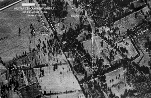
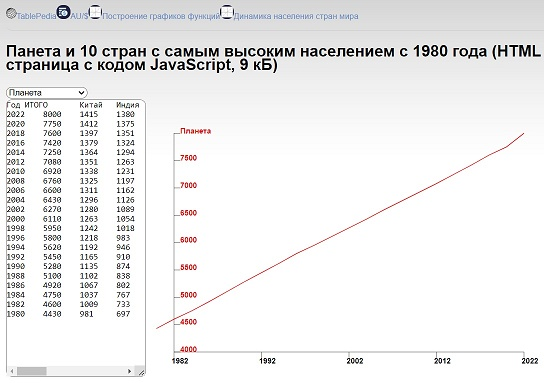
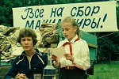

http://www.tablepedia.com/
#tablepedia0137
20.03.2023
Монолог учительницы о результатах контрольной работы
https://dzen.ru/media/id/606e57e2464afa09d4f9505b/monolog-uchitelnicy-o-rezultatah-kontrolnoi-raboty-6416e5ac577a68781b2ed07f
Моей первой учительницей стала фанатично строгая, всегда образцово одетая и причёсанная, худая и прямая, как стилет, женщина лет пятидесяти. Назовём её Сара Бореевна. У неё были прекрасные рекомендации, хронический гастрит и гордое звание заслуженного учителя РСФСР. А ещё она была коммунистом, в прошлом — парторгом школы и ярой сталинисткой. Над доской в нашем классе висели портреты — Маркс, Энгельс, Ленин и Сталин. Учителя шептались, что все настойчивые просьбы и требования руководства убрать портрет «вождя народов» наша учительница игнорировала. В конце концов, снять Сталина со стены постановил педсовет. В наш класс явилась странная компания — решительно настроенная завуч, молодая учительница биологии, не знавшая, куда себя деть от смущения, и старшеклассник со стремянкой. Руки у парня дрожали, когда он снимал Иосифа. Все три последующих школьных года на месте портрета на стене зиял светлый прямоугольник.
Помню первую контрольную работу. Я недоумевала, она показалась мне такой лёгкой. На следующий день было подведение итогов. Учительница молча прошла по рядам и раздала всем листки с работой. В правом нижнем углу моего красовалась аккуратная красная «5» и подпись — «Молодец!». Скосив глаза вправо, я увидела «3» у соседа — вычеркнутые красным из нестройных рядов крючочки и палочки, какие-то пометки на полях... Внутренне содрогнулась. В классе стояла напряжённая тишина, даже листочки с контрольной работой не шуршали, каждый лежал чётко перед учеником. Руки на парте, одна на другой, спины прямые. Сара Бореевна сказала:
— Перед вами лежит ваш первый итог, первая контрольная работа. Перед тем, как я соберу листы, посмотрите на неё внимательно и запомните, с чем вы начинали свою школьную жизнь. — Через несколько секунд звенящей тишины она продолжила. — Поднимите руки те, кто получил за работу пятёрки.
Моя правая рука автоматически поднялась ровно на девяносто градусов (локоть не отрывать от парты, пальцы вместе и вверх! И никак иначе). Кроме моей, поднято всего две руки.
— Посмотрите на этих учеников, — голос учителя вновь зазвучал в тишине. — Это те, кто серьёзно подошёл к заданиям, не допустил ни одного промаха, ошибки и даже помарки. Их работы идеальные. Это те ученики, на которых вам всем предстоит равняться. Внимательно посмотрите на них.
Дети зашевелились, ища глазами поднятые руки. В меня впилось как минимум двадцать пар глаз, все — с разным выражением, от напряжённого до откровенно насмешливого. Поднятая рука дрогнула. Я поймала взгляд мальчика со второй парты, он смотрел на меня участливо. Я тогда не поняла, почему.
— Хорошо. Опустите руки. Класс, глаза на меня! Теперь поднимите руки те, кто получил четвёрки.
На этот раз рук было больше, десять или двенадцать.
— Это те, кто не доработал. Допустил обидную ошибку или помарку. Кто мог бы написать на пятёрку, но не смог или не захотел. Был недостаточно серьёзен, не слишком постарался, приложил мало сил, поленился. Посмотрите на них внимательно. Это те ученики, кому чего-то не хватило до отличной оценки. Причины этому бывают разные — от невнимательности до лени. Но ни одну из причин я никогда не приму как уважительную.
И снова, после паузы, неумолимо:
— Опустите руки. Теперь поднимите руки те, кто получил тройки.
На сей раз руки поднимались несмело и не сразу. Чья-то выше, чья-то ниже, кто-то попробовал поднять и сразу опустить, но Сара Бореевна видела всех:
— Поднимите руки, я сказала! Троечники! Выше, ну!
Их было, наверное, человек пятнадцать. Опущенные глаза, головы, вжатые в плечи. Мой сосед по парте сидел, подняв руку и глядя в одну точку перед собой, сжав губы, с насквозь мокрой чёлкой. Он, кстати, стал потом военным, и неплохим — сейчас служит в звании полковника... Между тем, классная продолжала:
— Посмотрите на этих учеников. Посмотрите внимательно. Это те, кто не старались. Отнеслись к заданию контрольной работы пренебрежительно. Сделали тяп-ляп и сдали, думая, что сойдёт и так! Тройка — это самая гадкая из оценок. Тройки получают неудачники, неумехи, соглашатели и лентяи, у которых нет ни силы, ни воли, ни умения, ни даже смелости получить «два». Я ненавижу троечников. Запомните это. Опустите руки! — руки разом упали, как стебли скошенных цветов. Никто ни на кого уже не смотрел.
Моя спина покрылась мурашками. Было мрачно и гадко. Казалось, на моих плечах лежит огромный камень, будто это я получила за контрольную «два» и мне сейчас предстоит поднять руку...
— А теперь поднимите руки... Нет, лучше встаньте. Те, кто получил за контрольную работу двойки!
Пятеро...
— Итак, это вот наши двойки. Посмотрите на них внимательно, ребята, — продолжался спектакль одного актёра. — Я многое хочу вам сказать, товарищи двоечники. Хотя товарищами вас назвать нельзя, да и нет в этом никакого смысла. Вы были не просто небрежны. Вы не наработали даже на позорные «тройки» в своей первой контрольной работе! Я не знаю, что с вами будет дальше. Может быть, покатитесь по наклонной, будете позорить своих родителей и школу. Не знаю! Но учтите одно — ленивым, глупым и небрежным детям не место в нашем коллективе!..
#tablepedia0136
19.03.2023
История девочки, обнимающей Сталина
https://pulse.mail.ru/article/i-sboku-sinim-karandashom-napisano-ochen-chyotko-ustranit-istoriya-devochki-obnimayuschej-stalina-4221713113478006915-5132064424041683531/
 Наверняка вы видели знаменитую фотографию Сталина с маленькой бурятской девочкой, которая обнимает его за шею и счастливо улыбается. Девочку звали Энгельсина Маркизова. Всего через год после того, как был сделан этот снимок, ее отец был репрессирован, а сама она отправилась в ссылку. Рассказываем трагичную историю героини советских учебников и плакатов.
Наверняка вы видели знаменитую фотографию Сталина с маленькой бурятской девочкой, которая обнимает его за шею и счастливо улыбается. Девочку звали Энгельсина Маркизова. Всего через год после того, как был сделан этот снимок, ее отец был репрессирован, а сама она отправилась в ссылку. Рассказываем трагичную историю героини советских учебников и плакатов.
«Она была из тех красавиц, чье присутствие в ресторане заставляет и мужчин, и женщин нечаянно ронять вилки», — так писала правозащитница Людмила Алексеева о своей хорошей подруге Энгельсине Дорбеевой в воспоминаниях «Поколение оттепели». Алексеева сама не сразу узнала, что Энгельсина, которая училась с ней на Историческом факультете МГУ, — та самая девочка со знаменитой фотографии 1936 года. Именно с нее потом рисовали многочисленные плакаты и делали скульптуры, слагая оды Сталину — «лучшему другу советских детей».
Именно эта фотография вышла в советских газетах в конце января 1936 года со словами, которые до сих пор остаются у всех в памяти: «Спасибо товарищу Сталину за наше счастливое детство!» При этом и сегодня мало кто помнит, какой чудовищной была судьба и самой девочки, и многих других детей периода сталинизма, не говоря уже об их родителях. Но обо всем по порядку.
Энгельсина Маркизова родилась 16 ноября 1928 года в городе Верхнеудинске Бурят-Монгольской АССР (сегодня это город Улан-Удэ, столица Бурятии). Папа Энгельсины, Ардан Маркизов, участвовал в Гражданской войне и был убежденным коммунистом — совсем не случайно он назвал дочь в честь Фридриха Энгельса, а сына Владленом (сокращенно от «Владимир Ленин»). С 1936 года Маркизов служил народным комиссаром (то есть по сути министром) земледелия в родной республике.
Мама Энгельсины, Доминика Маркизова, была дочерью забайкальского казака. Когда Энгельсина была еще маленькой, Доминика поступила в Московский медицинский университет и стала учиться на врача. Как рассказывает сама Энгельсина в документальном фильме «Сталин и Геля», в период учебы ее мама жила с детьми в Москве. В 1936 году туда же приехал отец Энгельсины — с большой делегацией из Бурят-Монгольской АССР. Ее участникам должны были вручать награды высшие лица советского государства: на встрече с делегацией в Кремле, которая состоялась 27 января, был не только Сталин, но и, например, Вячеслав Молотов, Климент Ворошилов и Михаил Калинин.
На эту встречу и взял свою дочку Ардан Маркизов. Девочку подготовили заранее: красиво одели, купили ей два букета, которые она должна была вручить Сталину «в нужный момент». Но, как часто бывает с детьми, все получилось не совсем так, как планировалось. В какой-то момент маленькая Энгельсина, которой тогда было всего 8 лет, устала ждать нужного момента — и просто вышла к столу президиума, где сидели все высшие партийные чины.
По воспоминаниям Энгельсины, Сталин сидел к ней спиной. Климент Ворошилов увидел, что к нему бежит маленькая девочка, похлопал по спине и сказал: «К тебе пришли». Сталин с широкой улыбкой принял букеты и поставил девочку на стол президиума. «Это вам привет от детей Бурят-Монголии!», — выпалила Энгельсина, а потом поцеловала Сталина. Зал разразился бурными аплодисментами, защелкали многочисленные фотокамеры. На память об этой встрече Сталин подарил Энгельсине золотые часы с гравировкой и патефон.
Уже на следующий день фотография девочки, обнимающей Сталина, разлетелась по советским газетам. Образ почти сразу стал важным элементом культа Сталина, которого при жизни превозносили не только как политика, но и как «друга» советских детей, подарившего им «счастливое детство». А еще Сталина провозгласили «отцом народов», который заботится о большой «семье» советских граждан, вне зависимости от их этнической принадлежности. Для этих целей снимок с маленькой бурятской девочкой тоже отлично подходил. С него писали картины, делали монументальные росписи и скульптуры, украшавшие школы, театры, спортивные комплексы городов по всей стране.
Энгельсина Маркизова в одночасье стала знаменитостью. Как вспоминала она сама в документальном фильме «Сталин и Геля», в день публикации снимка к ней в гостиницу, где она жила с родителями, стали приносить подарки и игрушки, завалив ими всю комнату. В Улан-Удэ девочку встречали как героиню и приглашали на разные мероприятия. Советские родители стали стричь своих детей «под Гелю».
Счастье и популярность Энгельсины и ее семьи продлились совсем недолго — в ноябре 1937 года ее отец вместе с другими высокопоставленными деятелями Бурят-Монгольской АССР был арестован. Его (и еще 142 человек), по версии Энгельсины, обвинили в создании пан-монгольской контрреволюционной вредительской организации. Причиной обвинений стал мор скота в регионе — НКВД увидело в этом событии желание специально навредить советскому народу по приказу японской разведки. Впрочем, есть и другая версия, согласно которой Ардану Маркизову приписывали план покушения на Сталина.
Точно узнать, что произошло, мы пока не можем — дело находится в закрытом архиве ФСБ. Впрочем, Энгельсина Дорбеева утверждала, что ей удалось получить к нему доступ, и пересказала его содержание в уже упомянутом документальном фильме. Так или иначе, летом 1938 года Ардан Маркизов был расстрелян.
Фрагмент постановления о предъявлении обвинения и избрании меры пресечения в отношении Ардана Маркизова
Чтобы объяснить, что происходило с Энгельсиной дальше, нужно начать издалека. Было ли на самом деле столь счастливым детство советских детей при Сталине, как об этом писали в газетах? К сожалению, у красочной советской пропаганды и социальной программы была и обратная сторона.
В 1936 году была принята новая Конституция СССР. Кроме всего прочего, она стала знаменита тем, что в ней появился термин «враг народа» — как полноценный юридический термин. Изменение в языке ненамного опередило изменения в общественной жизни, а именно волну самых масштабных репрессий в истории советского государства, которая началась совсем скоро.
Может показаться, что репрессии касались только взрослых, которых могли заподозрить во «вредительстве» или «контрреволюции». Но на деле они оборачивались и против детей тех, кто был арестован и расстрелян. В самом начале репрессий 1937 года на высшем уровне было принято решение, что вместе с «виновными» в контрреволюции и измене родины необходимо обыскивать и арестовывать и членов их семей, в первую очередь жен и детей (но это часто были и пожилые родители).
На жен заводилось специальное следственное дело, у них конфисковывали имущество, а их самих после ареста отправляли в тюрьму. Детей обычно изымали. На тех из них, кто был старше 15 лет, тоже заводилось дело. Вот фрагмент из приказа наркома внутренних дел СССР №?00486 «Об операции по репрессированию жен и детей изменников родины» (документ от 15 августа 1937 года):
В документе подробно описывалось, что делать с детьми «врагов народа». Грудных детей, например, было предписано направлять в лагеря вместе с осужденными матерями, а в возрасте 1-1,5 лет передавать в детские дома. Детей до 15 лет размещали в детских домах подальше от Москвы.
Специально отмечалось, что нужно размещать раздельно детей, «связанных родством», то есть братьев и сестер разлучали
Ведь, как считали спецслужбы и руководство страны, они могли вступить в сговор и совершить контрреволюцию. Маленьким детям меняли фамилию, чтобы они потом не могли разыскать родных. В отношении детей старше 15 лет предлагали решать вопрос индивидуально. Их вполне могли осудить, как и родителей: уголовная ответственность, вплоть до лагерей и расстрела, наступала для советских детей с 12 лет (согласно постановлению от 7 апреля 1935 года).
Если появлялись родственники, готовые взять детей к себе, документ предписывал этому не препятствовать. Но такое случалось нечасто, многие боялись. За детьми «врагов» устанавливали специальное наблюдение. Если каких-то считали «опасными» (например, тех, кто защищал родителей, то есть, в терминах спецслужб, «высказывал антисоветские взгляды»), то их отправляли в детдома особого режима или так или иначе отгораживали от других детей.
В высшей степени трагичной была судьба малышей, попавших в лагерь для взрослых, например, в так называемый «АЛЖИР» — Акмолинский лагерь для жен изменников Родины в Казахстане. Они росли за колючей проволокой в чудовищных условиях, матери могли видеть их лишь во время кормления. Многие дети там умирали, а тех, кто выживал, после года или полутора отбирали у матерей и увозили в детдома. Как пишет на своем сайте Музей истории ГУЛАГа, В АЛЖИРе было отдельное «мамочкино кладбище», где хоронили женщин и грудных детей.
Судьба Энгельсины, впрочем, оказалась более счастливой — если так вообще можно сказать. После расстрела мужа ее мать, Доминику Маркизову, как жену «врага народа» сослали с детьми в южный Казахстан, где она стала работать врачом. Вместе с Энгельсиной Доминика написала письмо Сталину, но ответа не получила. В 1941 году женщину нашли мертвой. Обстоятельства ее смерти остаются таинственными. Энгельсине, по ее воспоминаниям, объяснили, что мать покончила с собой, «не вытерпев позора», но сама она считала иначе.
После смерти матери Энгельсина вместе с братом отправилась в Москву к своей тете, которой тогда было всего 25 лет. Тетя и ее муж, Сергей Дорбеев, не испугались и удочерили девочку. Они дали ей новую фамилию и отчество — теперь ее звали Энгельсина Сергеевна Дорбеева. Девочка начала жизнь с чистого листа — и должна была молчать о собственном прошлом.
По грустной иронии судьбы, Энгельсина стала ходить в школу, где висел тот самый портрет со Сталиным, списанный с ее собственной фотографии
Только теперь изображение официально называлось «Сталин и Мамлакат». Мамлакат Нахангова была сборщицей хлопка из Таджикской ССР. В возрасте 11 лет она побила рекорд при сборе урожая и получила за это орден Ленина и тоже лично встретилась со Сталиным (в 1935 году). После ареста и расстрела отца Энгельсины в пропаганде стали писать, что на фотографии с ней на самом деле изображена Мамлакат. На то, что девочке, обнимающей Сталина, явно меньше 11 лет, было решено не обращать внимание.
После школы Энгельсина поступила в Марийский государственный педагогический институт в Йошкар-Оле, а затем, в 1948 году, — на отделение востоковедения Исторического факультета МГУ. Она специализировалась на истории Юго-Восточной Азии (Вьетнам, Камбоджа) и после университета работала в школе, потом в университете, Институте востоковедения АН СССР и Библиотеке им. В. И. Ленина.
По все той же трагичной иронии судьбы на одном курсе с девушкой в МГУ училась дочь Сталина, Светлана Аллилуева. Времена тогда уже сильно изменились: в 1953 году умер Сталин, а в 1956-м, после знаменитого доклада Никиты Хрущева «О культе личности и его последствиях», в СССР началось переосмысление сталинизма и реабилитация невинных, которые подверглись репрессиям. Началась «оттепель» во внешней и внутренней политике: было смягчено уголовное законодательство, ослаблена цензура, начались экономические реформы.
Энгельсина Дорбеева прожила долгую жизнь: увидела не только «оттепель», но и времена «застоя», и реформы второй половины 1980-х, и развал СССР. Она дважды была замужем, родила дочь и сына. Ее первый муж, Эрик Комаров, служил советским культурным атташе в Индии, поэтому Энгельсина некоторое время жила и работала в этой стране. Второй муж был ученым-востоковедом, с ним Энгельсина жила до конца своих дней в Москве. В 2004 году она скончалась во время отдыха в Турции.
Знаменитая фотография со Сталиным по-прежнему известна и продолжает оставаться символом сталинских времен — с их яркой, красочной образностью и совсем не радостным, пугающим содержанием.
#tablepedia0135
08.03.2023
Хочу вернуть Выготского в школу
https://dzen.ru/a/Y_8giod6bXs3wQtT
Мои читатели знают, как я всей душой люблю Л. С. Выготского. Был в моей жизни мощный ага-момент, связанный с великим учёным-когнитивистом. Когда я изучала, собирала, как пылесос, по миру самые современные, самые эффективные, самые научно-обоснованные педагогические технологии, практики и подходы, я из раза в раз натыкалась на то, что всё это берёт своё начало с Выготского. Конечно, ещё и Пиаже и Дьюи. Но честное слово, так как ценят в мире Выготского, мне кажется, так не ценят никого. Его портрет вы увидите в инновационных образовательных институтах Калифорнии, в кабинетах самых известных директоров школ Европы и Азии. Его цитатами пестрят мировые бестселлеры об образовании.
А главное, его заветы много где в мире можно "потрогать" в школах на уроках в реальном взаимодействии учителей с учениками. И совсем мало на практике можно "разглядеть Выготского" на его родине. Кроме как автора теории ЗБР (зоны ближайшего развития) его в педвузе и не представляют. Это моя большая печаль. За последние 100 лет в образовании глобально не так много было прорывных открытий. Практически всё, до чего дошли исследователи доказательной педагогики, тот же Хэтти, эмпирическим путём было открыто 100 лет назад. И многое именно Выготским. Как только я слышу где-то про очередную инновацию, революцию в образовании, я вижу при детальном изучении заветы Выготского.
Есть у меня одна обида на российский образовательный мир по поводу Выготского. Обида такая большая, что надо всё-таки об этом написать. Вы же знаете, что я преподаю Кооперативное обучение педагогическим коллективам. Каждый раз, когда я веду тренинг по Кооперативному обучению, в коллективе неизбежно возникает один человек с вопросом: «О! А это не Сингапурский метод?» Мне кажется, я скоро просто выбью татуировку на своём лбу: «Нет никакого Сингапурского метода». Давайте всё-таки не нарушать авторских прав и давайте с уважением относиться к исторической правде.
Итак, никакого Сингапурского метода нет. Есть страна Сингапур, есть Сингапурская система образования. Да, сегодня она самая эффективная в мире. И они молодцы. Но они просто очень круто берут из доказательной педагогики всё, что показало эффективность и встраивают в работу системы, обязывая педагогов это применять. В Сингапуре, если ты, как учитель, знаешь, например, детскую психологию, физиологию, труды Выготского того же, но не применяешь, это должностное преступление. Теперь про метод. Обычно Сингапурским методом называют эффективно организованную работу в группах. И говорят о приёмах, у них есть стандартные названия: Round Robin, Quiz-Quiz-Trade, Corners и так далее. Друзья, сингапурцы не придумывали это. Это технология Кооперативного обучения (Cooperative learning), запатентованная академией Кооперативного обучения, штаб-квартира которой находится в Калифорнии. Вот их сайт, если вы по нему погуляете, вы увидите все эти «сингапурские» названия приемов.
Почему же в России закрепилось неверное наименование технологии? Отвечаю. Сингапур — маленькая страна. Там всего около 30 000 учителей. Их всех обучили разным технологиям, в том числе Кооперативному обучению. Всех до одного. Поэтому зайдя в любой класс, вы увидите детей, сидящих в группах и работающих большую часть урока вместе. Однако вы это увидите не только в Сингапуре. Зайдите в любую школу в Дубае, где сейчас одни из лучших в мире школ. Зайдите в школу в Швейцарии. Таких стран, где все педагоги работают в технологии Кооперативного обучения, много. А в больших странах много таких учителей.
В России случилось вот что. В начале 10-х в Татарстане был очень продвинутый министр образования. В рамках сотрудничества с Сингапуром, который на тот момент уже вышел в топовые позиции по образованию, смотрели и школы. Увидели «инновацию», пригласили сингапурских консультантов внедрять. Министр тогда поставил задачу обучить 20 000 учителей Татарстана. Было серьёзное сопротивление. Не многие хотели менять подходы. Надо отметить, управлять классом в режиме групповой работы гораздо сложнее, чем работать фронтально. Это эффективно, но это и энергозатратной. Стало звучать: «Это американское, нам не подходит». Решили пойти по простому пути, сказать, что это сингапурское, с ними натянутых отношений не было. Так оно с тех пор и прижилось в России. Откуда я это знаю? Из первых уст, от собственно тех, кто внедрял.
И я жутко сержусь. Потому что, если бы уважаемые чиновники в образовании потрудились, они бы покопали и поняли, что это никакое не американское. Профессор Кейган (Spenser Kagan), основатель академии Кооперативного обучения в начале 90-х прописал приёмы Кооперативного обучения. Тогда их было несколько десятков, сейчас уже около 300 для абсолютно всех предметов, и для точных, и для гуманитарных, и для опросов, и для подготовки к контрольным, на все вкусы. Кейган тоже придумал это не сам, он описывал приёмы на основе опыта разных педагогов в мире, которые креативно в своих классах что-то придумывали. Причём по большей части это был опыт учителей иностранных языков, именно поэтому, когда учителя английского учатся технологии, я часто от них слышу: «О, а я знаю такую технику. И такую тоже». А за основу Кейган взял труды Выготского. Именно Выготский первым сказал ещё 100 лет назад:
«...Всякая функция в культурном развитии ребёнка появляется на сцену дважды, в двух планах, сперва — социальном, потом — психологическом, сперва между людьми, как категория интерпсихическая, затем внутри ребёнка, как категория интрапсихическая».
А ещё он сказал: «Научишься сам, когда научишь других». И это знает каждый учитель, мы часто говорим: «Пока тему готовила, сама всё поняла». Именно на этом основана идея Выготского о том, что дети лучше и эффективнее всего учатся в группах, проговаривая материал друг другу, проверяя друг друга, давай друг другу обратную связь после того, как услышали материал от учителя или прочли.
Коллегам из Татарстана хорошо бы это знать, прежде чем вешать маркетинговую упаковку на прекрасную технологию. Сингапурский метод... Хе-хе! Между прочим, Сингапурцы даже не в курсе, что они изобрели какой-то метод.
Друзья, давайте не бежать за инновациями. Давайте не упаковывать эффективные педагогические инструменты в продаваемые обёртки модных стран. Российские учёные стояли у истоков очень многих базовых образовательных концепций. Одна только периодизация возрастного развития Леонтьева чего только стоит.
Учителя часто пугаются новомодных названий, и когда слышат про очередной Сингапур, видят перед собой детей совершенно иной ментальности, совершенно иные семьи, чем в их реалиях, думают, что всё это не переложить на их опыт и в итоге отмахиваются. Не Сингапур нам нужно внедрять. Нам просто нужно вернуть в школу Выготского. Это моя большая мечта.
Я не просто сижу и мечтаю, я иду к своей мечте. Уже несколько сотен росийских школ научились эффективно организовывать групповую работу. Я это делаю, несмотря на то что основного бизнеса и кучи проектов консультирования школ мне хватило бы на несколько жизней. При этом есть учителя, которые тоже очень хотят, однако их школы пока не организовали внутреннее обучение. Вот для таких учителей я наконец сделала онлайн курс "Учимся учить иначе", моя цель сделать такой курс максимально доступным для любого учителя (просто представьте, в среднем в России сейчас обучиться так называемому Сингапурскому методу стоит около 10 000 рублей, а если учиться в академии Кооперативного обучения, это около 500 долларов за 10 приемов). Будем возвращать Выготского вместе?
#tablepedia0134
07.03.2023
А что такое «посадить на кол»? Педагог Евгений Ямбург — о жестоких сюжетах в сказках и жизни
https://mel.fm/zhizn/knigi/6754231-a-chto-takoye-posadit-na-kol-pedagog-yevgeny-yamburg--o-zhestokikh-syuzhetakh-v-skazkakh-i-zhizni
Читая детям сказки, мы порой сталкиваемся с жестокими сюжетами, которые приходится как-то комментировать. И комментировать их нужно очень аккуратно — особенно если ты педагогический работник. Об этом (и не только) в своей новой книге «Трагический оптимизм. Непрекращающийся диалог» размышляет Евгений Ямбург — заслуженный учитель России, директор московского Центра образования №?109.
Очередная новость, которую просили прокомментировать в СМИ, при-
шла из Таганрога. ЧП на этот раз случилось в детском саду. Там воспитательница, не подозревая об опасности, читала детям сказку Ершова «Конек-Горбунок». Как известно, в сказке царь угрожает Ивану:
«Если ты недели в три
Не достанешь мне Жар-птицу
В нашу царскую светлицу,
То, клянуся бородой,
Ты поплатишься со мной:
На правеж — в решетку — на кол!
Вон, холоп!» Иван заплакал
И пошел на сеновал,
Где конек его лежал.
Один ребенок попросил объяснить, что это значит: посадить на кол. Воспитательница и объяснила, после чего у ребенка началась истерика. Родители пожаловались руководителю детского сада, после чего воспитательница была уволена. Ну что тут скажешь… У разных детей разная психика, кроме того, у малышей конкретное мышление.
По аналогии я вспомнил случай, свидетелем которого оказался в Музее космонавтики в Москве. Экскурсовод — девушка-аниматор, одетая в костюм, напоминающий космический скафандр, — вела группу малышей детского сада. Надо сказать, что работала она блестяще, повествуя о космосе с учетом возрастной психологии и особенностей мышления слушателей. Так, например, рассказы- вая о запредельных температурах в космосе, она попросила малышей потереть ладошку о ладошку, чтобы почувствовать тепло.
Далее речь зашла о первых космонавтах — собаках. Как известно, собаки Белка и Стрелка благополучно вернулись на Землю. Но Лайка была обречена. Когда речь зашла о Лайке, одна смышленая девочка, вспомнив о высоких температурах в космосе, неожиданно задала вопрос: «А что, Лайка сожглась?»
Мгновенно сориентировавшись, экскурсовод нашла блестящий ответ: «Она стала героем!»
Вероятно, в истории с «Коньком-Горбунком» следовало ответить абстрактно, что посадка на кол — это такой вид казни. И вопрос был бы снят сам собой.
Но, согласитесь, трудно требовать от каждого воспитателя такой находчивости. Она действовала спонтанно и на прямой вопрос дала прямой ответ. Не будем сравнивать таганрогскую воспитательницу детского сада с московскими экскурсоводами Музея космонавтики.
Через них проходят тысячи детей, вопросы которых похожи и ожидаемы. Кроме того, они, в силу специфики музея, ежедневно отрабатывают одну и ту же тему.Не думаю, что в ситуации с «Коньком-Горбунком» они так же блестяще вышли бы из положения.
Является ли данный педагогический прием объяснения универсальным, годящимся на все случаи жизни? Ну разумеется, нет. В реальной педагогике таких вечных рецептов не существует.
Я рассказал о таганрогском случае в детском саду, что вот уже тридцать лет входит в наш комплекс. Одна из воспитательниц поделилась своим свежим опытом. Оказывается, она только вчера читала ту же сказку своей внучке. На вопрос ребенка о том, что такое посадка на кол, она ответила вполне корректно: вид казни. Но любознательный ребенок не успокоился и продолжал допра- шивать бабушку: «А конкретно?» Пришлось поведать ребенку на доступном его пониманию примере, что это приблизительно так, как при изготовлении шашлыка на шампур нанизывают куски мяса.
«Какой ужас!» — воскликнул ребенок и страшно расстроился
Следует заметить, что и наши отечественные, и зарубежные сказки порой весьма зверские. Чего стоит, например, повествование о Красной Шапочке? Это же надо было матери додуматься — отправить маленькую девочку в лес, где ее подстерегает опасность в лице волка! Да за такое обращение с детьми сегодня судят, а вслед пропавшему ребенку отправляют МЧС.
В сказке роль службы спасения досталась охотникам. Но и они опоздали. Пришлось взрезать живот волку. Тоже, скажем прямо, та еще натуралистическая подробность, способная вызвать ночные кошмары у впечатлительного ребенка.
Таков педагогический «разбор полетов» незадачливой воспитательницы, которую съели злые волки — администраторы. Увы, лозунг советских времен «народ и партия едины» действует по сию пору в несколько модернизированном виде, когда верхи и низы проявляют трогательную солидарность в стремлении навязать
нашим детям единую схему воспитания.
#tablepedia0133
05.03.2023
Письма И. В. Сталину от советских детей
https://pulse.mail.ru/article/tovarisch-stalin-pitaniya-u-nas-net-6-pisem-v-kreml-ot-sovetskih-detej-4221713113478006915-6658646632485480195
После смерти Ленина в 1924 году при Сталине была продолжена диктатура пролетариата, которую не всегда хотели пролетарии всех стран, а иногда против неё восставали в самом СССР. После Второй мировой войны (1939-1945) РСФСР, УССР и БССР вступили в ООН, а большая часть стран Восточной Европы вступили в Варшавский договор для противостояния НАТО. В 1950 году М. С. Горбачёв поступил на юридический факультет МГУ за подвиг во время уборки урожая. Иосиф Виссарионович умирал при не до конца выясненных обстоятельствах с 1 по 5 марта 1953 года (возможно, его отравил Берия). В 1956 году Н. С. Хрущёв отказался от диктатуры пролетариата и пообещал коммунизм к 1980 году. В 1991 году Варшавский договор был расторгнут, а РСФСР, УССР и БССР вышли из состава СССР при молчаливом согласии Горбачёва.
В исторических архивах сохранилось много писем от советских детей Иосифу Сталину и другим советским чиновникам. Содержание у них примерно одинаковое. Авторы благодарят вождя и его коллег за хорошую жизнь, шлют им самые теплые пожелания. Однако вслед за этим рассказывают, что им нечего есть и что они не могут купить книги. Публикуем некоторые из таких писем — орфография и пунктуация авторов сохранена.
1
«Я хочу Вам описать мою невеселую жизнь». Письмо 12-летней Нины
18 января 1937 года
«Здравствуйте, дорогие товарищ Сталин! Наш любимый вождь, учитель и друг всей счастливой советской страны. Дорогие товарищ Сталин! Я шлю Вам свой горячий и сердечный привет и желаю Вам лучших успехов в жизни Вашей, быть здоровым навсегда. Я хочу Вам описать мою невеселую жизнь.
Дорогие тов. Сталин! Я слыхала по радио в Ваших речах, Вы говорили, что в Советском Союзе жизнь детей очень хорошая, они учатся в школах, широко открыты им двери в школу. Это, конечно, верно, дорогие товарищ Сталин. Дорогие Иосиф Виссарионович, я и мой брат Александр не в силах ходить в школу. Потому, что, товарищ Сталин, питания у нас нет.
Корову и лошадь у нас уже отобрал Куриловский сельский Совет в 1935 году.
И вот уже второй год мы живем без коровы и лошади. Теперь у нас в настоящее время нет никакой скотины ввиду того, что сельский Совет неправильно на нас наложил налог. Он учел, что отец мой ездил под извозом, но то все неверно. Отец мой не ездил, и наложили неправильно — все ложно. Одного налогу было положено 900 рублей, а всего было наложено больше двух тысяч рублей. Такой большой налог мы уплатить не в силах. Семья у нас, товарищ Сталин, 8 человек: 6 детей, самой старшей девочке — 14 лет и самому младшему — 2 года.
Дорогие Иосиф Виссарионович! В колхоз мы не вступили потому, что отец мой инвалид, он сражался на двух войнах и потерял там все свое здоровье, и так что работать в колхозе не в силах. А единолично жить тоже неважно, не только неважно, но даже плохо. Но мы работаем не торопясь, помаленьку. Земли мы в настоящее время не имеем, сдали в колхоз в 1936 году.
Я, товарищ Сталин, хожу в школу в 4-й класс, а брат мой тоже ходит в школу во 2-й класс. Остальные не учатся, потому что еще молоды.
Дорогие товарищ Сталин, в школу нам ходить очень невозможно, так как нет питания, и к тому же у нас очень сильное малокровие. Дорогие товарищ Сталин! Я хочу Вам описать о моих успехах, как я учусь: отметки у меня за первую четверть были по семи предметам «отлично», а по трем предметам —«хорошо»… Но я добьюсь, чего хочу, чтобы по всем предметам за 3-ю четверть было «отлично».
Но если бы, товарищ Сталин, было питание, то я училась бы еще лучше
Ни один ученик в 4-м классе не записался в пионеры. Но я заявила вожатому отряда, что я хочу вступить в пионеры, и меня записали в звено в 6-й класс под именем Вас, товарищ Сталин.
Дорогой и любимый вождь, товарищ Сталин! Я думаю и надеюсь на Вас, что Вы окажете нам какую-либо помощь. И не оставите неисполненной мою просьбу.
Спасибо товарищу Сталину
За нашу счастливую жизнь!
За детство счастливое наше,
За наши чудесные дни.
Так вот, товарищ Сталин, любимый наш вождь, я Вам описала свою жизнь. Надеюсь на Вас, любимый вождь счастливой страны, что Вы не оставите мою просьбу. Пишите, пожалуйста, дорогой товарищ Сталин, мне ответ, я буду ждать с нетерпением.
Н. Швецова (мне 12 лет)»
2
«Собрать для школы 5 кг верхушек картофеля». Письмо 8-классника Юры
«Дорогой Иосиф Виссарионович!
Руководимая Вашим гением Красная Армия изгоняет победоносно врага из священных пределов нашей Родины. Каждый человек, находящийся в тылу, должен помогать Красной Армии. Я обязуюсь:
Перейти в следующий класс
В летние каникулы работать в колхозе и выроботать не менее 50 трудодней.
Собрать для школы 5 кг верхушек картофеля
Собрать 50 кг металлолома
Вношу на постройку самолетов «Полина Осипенко» 50 рублей. От всей души желаю Вам, наш вождь, жить долгие, долгие годы, чтобы во всем мире воссияли принципы свободы, правды и братской любви.
Ученик 8-го кл. «А» Первомайской средней школы Шумилов Юрий»
3
«Извините, что побеспокоили своим письмом». Письмо детей переселенцев
20 июля 1938 года
«Любимому вождю всего народа И. В. Сталину от ученицы 9го кл. шк. № 67 гор. Новосибирска Антиповой Е.Г. и ученицы 7го кл. шк. № 66 гор. Новосибирска Балахниной В.И.
Дорогой Иосиф Виссарионович Сталин!
Мы, ученицы, желаем быть садоводами, но к дальнейшему продолжению своего образования не имеем средств, так как наши родители спецпереселенцы и уже больные. Они, занеимением средств, отказываются нас учить.
Мы так же на равне с другими людьми нашей замечательной счастливой родины желаем быть полезными в деле социалистического строительства. Мы желаем быть пока в ученицах у какого-нибудь садовода, где бы мы могли научиться садоводству и получать стипендию для существования. Мы решили обратиться к Вам лишь потому, что мы надеемся, что Вы любимый вождь, отец и друг всего народа обратите внимание и на нашу просьбу.
Просим Вас тов. Сталин оказать нам помощь.
Извините нас любимый учитель и отец тов. Сталин, что мы Вас побеспокоили своим письмом».
4
Письмо пионера А. Ф. Трелина
Товарищ Сталин!
Я пионер Трелин Александр Фёдорович, прошу Вас поместить мои рисунки в газете «Правда», кот является литературным органом Центрального комитета ВКП (б). Я также прошу Вас за присланные мною записки выслать гонорар в сумме 10 рублей на приобретение книг, так как я хочу учиться, а средств не имеется на покупку книг.
Надеюсь, что в просьбе не откажете.
#tablepedia0132
01.03.2023
Публикации канала "Обзор статей и сайтов" https://dzen.ru/id/6071a763a6719211c8117275
(за февраль 2023 года)
5 школьных частушек про перемену22 частушки про школу
Ералаш: список серий по десятилетиям со ссылками
Паразиты наживаются на псевдонауке
Предлагаю обсудить создание нейросети для школьников
Какие компьютерные программы создал Анатолий Вассерман?
Знаменательные даты народов России с 20 февраля по 29 июня 2023 года
#tablepedia0131
28.02.2023
Советские анекдоты, которые нужно включить в учебники https://dzen.ru/media/id/5d6fa2462fda8600ad57bae7/sovetskie-anekdoty-kotorye-nujno-vkliuchit-v-uchebniki-5e12f1e53d5f6900b6bfab7a
 1
1
Едет в поезде Ленин. Вдруг впереди кончились рельсы. Ленин встает, идет к выходу из вагона и говорит:
- Все за мной, на коммунистический субботник!
Вышли, положили новые рельсы. Поехали дальше.
Едет в поезде Сталин. Вдруг впереди кончились рельсы. Сталин раскуривает свою трубку, выпускает колечко дыма и говорит:
- Если не положите рельсы, я вас всех расстреляю!
Все выскочили из вагона, положили новые рельсы.
Едет в поезде Хрущев. Вдруг впереди кончились рельсы. Хрущев взбирается на стул и толкает речь:
- Построим рельсы за 20 минут. Для этого берём рельсы, которые сзади и кладем их вперед!
Все быстро выскочили разобрали то что сзади положили перед паровозом и поехали дальше.
Едет в поезде Брежнев. Вдруг впереди кончились рельсы. Брежнев, очнувшись от старческого сна, спрашивает:
- В чём дело?
Ему отвечают:
- Так рельсы впереди кончились!
Брежнев шамкает:
- Жаль. Я так хорошо спал, вагон так уютно качался! Вы вот что, выйдите из вагона и раскачивайте его, а я посплю!
Все выскочили из вагона и начали его раскачивать, имитируя стук колес и движение поезда:
- Чучух-чучух! Чучух-чучух!
2
Брежневские времена застоя.
Отправляют агента ЦРУ в СССР на задание, узнать настроение советских людей. Через некоторое время он возвращается. Его спрашивают:
- Ну, как там?
Он отвечает:
- СССР страна парадоксов. Вот судите сами.
Безработицы нет, а никто не работает.
Никто не работает, а план выполняют.
План выполняют, а в магазинах ничего нет.
В магазинах ничего нет, а дома в холодильниках у всех всё есть.
В холодильниках у всех всё есть, а все недовольны.
Все недовольны, а голосуют «за» …
3
Встречаются Горбачев, американский президент Буш и французский президент Миттеран.
Буш хвастается, как его рабочие хорошо живут:
- Вот у нас в Америке рабочие получают 2 000 долларов, 500 долларов тратят на кредит за дом, 400 долларов на еду и 100 долларов на бензин на машину. А на остальные 1000 долларов они шикуют, и это меня не волнует!
Миттеран хвастает:
- Вот у нас во Франции рабочие получают 2000 франков. 100 франков платят кредит за дом, 400 на еду и 500 за бензин, а на остальные 1000 франков они шикуют и меня это не волнует!
Горбачев почесал репу и выдает:
- А я своим работягам даю талоны на 500 рублей на еду, а где они остальные 1 500 рублей берут меня не волнует!
Ну и один не для учебников:
Конец эпохи перестройки… Горбачев первый президент СССР. Ельцин у него в подчинении и руководит Москвой. Вот решили американцы пригласить Ельцина к себе в гости, расспросить, как он живет, и сравнить с тем, как живет Горбачев...
Американский президент Буш встречает Ельцина и говорит:
- А давай-ка Борис, в баньку, по-русски, сходим, помоешься с дорожки!
Тот соглашается. Заходят они в баню. Буш с подозрением спрашивает у Ельцина:
- А чего ты носки не снимаешь?
- Да они у меня нарисованные! Талоны на носки кончились!
Буш:
- Понимаю, вчера Горбачев заезжал, замучился костюм оттирать!
Ну и на прощание анекдот со смыслом от Жоржа Читинского.
Умер Горбачев, встречает на том свете Брежнева. А тот при параде, при всех регалиях.
Подходит к Горбачёву Брежнев и говорит:
- До чего ты докатился, Миша, вот у меня вся грудь в орденах и медалях, а у тебя на груди одни талоны!
#tablepedia0130
19.01.2023
Предлагаю ток-шоу "Гопники и разруха" https://dzen.ru/media/id/606e57e2464afa09d4f9505b/predlagaiu-tokshou-gopniki-i-razruha-639c6bf19668267659f46103
 Пока что не вижу смысла в детальном описании ток-шоу "Гопники и разруха" в виде проекта. Давайте обсудим идею подготовки его выпусков:
Пока что не вижу смысла в детальном описании ток-шоу "Гопники и разруха" в виде проекта. Давайте обсудим идею подготовки его выпусков:
1. Претенденты на участие в ток-шоу пишут воспоминания, кто, где и когда пострадал от гопников, а их оппоненты пишут опровержения.
2. При неустранимых противоречиях проводится подобие очной ставки на телевидении, где воспоминания подкрепляются архивными документами и фотографиями местности.
3. Зрители и эксперты могут высказывать мнения (как до очной ставки, так и во время неё) о сложных ситуациях в экономике СССР на рубеже 80-х и 90-х годов и особенностях конкретного населённого пункта (с подробностями о либерализации, приватизации и маргинализации).
4. В конце резюмируется, что было в данной местности в 1980 году и что стало в 2020 году (количество жителей, обеспеченность жилплощадью и социальными завоеваниями, потерянные производства и новые рабочие места).
#tablepedia0129
18.01.2023
Десяткам миллионов паразитов, которые сознательно или неосознанно разрушали СССР (не только тем, которые скакали на площадях за "независимость", но и другим, которые до 1991 года разворовывали предприятия, недовыполняли план выпуска продукции, саботировали получение сырья, по блату получали и распределяли жильё и места в вузе, занимались контрабандой и браконьерством, прятали товары под прилавком, говорили избитым детям, что те должны учиться жизни и уметь постоять за себя) не получится всё свалить на нескольких бывших членов КПСС. А если СССР не смог постоять за себя, то он сам виноват?
Принимаю ваши отзывы и ответы по адресу:
yaroslav1982@mail.ru
#tablepedia0128
09.01.2023
Один из способов паразитизма - это когда НЕКТО утверждает, что получил почти лучшее в мире образование, но когда его просят НАПИСАТЬ, что он понимает под социальной справедливостью - отказывается (то есть не хочет или не может).
Редакция сайта http://tablepedia.com/ под социальной справедливостью понимает оплату труда, примерно пропорциональную вкладу в создании товаров или значимости службы, а также примерно одинаковый доступ иждивенцев к социальным благам (удовлетворение базовых жизненных потребностей, доступ к образованию и медицине, получение информации для обеспечения законных интересов).
20 февраля - Всемирный день социальной справедливости. Возможно, политики и учёные договорятся до более полного определения, которое устроит большинство.
#tablepedia0127
03.01.2023
Публикации канала "Обзор статей и сайтов" https://dzen.ru/id/6071a763a6719211c8117275
(за декабрь 2022 года)
Предлагаю обсудить понятия "справедливость" и "истина"
Нужно разобраться с собственностью физических и юридических лиц
#tablepedia0126
30.12.2022
Договор об образовании Союза Советских Социалистических Республик (30.12.1922) https://statearchive.ru/468
 Российская Социалистическая Федеративная Советская Республика (РСФСР), Украинская Социалистическая Советская Республика (УССР), Белорусская Социалистическая Советская Республика (БССР) и Закавказская Социалистическая Федеративная Советская Республика (ЗСФСР — Грузия, Азербайджан и Армения) заключают настоящий Союзный договор об объединении в одно союзное государство — „Союз Советских Социалистических Республик“ — на следующих основаниях.
Российская Социалистическая Федеративная Советская Республика (РСФСР), Украинская Социалистическая Советская Республика (УССР), Белорусская Социалистическая Советская Республика (БССР) и Закавказская Социалистическая Федеративная Советская Республика (ЗСФСР — Грузия, Азербайджан и Армения) заключают настоящий Союзный договор об объединении в одно союзное государство — „Союз Советских Социалистических Республик“ — на следующих основаниях.
1. Ведению Союза Советских Социалистических Республик, в лице его верховных органов, подлежат:
а) представительство Союза в международных сношениях;
б) изменение внешних границ Союза;
в) заключение договоров о приеме в состав Союза новых республик;
г) объявление войны и заключение мира;
д) заключение внешних государственных займов;
е) ратификация международных договоров;
ж) установление систем внешней и внутренней торговли;
з) установление основ и общего плана всего народного хозяйства Союза, а также заключение концессионных договоров;
и) регулирование транспортного и почтово-телеграфного дела;
к) установление основ организации вооруженных сил Союза Советских Социалистических Республик;
л) утверждение единого государственного бюджета Союза Советских Социалистических Республик, установление монетной, денежной и кредитной системы, а также системы общесоюзных, республиканских и местных налогов;
м) установление общих начал землеустройства и землепользования, а равно пользования недрами, лесами и водами по всей территории Союза;
н) общее союзное законодательство о переселениях;
о) установление основ судоустройства и судопроизводства, а также гражданское и уголовное союзное законодательство;
п) установление основных законов о труде;
р) установление общих начал народного просвещения;
с) установление общих мер в области охраны народного здравия;
т) установление системы мер и весов;
у) организация общесоюзной статистики;
ф) основное законодательство в области союзного гражданства в отношении прав иностранцев;
х) право общей амнистии;
ц) отмена нарушающих Союзный договор постановлений съездов Советов, Центральных Исполнительных Комитетов и Советов Народных Комиссаров союзных республик.
2. Верховным органом власти Союза Советских Социалистических Республик является съезд Советов Союза Советских Социалистических Республик, а в периоды между съездами — Центральный Исполнительный Комитет Союза Советских Социалистических Республик.
3. Съезд Советов Союза Советских Социалистических Республик составляется из представителей городских Советов по расчету 1 депутат на 25000 избирателей и представителей губернских съездов Советов по расчету 1 депутат на 125000 жителей.
4. Делегаты на съезд Советов Союза Советских Социалистических Республик избираются на губернских съездах Советов.
5. Очередные съезды Советов Союза Советских Социалистических Республик созываются Центральным Исполнительным Комитетом Союза Советских Социалистических Республик один раз в год; чрезвычайные съезды созываются Центральным Исполнительным Комитетом Союза Советских Социалистических Республик по его собственному решению или же по требованию не менее двух союзных республик.
6. Съезд Советов Союза Советских Социалистических Республик избирает Центральный Исполнительный Комитет из представителей союзных республик пропорционально населению каждой, всего в составе 371 члена.
7. Очередные сессии Центрального Исполнительного Комитета Союза Советских Социалистических Республик созываются три раза в год. Чрезвычайные сессии созываются по постановлению Президиума Центрального Исполнительного Комитета Союза или по требованию Совета Народных Комиссаров Союза Советских Социалистических Республик, а также Центрального Исполнительного Комитета одной из союзных республик.
8. Съезды Советов и сессии Центрального Исполнительного Комитета Союза Советских Социалистических Республик созываются в столицах союзных республик в порядке, устанавливаемом Президиумом Центрального Исполнительного Комитета Союза Советских Социалистических Республик.
9. Центральный Исполнительный Комитет Союза Советских Социалистических Республик избирает Президиум, являющийся высшим органом власти Союза в периоды между сессиями Центрального Исполнительного Комитета Союза.
10. Президиум Центрального Исполнительного Комитета Союза Советских Социалистических Республик избирается в составе 19-ти членов, из коих Центральный Исполнительный Комитет Союза избирает четырех председателей Центрального Исполнительного Комитета Союза, по числу союзных республик.
11. Исполнительным органом Центрального Исполнительного Комитета Союза является Совет Народных Комиссаров Союза Советских Социалистических Республик (Совнарком Союза), избираемый Центральным Исполнительным Комитетом Союза на срок полномочий последнего, в составе:
Председателя Совета Народных Комиссаров Союза,
Заместителей Председателя,
Народного комиссара по иностранным делам,
Народного комиссара по военным и морским делам,
Народного комиссара внешней торговли,
Народного комиссара путей сообщения,
Народного комиссара почт и телеграфов,
Народного комиссара рабоче — крестьянской инспекции,
Председателя Высшего Совета Народного Хозяйства,
Народного комиссара труда,
Народного комиссара продовольствия,
Народного комиссара финансов.
12. В целях утверждения революционной законности на территории Союза Советских Социалистических Республик и объединения усилий союзных республик по борьбе с контрреволюцией учреждается при Центральном Исполнительном Комитете Союза Советских Социалистических Республик Верховный Суд, с функциями верховного судебного контроля, а при Совете Народных Комиссаров Союза — объединенный орган Государственного Политического Управления, председатель которого входит в Совет Народных Комиссаров Союза с правом совещательного голоса.
13. Декреты и постановления Совнаркома Союза Советских Социалистических Республик обязательны для всех союзных республик и приводятся в исполнение непосредственно на всей территории Союза.
14. Декреты и постановления Центрального Исполнительного Комитета и Совнаркома Союза печатаются на языках, общеупотребительных в союзных республиках (русский, украинский, белорусский, грузинский, армянский, тюркский).
15. Центральные Исполнительные Комитеты союзных республик опротестовывают декреты и постановления Совнаркома Союза в Президиум Центрального Исполнительного Комитета Союза Советских Социалистических Республик, не приостанавливая их исполнения.
16. Постановления и распоряжения Совета Народных Комиссаров Союза Советских Социалистических Республик могут быть отменяемы лишь Центральным Исполнительным Комитетом Союза Советских Социалистических Республик и его Президиумом; распоряжения же отдельных Народных Комиссаров Союза Советских Социалистических Республик могут быть отменяемы Центральным Исполнительным Комитетом Союза Социалистических Республик, его Президиумом и Совнаркомом Союза.
17. Распоряжения Народных Комиссаров Союза Советских Социалистических Республик могут быть приостанавливаемы центральными исполнительными комитетами или президиумами центральных исполнительных комитетов союзных республик лишь в исключительных случаях, при явном несоответствии данного распоряжения постановлениям Совнаркома или Центрального Исполнительного Комитета Союза Советских Социалистических Республик. О приостановке распоряжения Центральный Исполнительный Комитет или Президиум Центрального Исполнительного Комитета союзных республик немедленно сообщает Совету Народных Комиссаров Союза Советских Социалистических Республик и соответствующему Народному Комиссару Союза Советских Социалистических Республик.
18. В состав Совета Народных Комиссаров союзных республик входят:
Председатель Совета Народных Комиссаров,
Заместители Председателя,
Председатель Высшего Совета Народного Хозяйства,
Народный комиссар земледелия,
Народный комиссар продовольствия,
Народный комиссар финансов,
Народный комиссар труда,
Народный комиссар внутренних дел,
Народный комиссар юстиции,
Народный комиссар рабоче — крестьянской инспекции,
Народный комиссар по просвещению,
Народный комиссар здравоохранения,
Народный комиссар социального обеспечения,
Народный комиссар по национальным делам, а также с правом совещательного голоса — уполномоченные Наркоматов Союза: по иностранным делам, по военным и морским делам, внешней торговли, путей сообщения и почт и телеграфов.
19. Высший Совет Народного Хозяйства и народные комиссариаты: продовольствия, финансов, труда и рабоче — крестьянской инспекции союзных республик, непосредственно подчиняясь Центральным Исполнительным комитетам и совнаркомам союзных республик, руководствуются в своей деятельности распоряжениями соответственных Народных Комиссаров Союза Советских Социалистических Республик.
20. Республики, входящие в состав Союза, имеют свои бюджеты, являющиеся составными частями общесоюзного бюджета, утверждаемого Центральным Исполнительным Комитетом Союза. Бюджеты республик в их доходных и расходных частях устанавливаются Центральным Исполнительным Комитетом Союза. Перечень доходов и размеры доходных отчислений, идущих на образование бюджетов союзных республик, определяются Центральным Исполнительным Комитетом Союза.
21. Для граждан союзных республик устанавливается единое союзное гражданство.
22. Союз Советских Социалистических Республик имеет свой флаг, герб и государственную печать.
23. Столицей Союза Советских Социалистических Республик является город Москва.
24. Союзные республики вносят в соответствии с настоящим Договором изменения в свои конституции.
25. Утверждение, изменение и дополнение Союзного договора подлежат исключительному ведению съезда Советов Союза Советских Социалистических Республик.
26. За каждой из союзных республик сохраняется право свободного выхода из Союза.
Подписали
члены полномочных делегаций от:
РСФСР УССР ЗСФСР БССР
#tablepedia0125
29.12.2022
Паразиты думают, что если они будут рассказывать после 2020 года, как им хорошо жилось в СССР, то никто не вспомнит, как они сидели на шее трудящихся!
#tablepedia0124
28.12.2022
Как училась Россия https://dzen.ru/a/Y6IR7CJb32was05S
 Повествование ведётся Светланой Моториной от первого лица (в виде текста) на её канале "Травля: со взрослыми согласовано".
Повествование ведётся Светланой Моториной от первого лица (в виде текста) на её канале "Травля: со взрослыми согласовано".
6-серийный подкаст «Как училась Россия» (история образования в России от Петра Первого до Ельцина) расположен по адресу:
https://arzamas.academy/podcasts/128
В каждой серии приглашённый историк, а в последней даже непосредственный участник событий (реформ), Александр Григорьевич Асмолов. Я знаю его лично и очень уважаю, как психолога и гуманиста. Я не застала времён, когда он был заместителем министра образования. Иногда у меня в комментариях звучит мысль о том, что он причастен к тем, кто развалил образование в России. Я до сих пор не понимаю, как именно. Не нашла пока этому подтверждений. А подкаст немного помог понять, что имеется ввиду. Асмолов входил в группу реформаторов, которая на изломе эпох ввела вариативность образования, кроме того, он участвовал в проектировании стратегии образования, частью которой стало введение ЕГЭ. Только вот, как оказалось, то, что задумывали реформаторы, и то, во что ЕГЭ превратили — это, как говорится, две большие разницы.
Подкаст очень рекомендую. Впереди новогодние каникулы, прекрасное время, чтобы погрузиться в историю. Вот, например, что вы узнаете:
Действительно ли до Петра 1 в образовании была полная пустыня?
Кто из правителей создал систему образования в России как систему?
Как повлияли запреты конца 19 века (закон о кухаркиных детях, квота на евреев, запрет на изучение философии) на образование в школах и университетах?
Почему предмет «словесность» / «литература», будучи предметом, польза которого не очень понятна, но этот предмет всегда был полем битвы за головы учеников, всегда представлял риск для власти?
Почему на философских кораблях в первую очередь высылали совсем не философских представителей вузов, а технических?
Как сын Сталина повлиял на запрет педологии (направление в педагогике, нацеленное на разработку методики обучения и воспитания детей на основе научных данных и исследований)?
Как в хрущёвскую эпоху возникло тотальное недоверие к семье?
Действительно ли многие педагоги-новаторы 70-80х вышли из старших пионервожатых?
Как вообще стало возможным, что в 1986 году была манифестирована педагогика сотрудничества (гуманистическая педагогика), не спущенная сверху, а выросшая из низов?
Как в противоречивую ельцинскую эпоху в образовании была разрешена вариативность, вернулась педология, появились программы развития одарённых, авторские школы и многое другое?
Стал ли ЕГЭ тем инструментом, который предполагали реформаторы или его извратили гонкой за баллами?
К сожалению, обзор заканчивается 96-м годом, когда был предложен ЕГЭ...
#tablepedia0123
09.12.2022
Диссидентское движение и Московская Хельсинская группа https://dzen.ru/media/vatnikstan/hronika-dissidentskih-sobytii-5c0fbd0b5970ce00a9373cf3
 Когда-то давно в Европе диссидентами («несогласными») назвали христиан, которые не придерживались господствующей конфессии в том или ином государстве. Диссидентами в Англии стали противники англикан — католики и радикальные протестанты, во Франции — гугеноты, а в Польше — православные. В советской истории после Сталина диссидентами стали другие «несогласные» — представители политической оппозиции. Они нередко были разрозненными: правозащитники, национальные движения, отдельные писатели или философы не смешивались между собой, хотя и находили возможным воспринимать себя единым движением.
Когда-то давно в Европе диссидентами («несогласными») назвали христиан, которые не придерживались господствующей конфессии в том или ином государстве. Диссидентами в Англии стали противники англикан — католики и радикальные протестанты, во Франции — гугеноты, а в Польше — православные. В советской истории после Сталина диссидентами стали другие «несогласные» — представители политической оппозиции. Они нередко были разрозненными: правозащитники, национальные движения, отдельные писатели или философы не смешивались между собой, хотя и находили возможным воспринимать себя единым движением.
Диссидентство начало зарождаться в период оттепели, и формально за точку отсчёта можно принять XX съезд КПСС 1956 года. Доклад Хрущёва о культе личности Сталина взбудоражил общественность, но направить эту энергетику в политическое русло было практически невозможно — критиковать пороки общественно-политического развития дозволялось лишь в тех рамках, которые определяла заданная сверху установка.
Те же, кто шёл в критике дальше, могли сталкиваться с соответствующими санкциями. Одним из первых диссидентских «дел» стала история аспиранта и секретаря комитета комсомола исторического факультета МГУ Льва Краснопевцева. Несколько выпускников истфака во главе с Краснопевцевым основали кружок, в котором обсуждали причины сталинизма и перспективы дальнейшей десталинизации. По сути, они лишь углубляли и развивали предложенную партией мысль. Члены кружка подготовили листовку с призывом к борьбе за «социалистическое обновление» в духе XX съезда и распространили несколько сотен экземпляров в столице. В августе 1957 года их арестовали, Лев Краснопевцев получил 10 лет лагерей.
Многие стихийно возникавшие во второй половине 1950-х годов кружки были такими же недолговечными, в том числе по причине репрессий. Собственной подпольной традиции и преемственности с диссидентами 1960-х годов они не заложили.
В июне 1958 года на площади Маяковского в Москве установили памятник советскому поэту. Теперь эта площадь называется Триумфальной, хотя расположенность рядом со станцией метро «Маяковская» и собственно сам памятник по-прежнему позволяют называть это место «Маяковкой». Во время официальной церемонии открытия, естественно, читали стихи. Когда официальная часть закончилась, собравшаяся публика продолжила поэтические чтения и договорилась, что эту традицию стоит продолжить.
Проблема заключалась в том, что читали стихи всех поэтов, в том числе запрещённых. Да и когда в 1960 году эти поэтические вечера, возобновлённые по инициативе студентов во главе с Владимиром Буковским, стали собирать сотни людей, то это стало походить на провокационные несанкционированные митинги. Дружинники задерживали и записывали чтецов, активистов могли исключать из вузов, а иногда случались и драки на площади. В 1961 году, перед проведением XXII съезда партии, в столице решили навести порядок и собрания окончательно запретили. Наиболее заметных активистов «Маяковки» (Владимира Осипова, Илью Бокштейна, Эдуарда Кузнецова) за «антисоветскую агитацию и пропаганду» приговорили к нескольким годам лагерей.
Попытки возобновить поэтические чтения на Маяковке или просто устроить на культовом месте какую-нибудь политическую акцию предпринимались затем не один раз. «Маяковские чтения» проводятся и сегодня, а «Стратегия-31», явно отсылая к советскому прецеденту, в 2009 году выбрала местом проведения своих акций именно Триумфальную площадь.
В 1964 году произошло много знаковых для политической истории событий. В первую очередь, конечно, закончилась эпоха оттепели — Никита Хрущёв был смещён со своего поста, и мало кто тогда подозревал, что последующую, брежневскую эпоху впоследствии назовут «застоем». Поэта Иосифа Бродского в этом году арестовали и судили за тунеядство — чем не свидетельство «закручивающихся гаек»?
Гораздо интереснее, что в этом году заметны попытки организовать политическое подполье. Генерал-майор Пётр Григоренко в феврале был арестован за создание Союза борьбы за возрождение ленинизма; его признали невменяемым и отправили на принудительное лечение в психиатрическую больницу. Но если Григоренко ратовал за возврат к ленинским принципам, то созданный в Ленинграде в 1964 году Всероссийский социал-христианский союз освобождения народа подумывал о полном свержении коммунистического строя. Идеологией ВСХСОНа был «христианский социализм», а участники организации ориентировались на русское национальное наследие (Николая Бердяева, религиозного философа Владимира Соловьёва и других авторов).
Естественно, кроме идейных споров, ничего существенного это общество сделать не могло. Тем не менее, за три года существования в него вступило порядка трёх десятков человек. В 1967 году спецслужбы узнают о существовании организации и арестуют её участников. Руководителя ВСХСОНа, востоковеда Игоря Огурцова, приговорят к 15 годам лагерей и 5 годам ссылки.
Одно из важнейших событий диссидентского движения произошло после того, как осенью 1965 года были арестованы писатели Андрей Синявский и Юлий Даниэль. Они под псевдонимами (Абрам Терц и Николай Аржак) нелегально, без соответствующего разрешения, опубликовали свои произведения за границей. Это стало одним из сигналов к полному разобщению официальной издательской политики и «самиздата» — за участие в последнем теперь будут жёстко преследовать.
5 декабря, в день Конституции, на Пушкинской площади в Москве прошла демонстрация с требованием открытого суда над Синявским и Даниэлем. К демонстрации организаторы готовились заранее: были распечатаны и распространены листовки с призывом прийти к памятнику Пушкину 5 декабря в шесть часов вечера. Как можно догадаться, в это время было уже достаточно темно, и поэтому до сих пор невозможно понять, сколько же человек участвовало в том событии. Известная правозащитница Людмила Алексеева писала:
«По оценке Буковского (со слов его приятеля, побывавшего на демонстрации), к памятнику Пушкину в назначенное время пришло около 200 человек. Но я была на площади и думаю, что демонстрантов было гораздо меньше, однако туда нагнали кагебистов в штатском и дружинников, и трудно было понять, кто есть кто. К тому же большинство находившихся на площади „своих“ участия в демонстрации, как и я, не принимали, а лишь наблюдали за ней со стороны».
Около 20 человек было задержано, около 40 участвовавших в демонстрации студентов отчислили из вузов. Несмотря на то, что суд над Синявским и Даниэлем в итоге сделали открытым, приговоры были суровыми — по несколько лет лагерей. А событие 5 декабря 1965 года вошло в историю как «Митинг гласности», и Пушкинская площадь до сих пор — одно из знаковых мест для оппозиционного движения в России.
Вообще лозунг «За нашу и вашу свободу» использовался во время польского восстания 1830–1831 годов — поляки хотели подчеркнуть, что воюют не против русского народа, а всего лишь против царской власти. Вторую жизнь этому девизу дало диссидентское движение, которое проявляло солидарность с участниками «Пражской весны».
25 августа 1968 года на Красную площадь в Москве вышли несколько демонстрантов. Они развернули у Лобного места плакаты с лозунгами «Да здравствует свободная и независимая Чехословакия!», «Позор оккупантам!», «Руки прочь от ЧССР!» и, собственно, «За вашу и нашу свободу!». Подбежавшие люди в штатском очень быстро вырвали из рук демонстрантов плакаты, кого-то из них избили, и в итоге всех затолкали в машины.
Эти две демонстрации — 1965 года на Пушкинской площади и 1968-го на Красной — самые известные публичные акции диссидентского движения. Пожалуй, эти годы были не только важным этапом формирования диссидентского сообщества, но и пиком его публичной истории. Надежды на уступчивость власти были ещё сильны, и потому диссиденты именно в эти годы нередко писали петиции в различные инстанции и распространяли листовки. 1968 год запомнился и началом издания главного СМИ диссидентов — бюллетеня «Хроника текущих событий». Его основатель, Наталья Горбаневская, была и на той самой августовской демонстрации.
Сердцевиной диссидентского движения были правозащитники. С формальной точки зрения они всего лишь требовали защиты тех прав, которые уже были прописаны в советских законах — прав на свободу слова, печати, собраний. После стихийных кружков 1950-х и попыток массовых акций 1960-х наступила пора формирования правозащитных организаций. В 1969 году была создана первая из них — Инициативная группа по защите прав человека в СССР, она занималась в основном подготовкой открытых обращений в ООН со сведениями о политических преследованиях в Советском Союзе.
1970 год отметился созданием следующей организации — Комитета прав человека в СССР. Её инициатором был физик Валерий Чалидзе, но гораздо большую известность приобрёл другой физик, вошедший в Комитет — Андрей Сахаров. Декларируемыми целями были «консультативное содействие органам государственной власти в создании и применении гарантий прав человека; разработка теоретических аспектов этой проблемы и изучение её специфики в социалистическом обществе; правовое просвещение, в частности пропаганда международных и советских документов по правам человека».
Как можно догадаться, за консультациями в Комитет прав человека никакие советские государственные органы не обращались, зато обращались простые граждане, и Чалидзе в качестве частного лица выступал ходатаем по вопросам пересмотра судебных приговоров или выезда из СССР. В 1971 году Комитет войдёт в Международную Лигу прав человека.
Ещё в 1962 году журнал «Новый мир» опубликовал повесть «Один день Ивана Денисовича», и хотя её официальная публикация не превратила Солженицына в запрещённого писателя, определённый авторитет в будущей диссидентской среде складывался у него уже тогда. Дальнейшие произведения («Раковый корпус», «В круге первом») уже не получили разрешения на публикацию и распространялись в самиздате и за рубежом, в том же Комитете прав человека в СССР Солженицын участвовал в качестве корреспондента, выступал с открытыми письмами. А в 1970 году ему присудили Нобелевскую премию по литературе.
Конфронтация была неизбежной, и после того, как в декабре 1973 года эмигрантское издательство «YMCA-Press» опубликовало в Париже «Архипелаг ГУЛАГ», Солженицын был арестован в феврале 1974 года. В этом году были репрессии и против других писателей (например, Лидию Чуковскую и Владимира Войновича исключили из Союза писателей), но Солженицын так и остался главным диссидентским литератором.
Его выдворили из СССР, и уже на Западе он смог опубликовать открытое письмо «Жить не по лжи», лозунг которого стал ещё одной ключевой фразой и одновременно мемом эпохи диссидентства. В Париже от той же «YMCA-Press» и параллельно в самиздате в СССР получил распространение литературно-философский сборник «Из-под глыб» со статьями самого Солженицына, а также Игоря Шафаревича, Михаила Агурского и других публицистов, рассуждавших о прошлом, настоящем и будущем России. Упоминаемая ранее «Хроника текущих событий», которая в 1973 году ненадолго прервала своё издание, также возобновилась.
Середина 1970-х годов во многом воспринимались правозащитниками как период кризиса, но он был преодолён после Совещания по безопасности и сотрудничеству в Европе. Эта международная конференция государств завершилась подписанием Хельсинских соглашений 1975 года, где так называемая «4-я корзина соглашений» предусматривала блок прав человека. Леонид Брежнев подписал этот документ, и советские правозащитники отныне получили повод ссылаться на международное право.
12 мая 1976 года профессор Юрий Орлов объявил о создании Группы содействия выполнению Хельсинских соглашений в СССР, сокращённо — Московской Хельсинской группы. Среди подписавших учредительное заявление МХГ были супруга Андрея Сахарова Елена Боннэр, упомянутый ранее генерал-майор Пётр Григоренко, еврейский активист (а в будущем израильский министр) Анатолий Щаранский и пережившая многих советских диссидентов Людмила Алексеева.
Вслед за Московской появились и национальные Хельсинские группы — Грузинская, Украинская, Литовская, Армянская. В 1976 году создана и конфессиональная правозащитная организация — Христианский комитет защиты прав верующих в СССР. В следующем, 1977 году, когда в стране будет принята новая Конституция, Юрий Орлов будет арестован, Людмила Алексеева эмигрирует — одним словом, КГБ продолжал бдительно следить за диссидентским движением и вожжи старался не отпускать.
На рубеже 1970–1980-х годов трудно выделить одну дату, связанную историей диссидентского движения. Примерно каждый год сопровождался арестами или ссылками (так, в 1980 году выслали в Горький академика Сахарова).
1982 год, наверное, был самым депрессивным в этом отношении. «Хроника текущий событий» вышла в последний раз. 65-й выпуск датирован 31 декабря 1982 года. В следующем году арестуют Юрия Шихановича, одного из последних остававшихся на свободе сотрудников «Хроники». А Московская Хельсинская группа в сентябре заявит о прекращении своей деятельности; это заявление было сделано под давлением властей, и в 1989 году, уже в перестройку, МХГ свою работу возобновит.
В этом же году умер Брежнев, и, наверное, вместе с ним должна была уйти и его эпоха, одной из черт которой было противостояние партийно-государственного аппарата эпохи застоя и свободолюбивого диссидентского движения.
Сложно определить точную дату, когда можно поставить точку в истории советских диссидентов. Хотя волна репрессий сошла на нет, но и освобождение началось не сразу с назначением Михаила Горбачёва на пост генерального секретаря ЦК КПСС. Даже в 1986 году Юрия Орлова не выпустили на свободу, а лишили гражданства и обменяли на арестованного в США советского разведчика Геннадия Захарова.
А вот 1987 год в качестве рубежа уже подходит. В феврале заключённым диссидентам стали предлагать освобождение в обмен на просьбу о помиловании. Кто-то согласился без раздумий, кто-то подписал только обязательство не участвовать в антисоветской деятельности, а некоторые вовсе отказались на любое соглашательство с властью. В любом случае к концу года «политических» будут массово выпускать на свободу. Уже через пару лет Андрей Сахаров будет избран народным депутатом СССР — такой символической победой, когда прежде гонимый правозащитник стал депутатом, закончилась хроника диссидентских событий.
#tablepedia0122
08.12.2022
СОГЛАШЕНИЕ о создании Содружества Независимых Государств (08.12.1991) http://cis.minsk.by/reestrv2/doc/1#text
Мы, Республика Беларусь, Российская Федерация (РСФСР), Украина как государства-учредители Союза ССР, подписавшие Союзный Договор 1922 года, далее именуемые Высокими Договаривающимися Сторонами, констатируем, что Союз ССР как субъект международного права и геополитическая реальность, прекращает свое существование.
Основываясь на исторической общности наших народов и сложившихся между ними связях, учитывая двусторонние договоры, заключенные между Высокими Договаривающимися Сторонами, стремясь построить демократические правовые государства, намереваясь развивать свои отношения на основе взаимного признания и уважения государственного суверенитета, неотъемлемого права на самоопределение, принципов равноправия и невмешательства во внутренние дела, отказа от применения силы, экономических или любых других методов давления, урегулирования спорных проблем согласительными средствами, других общепризнанных принципов и норм международного права, считая, что дальнейшее развитие и укрепление отношений дружбы, добрососедства и взаимовыгодного сотрудничества между нашими государствами отвечают коренным национальным интересам их народов и служат делу мира и безопасности, подтверждая свою приверженность целям и принципам Устава Организации Объединенных Наций, Хельсинского Заключительного акта и других документов Совещания по безопасности и сотрудничеству в Европе, обязуясь соблюдать общепризнанные международные нормы о правах человека и народов, договорились о нижеследующем:
Статья 1
Высокие Договаривающиеся Стороны образуют Содружество Независимых Государств.
Статья 2
Высокие Договаривающиеся Стороны гарантируют своим гражданам независимо от их национальности или иных различий равные права и свободы. Каждая из Высоких Договаривающихся Сторон гарантирует гражданам других Сторон, а также лицам без гражданства, проживающим на ее территории, независимо от их национальной принадлежности или иных различий гражданские, политические, социальные, экономические и культурные права и свободы в соответствии с общепризнанными международными нормами о правах человека.
Статья 3
Высокие Договаривающиеся Стороны, желая способствовать выражению, сохранению, и развитию этнической, культурной, языковой и религиозной самобытности населяющих их территории национальных меньшинств и сложившихся уникальных этнокультурных регионов, берут их под свою защиту.
Статья 4
Высокие Договаривающиеся Стороны будут развивать равноправное и взаимовыгодное сотрудничество своих народов и государств в области политики, экономики, культуры, образования, здравоохранения, охраны окружающей среды, науки, торговли, в гуманитарной и иных областях, содействовать широкому информационному обмену, добросовестно и неукоснительно соблюдать взаимные обязательства. Стороны считают необходимым заключить соглашения о сотрудничестве в указанных областях.
Статья 5
Высокие Договаривающиеся Стороны признают и уважают территориальную целостность друг друга и неприкосновенность существующих границ в рамках содружества. Они гарантируют открытость границ, свободу передвижения граждан и передачи информации в рамках Содружества.
Статья 6
Государства-члены Содружества будут сотрудничать в обеспечении международного мира и безопасности, осуществлении эффективных мер сокращения вооружений и военных расходов. Они стремятся к ликвидации всех ядерных вооружений, всеобщему и полному разоружению под строгим международным контролем. Стороны будут уважать стремление друг друга к достижению статуса безъядерной зоны и нейтрального государства. Государства-члены Содружества будут сохранять и поддерживать под объединенным командованием общее военно-стратегическое пространство, включая единый контроль над ядерным оружием, порядок осуществления которого регулируется специальным соглашением. Они также совместно гарантируют необходимые условия размещения, функционирования, материального и социального обеспечения стратегических вооруженных сил. Стороны обязуются проводить согласованную политику по вопросам социальной защиты и пенсионного обеспечения военнослужащих и их семей.
Статья 7
Высокие Договаривающиеся Стороны признают, что к сфере их совместной деятельности, реализуемой на равноправной основе через общие координирующие институты Содружества, относятся:
- координация внешнеполитической деятельности;
- сотрудничество в формировании и развитии общего экономического пространства, общеевропейского и евразийского рынков, в области таможенной политики;
- сотрудничество в развитии систем транспорта и связи;
- сотрудничество в области охраны окружающей среды, участие в создании всеобъемлющей международной системы экологической безопасности;
- вопросы миграционной политики;
- борьба с организованной преступностью.
Статья 8
Стороны осознают планетарный характер Чернобыльской катастрофы и обязуются объединять и координировать свои усилия по минимизации и преодолению ее последствий. Они договорились заключить в этих целях специальное соглашение учитывающее тяжесть последствий катастрофы.
Статья 9
Споры относительно толкования и применения норм настоящего Соглашения подлежат разрешению путем переговоров между соответствующими органами, а при необходимости – на уровне глав Правительств и Государств.
Статья 10
Каждая из Высоких Договаривающихся Сторон оставляет за собой право приостановить действия настоящего Соглашения или отдельных его статей, уведомив об этом участников Соглашения за год. Положения настоящего Соглашения могут быть дополнены или изменены по взаимному согласию Высоких Договаривающихся Сторон.
Статья 11
С момента подписания настоящего Соглашения на территориях подписавших его государств не допускается применение норм третьих государств, в том числе бывшего Союза ССР.
Статья 12
Высокие Договаривающиеся Стороны гарантируют выполнение международных обязательств, вытекающих для них из договоров и соглашений бывшего Союза ССР.
Статья 13
Настоящее Соглашение не затрагивает обязательств Высоких Договаривающихся Сторон в отношении третьих государств. Настоящее Соглашение открыто для присоединения всех государств членов бывшего Союза ССР, а также для иных государств, разделяющих цели и принципы настоящего Соглашения.
Статья 14
Официальным место пребывания координирующих органов содружества является город Минск. Деятельность органов бывшего Союза ССР на территориях государств – членов Содружества прекращается. Совершено в городе Минске 8 декабря 1991 года в трех экземплярах каждый на белорусском, русском и украинском языках, причем три текста имеют одинаковую силу.
За Республику Беларусь
Председатель Верховного Совета
С.Шушкевич
Председатель Совета Министров
В.Кебич
За РСФСР
Президент
Б.Ельцин
Государственный секретарь
Г.Бурбулис
За Украину
Президент
Л.Кравчук
Премьер-министр
В.Фокин
ПРЕЗИДЕНТ РЕСПУБЛИКИ МОЛДОВА
Доводит до сведения, что Парламент Республики Молдова постановлением №40-ХШ от 8 апреля 1994 года ратифицировал Соглашение о создании Содружества Независимых Государств, понимая под этим экономическое сотрудничество Республики Молдова в рамках Содружества, с нижеследующими оговорками:
1. Абзац третий преамбулы после слова «построить» дополнить словом «независимые».
2. Статья 6, за исключением абзацев третьего и четвертого.
3. Статья 7:
• с изложением абзаца второго в следующей редакции:
«– проведение консультаций по вопросам внешнеполитической деятельности в сферах, представляющих взаимный интерес»;
• с исключением абзаца шестого, имея в виду, что вопросы миграционной политики регулируются на двусторонней основе, исходя из национального законодательства.
4. Статья 9 с дополнением ее словами «с соблюдением норм международного права».
5. Статья 12 с изложением в следующей редакции:
«Высокие Договаривающиеся Стороны исходя из национального законодательства гарантируют выполнение международных обязательств, вытекающих из договоров бывшего СССР».
Парламент Республики Молдова исходит из понимания того, что в рамках Содружества Независимых Государств Республика Молдова будет придерживаться прежде всего экономического сотрудничества, исключая для себя взаимодействие в военно-политических областях как не соответствующих принципам суверенитета и независимости Республики Молдова.
Заявляет, что положения Соглашения о создании Содружества Независимых Государств с вышеупомянутыми оговорками будут выполнены.
В подтверждение подписываем настоящую ратификационную грамоту, заверенную гербовой печатью.
Президент Республики Молдова
М.Снегур
Министр иностранных дел
М.Попов
Кишинев, 11 апреля 1994 года
#tablepedia0121
07.12.2022
Социальная справедливость с точки зрения паразитов https://dzen.ru/media/id/6071a763a6719211c8117275/socialnaia-spravedlivost-s-tochki-zreniia-parazitov-637395178185d7440d0e7eb8
 С точки зрения паразитов, социальная справедливость (со свободой и равенством) - это возможность считать себя "первосортными" и сидеть на шее у "второсортных" под предлогом неписаных правил, которые паразиты сами придумывают. Однако, если записать эти правила, проявятся противоречия даже в объяснении базовых понятий. Например, "коллектив" в фильме "Чучело" придумал, что попытка заступиться за девочку, которой объявили бойкот - "предательство" (часть 1, 47-48 минута), но когда на глазах этого же "коллектива" дочь во время беседы с матерью назвала её "дурой" (часть 1, 60-61 минута), то это не считалось "предательством"!
С точки зрения паразитов, социальная справедливость (со свободой и равенством) - это возможность считать себя "первосортными" и сидеть на шее у "второсортных" под предлогом неписаных правил, которые паразиты сами придумывают. Однако, если записать эти правила, проявятся противоречия даже в объяснении базовых понятий. Например, "коллектив" в фильме "Чучело" придумал, что попытка заступиться за девочку, которой объявили бойкот - "предательство" (часть 1, 47-48 минута), но когда на глазах этого же "коллектива" дочь во время беседы с матерью назвала её "дурой" (часть 1, 60-61 минута), то это не считалось "предательством"!
См. также:
Поминутное описание действий фильма "Чучело" (СССР, 1983). Часть 1
Поминутное описание действий фильма "Чучело" (СССР, 1983). Часть 2
#tablepedia0120
06.12.2022
Травля по-советски: разбор фильма «Чучело» (СССР, 1983) https://dzen.ru/media/id/606e57e2464afa09d4f9505b/travlia-posovetski-razbor-filma-chuchelo-sssr-1983-6368db58bd5c9c431d224f6a
 “Чучело” – неоднозначная картина о школьниках СССР. Она повествует о чудовищной фальши и лжи системы, и о старых, но изрядно перевранных ценностях. Это очень современная картина: сегодня сюжет и смысл фильма “Чучело” актуальны как никогда.
“Чучело” – неоднозначная картина о школьниках СССР. Она повествует о чудовищной фальши и лжи системы, и о старых, но изрядно перевранных ценностях. Это очень современная картина: сегодня сюжет и смысл фильма “Чучело” актуальны как никогда.
1 серия
2 серия
Краткое содержание
Середина 80-х годов ХХ века, заштатный позднесоветский городок. 12-летняя Лена Бессольцева приезжает жить к своему дедушке, чудаку не от мира сего: он одержим идеей собрать все картины прадеда, крепостного художника. Ради этого он тратил все свои сбережения, а сам ходил в заплатках. Именно поэтому к нему прицепилось обидное прозвище – Заплаточник.
В сентябре девочка идет учиться в новую школу. Узнав, что она – внучка “Заплаточника”, класс, неформальным лидером которого является принципиальная Железная Кнопка, помешанная на справедливости, начинает подшучивать над ней – сначала относительно беззлобно, но вскоре к ней прилипает жуткое прозвище “Чучело”.
Лена не принимает это близко к сердцу и частенько смеется над собой вместе со всеми. Лене не до обид – в ее сердце поселяется новое, доселе незнакомое ей чувство к соседу по парте – к Диме Сомову, к самому умному парню в классе, так похожему на прекрасного “Спящего мальчика” в сквере. Он единственный из всего класса отнесся к ней без неприязни, и вскоре они подружились.
Однажды классная руководительница, готовящаяся к свадьбе, сообщила ребятам, что перед началом осенних каникул она возьмет их с собой в Москву на экскурсию. Но перед самыми каникулами грянула катастрофа – класс прогулял урок и ушел в кино.
А далее завертелась череда событий: трусость Димы, “сдавшего” товарищей классной руководительнице, отмена поездки в Москву, еще одна трусость Димы – на сей раз перед оскорбленным классом, и вмешательство Лены: увидев, как боится возмездия ее друг, она взяла его вину на себя.
С этих пор она стала для одноклассников не просто Чучелом, но и Предателем. И недобрый, недружный класс объединился с единственной целью – наказать ее…
Так началось страшное противостояние одиночки и толпы – противостояние, незамеченное взрослыми. Сначала Лена сильно боялась класса, но потом, когда она поняла, что ее никто не защитит, в ней произошла серьезная перемена. Она перестала бояться и бросила травившему ее классу вызов.
Ближе к финалу картины раскрывается правда о Диме, и класс прекращает травить Лену. Но она больше не может оставаться учиться здесь. Дедушка, которому она все рассказывает, принимает решение уехать из забытого Богом городка, и отдает местному музею все собранные картины. А одну из них, самую любимую, он дарит классу… Школьники осознали свою несправедливость именно к Лене Бессольцевой. Судьба Димы остается открытой – ведь именно из-за него отменили экскурсию, и именно из-за него досталось Лене…
Смысл фильма “Чучело” заключается в том, что социалистическая сказка – это чушь, которая не могла бы сбыться никогда. Большинство типичных черт социальных масок, которые советские люди учились носить с пеленок, представлены здесь в полном объеме.
Есть здесь рельефные маски, но есть и безликие, бессловесные – фоновые. Одной из идей Быкова было показать, насколько страшен этот фон, с молчаливого согласия которого творятся различные гнусности.
Фильм “Чучело” был снят по одноименной книге Владимира Железнякова. Автор вместе с режиссером отчаянно бьют тревогу, но одновременно они указывают путь к спасению: оно возможно через милосердие, прощение, раскаяние, возвращение к вечным и добрым ценностям.
У этой картины есть и скрытый смысл: ее сюжет во многом перекликается с библейской новозаветной историей. Невиновная Лена Бессольцева предана, отдана на растерзание. После страданий она преображается, а ее мучители в итоге прозревают и раскаиваются.
“Чучело” не погружает зрителя в центрифугу эмоций. Напротив, этот фильм плавен, как радостный птичий полет. Здесь говорится о правильных ценностях – о вечных ценностях, забытых, понятых по-своему… В этом фильме нет зла в чистом виде. Оно за кадром, потому что дети – отражение их родителей. Зато есть различные аллегории и отсылки. Смысл фильма – в победе духа над инстинктами, Личности – над стадом. Это тихая победа, но зато неоспоримая.
Факты о фильме "Чучело" из https://ugmoscow.ru/chuchelo
1. В 1983 году Ролан Быков завершил фильм «Чучело», начатый осенью прошлого года. Кино не хотели выпускать на экран, так как обычные советские школьники показаны чрезвычайно жестокими. К зрителям фильм попал только по личному распоряжению Андропова.
2. Эту повесть режиссеру Ролану Быкову дала почитать его жена, Елена Санаева. Быков никак не мог выбрать сюжет для нового фильма и сильно переживал из-за разногласий с руководством Госкино. На следующее утро, по веселому настроению Быкова, его жена поняла, что книга ему приглянулась.
3. Известная на всю страну была мать и у Дмитрия Егорова – он был единственным сыном актрисы Натальи Кустинской. На съемочную площадку Дмитрий попал случайно – пробы проходил его друг и парень пришел «за компанию». Поначалу Егоров не хотел сниматься в роли Димки Сомова, уж очень, по его словам, несимпатичным был его герой. Против съемок сына выступила и Наталья Кустинская, но тут парню повезло – отец в это время был в Америке. Матери же Ролан Быков заявил со свойственной ему прямотой: «А тебя вообще никто не спрашивает!».
4. После выхода фильма на экран многие впервые увидели в роли Леночки Бессольцевой совсем юную Кристину Орбакайте. Когда стало известно, что это дочь Аллы Пугачевой, практически никто не сомневался, что известная певица применила административный ресурс и попросту протолкнула дочь на главную роль. На самом деле Кристина самостоятельно выдержала жесточайшую конкуренцию примерно 17000 девочек со всей страны.
5. На пятый день снимали эпизод, когда Лена и Димка убегают по лестнице с чемоданами в руках от разъяренных одноклассников. В одном из дублей Кристина неудачно споткнулась, результатом стала сломанная рука. Девочке наложили гипс, и она продолжила съемки пряча руку в зеленый шарф. Алла Пугачева требовала остановки съемочного процесса, но Кристина мужественно настояла на продолжении работы.
6. На самом деле фильм имел под собой вполне реальную основу – Владимир Железников написал свою одноименную книгу, по которой был снят художественный фильм, на основании жизненной истории племянницы. В свое время девочка тоже взяла на себя чужую вину, за несколько недель ее совершенно затравили еще вчера вполне приветливые одноклассники. Возможно в этой ситуации смог бы разобраться учитель, но он как раз в это время оказался в больнице с инфарктом. Автор книги не захотел вводить в сюжет тяжелое заболевание педагога, а просто описал замужество классной руководительницы. Схожая с показанной в фильме была ситуация и в семье Ролана Быкова – его младший пасынок также подвергался в начальной школе гонениям одноклассников.
7. В одном из последних своих интервью Ролан Быков сказал: «Мне приходило очень много писем, в которых люди – дети, старики, взрослые – говорили, что этот фильм снят про них. «Чучело – это мы», – писали они. Но никто из них не знал правду, потому что на самом деле Чучело – это я…».
#tablepedia0119
05.12.2022
Крик души учителя об умственно отсталых и хулиганах
https://dzen.ru/media/id/606e57e2464afa09d4f9505b/krik-dushi-uchitelia-ob-umstvenno-otstalyh-i-huliganah-63847b4235577b2eb45664a4
Под дебилами мы подразумеваем учеников, которые, к сожалению, не могут освоить школьную программу (весьма и весьма средненькую, кстати) из-за врождённых низких способностей к обучению, слабой усидчивости, посредственной концентрации. Ну и тех, кто специально и преднамеренно не хочет учиться, предпочитая только хулиганить и мешать всем окружающим.
Учителя стали от постоянного безденежья (столиц это в основном не касается). Устали от дичайшей загруженности десятками ненужных отчётов, планов и других бумажек. Устали от давления администрации по сбору денег на *что угодно*. Устали от давления родителей ("Ну и что, что мой Васенька посетил всего три урока за год, что он не выполнил ни одной контрольной работы и завалил годовой тест, поставьте ему четыре, а лучше, пять! Мы будем жаловаться!!!" И жалуются. Во все инстанции). Устали от давления учеников, перед которыми учитель никак не защищён.
Средняя общеобразовательная школа - это МАССОВОЕ среднее обучение. Основная цель - получение образования подавляющим большинством ребят. То есть должна быть программа, сделанная под условных "средних" учеников, не подстраиваясь под их текущий средний уровень (который, к сожалению, в последние десятилетия всё ниже и ниже), а, наоборот, подтягивая их выше. И эту программу должны спокойно освоить условные 80% школьников.
В ходе обучения нужно выявлять и выделять ребят, которые могут учиться гораздо лучше школьной программы. Это не только талантливые и одарённые от рождения ребята и девчата, совсем нет. Зачастую, это дети с весьма средними врождёнными способностями, но обладающие отличной работоспособностью, усидчивостью и мотивированностью к знаниям. Их нужно выделять в классы с углубленным изучением предметов, а потом и в лицеи/гимназии. Это условные 5-15%.
Также нужно выделять ребят в весьма ограниченными от рождения способностями к обучению. Или тех, кому тяга к правонарушениям не даёт тратить время и силы на получение знаний. Такие ребята не должны мешать учиться двум другим категориям учеников. НЕ ДОЛЖНЫ. Из-за одного, простите, гада, не должны страдать 30-35 одноклассников. С такими ребятами нужно отдельно работать в начальной школе и максимум в пятом классе. Если до шестого класса такого ученика не удалось "наставить на путь истинный" (простите, не удержался), то путь ему только в сначала в класс коррекции, а потом и спец.школы для тех, кто учиться не может/не хочет. Но, повторюсь в который раз, такие ученики НЕ ДОЛЖНЫ МЕШАТЬ обычным и продвинутым детям учиться. Таких учеников тоже примерно 5-15%.
Задача школы, на мой взгляд, сделать максимально плодотворную учёбу для "средничков", обеспечивая постоянное "перетекание" их в "продвинутые" классы/лицеи/гимназии, при этом жёстко отсеивая тех, кто мешает им. Такими ребятами должны заниматься профильные специалисты. То есть нужно, чтобы в "продвинутой" категории было как можно больше учеников (не по блату, приписками или натяжками, а действительно сильных), а в "коррекционной" как можно меньше. Но не тянуть всеми возможными способами детей из средних в высшую, и не максимально оттягивать перевод слабых/хулиганов в коррекцию. Нужно максимально заботиться о большинстве. В этом будущая опора страны.
Учить всех вместе практически невозможно. Те, кто талантливы/работоспособны, быстро решают "средние" задачи и начинают скучать. Нужно им постоянно подкидывать новые задания. "Отстающие" и "хулиганы" никогда (или с гораздо существенными затратами времени, выходящими за школьные рамки) не осилят среднюю школьную программу. При этом они мешают обычным и продвинутым детям учиться. Из-за них обычные ребята начинают отставать в программе.
"Отчислением" хулиганов можно исправить климат в школе. Это даст возможность учиться тем, кто хочет. Без лишних проблем и раздражителей. Сначала в классы коррекции, где собираются такие вот не очень сообразительные или просто хулиганистые товарищи. Из этих классов есть дорога назад, в обычные классы. Нужно только взяться за ум и приложить усилия. Ну а если нет... То спец.школы. Со спец.преподавателями. Вот тут уже действительно нужен особый подход к каждому ребёнку. Чтобы "тянуть" их в сторону обычной жизни, а не в сторону вредных привычек и криминала.
Бить детей в школах никогда не было разрешено. Начиная с советского периода - точно. Да, изредка встречались такие индивидуумы. Но таких случаев было на порядок меньше, чем случаев применения физической силы к учителю со стороны школьников. Даже в советское время. А сейчас и вообще говорить не о чём. Учитель - бесправная скотина (простите меня, коллеги! Это я и про себя тоже говорю, к сожалению), а дети творят, что хотят. Законы и общественное мнение целиком на их стороне.
#tablepedia0118
04.12.2022
Учительница — о том, как стала жертвой детской травли https://dzen.ru/media/id/606e57e2464afa09d4f9505b/uchitelnica--o-tom-kak-stala-jertvoi-detskoi-travli-636782f0bcec5700c3581b67
Школьная травля чаще ассоциируется с детьми, которые издеваются друг над другом. Оказывается, не всегда. 70% российских учителей признались, что их тоже травили – собственные ученики. Татьяна Волошко записала историю учительницы, которая стала жертвой травли детей. И после этого в школе больше работать не смогла.
Сегодня много говорят о школьном буллинге. При желании каждый ученик может вспомнить пару неприятных историй разной степени серьёзности и с разными последствиями. Сама я впервые задумалась о школьной травле после просмотра фильма «Чучело». Мне было около 15, но в нашем классе, к счастью, ничего подобного не происходило.
Зато через несколько лет я столкнулась с буллингом в реальной жизни и в другом качестве. Я узнала, что дети могут быть чудовищно жестоки не только по отношению к одноклассникам, но и к учителям.
Я работала в небольшом городе и небольшой школе учителем английского языка. Зарплата была смешная, но меня всё устраивало. Мужа и детей не было, а на себя хватало, тем более большую часть времени я проводила в школе. С учениками сложились хорошие, даже доверительные отношения. Постоянно придумывала что-то новое и интересное, чтобы детям хотелось ходить на мои уроки, — больше всего боялась, что уроки станут скучными.
Всё было хорошо, пока не уволилась моя коллега, её 10 класс отдали мне. Проблемы с дисциплиной и гендерный дисбаланс (мальчиков сильно больше, чем девочек) были не самым страшным. В классе учились две девочки — назовём их Яна и Кристина. Обе яркие, красивые, модные и, как потом выяснилось, из богатых семей.
Всё началось на первом же уроке: одна из них назвала меня жертвой фастфуда. Нет, не в лицо, но так, чтобы я услышала. Раздался смех. Каждый следующий урок сопровождался комментариями по поводу моего веса и одежды. Полной я была всегда, поэтому и гардероб у меня специфический, но меня никогда не унижали и не делали больно.
Позже к этому добавилось ещё кое-что. Яна стала указывать мне на речевые ошибки (она часто ездила за границу и хорошо знала разговорный английский). Затем я поняла, что стала героем их комиксов. Меня рисовали, тайком снимали на телефон и пересылали друг другу, обрабатывая в какой-то программе и подрисовывая смешные детали. Неприязнью ко мне заразился весь класс. Всё только потому, что я не нравилась этим двум девочкам — лидерам класса.
Не в моих правилах акцентировать внимание начальства. Тем более в остальных классах всё складывалось хорошо. Терпение лопнуло, когда одна из девочек прямо во время итоговой контрольной позвонила подруге и стала что-то громко обсуждать и смеяться. Она не грубила мне, просто делала вид, что меня нет. Я попросила убрать телефон — реакции не последовало. На моё счастье, прозвенел звонок. В этот раз я пошла к директору и всё рассказала. Плохо помню разговор, но, кажется, директор пыталась убедить меня, что я сама виновата: надо быть строже, требовательнее и, возможно, действительно поменять стиль в одежде.
Через какое-то время на мой урок в этот проблемный класс пришёл завуч, без предупреждения, якобы посмотреть, как работают дети. Яна и Кристина были на редкость активны, не придраться. Потом я узнала, что мама одной из девочек — подруга завуча. Копали скорее под меня, чем под них. Настроение ходить на работу пропало, но и без работы я не могла. Личной жизни никакой, все подруги — учителя, темы ограничивались школьными, проблемы тоже.
Однажды я получила в социальной сети письмо от молодого человека, между нами завязалась переписка. Появилась отдушина, какой-то новый интерес. Хотелось бежать домой, проверять сообщения в телефоне, даже что-то радикально изменить… Он каждый день писал откровенные сообщения. Было понятно, что я ему интересна: расспрашивал меня о школе, давал советы, делал много комплиментов. Перед Новым годом он предложил встретиться — я согласилась. Очень долго готовилась, ждала, волновалась. В моём профиле было три не самых свежих фотографии. Я переживала, что разочарую его. Проигрывала возможные варианты развития событий.
Он не пришёл. Я прождала его больше часа, а может, двух. Сначала волновалась, что с ним что-то случилось и писала ему. Он не отвечал. Вернувшись домой, я снова зашла в сеть и увидела, что он был онлайн пять минут назад, прочитал все мои сообщения, но не ответил. Мой друг перестал мне писать, и я внушила себе, что он увидел меня в окно кафе и передумал встречаться.
Следующий день был последним учебным в году: уроки сокращённые, классы полупустые. Дети разъехались на новогодние каникулы. К моему удивлению, в школу пришли Кристина с Яной. Перед уроком я увидела их сидящими на подоконнике. Сегодня они почему-то сочувствующе смотрели на меня, казалось, вот-вот заплачут. Я поздоровалась и пригласила их в класс. И вдруг Яна сказала: «Вам, наверное, нужно побыть одной? Жених не пришёл на свидание — это так больно. В жизни вы оказались не в его вкусе».
Я почувствовала во рту привкус железа и всё поняла. Полтора месяца я переписывалась с кем-то из них или их взрослых друзей, братьев или сестёр. И ничего у меня не вызывало подозрений. Ни-че-го. Или я совсем наивная и глупая. Была. После каникул я написала заявление об уходе.
Больше я не работаю в школе и вообще с детьми. Занимаюсь переводами. Вспоминаю то время с отвращением.
Страшно не только то, что было в процессе, а что было потом: осознание, разочарование, нелюбовь к себе.
Я не сделала ничего плохого. Двух школьниц раздражал мой внешний вид и манера одеваться. Или всё было гораздо проще и от этого ещё противнее: я просто была для них развлечением. Лекарством от скуки.
О чём я жалею больше всего? О том, что рассказала эту историю маме. Она выплакала много слёз, и, кажется, в ней что-то сломалось. Наверное, страшно осознавать, что твоего ребёнка обидели, а ты ничего не можешь изменить.
#tablepedia0117
03.12.2022
Публикации канала "Травля: со взрослыми согласовано" https://dzen.ru/id/605c50e28c070b23ae88ed39
(за ноябрь 2022 года)
Мой личный опыт общения с токсом
Учителя и подарки
Будущее топовых частных школ в России
Школа без травли. 5 П здорового школьного климата
Здоровая среда или теплица? Какой должна быть хорошая школа
Травля учителей педагогическим коллективом
Про социально-эмоциональный интеллект
История о том, как убить самооценку ребёнка неосторожным словом
Как я формирую культуру обучения на ошибках
Может учителям просто начать платить?
Работать в Макдоналдс выгоднее, чем в школе
Учимся общаться нетоксично
#tablepedia0116
02.12.2022
Публикации канала "Обзор статей и сайтов" https://dzen.ru/id/6071a763a6719211c8117275
(за ноябрь 2022 года)
Факты из жизни Цзян Цзэминя
Объяснение инфляции
Социальная стратификация и мобильность в СССР и в современной России
Экзамены для чиновников: опыт Китая
Некоторые говорят, что национальное достояние создавалось трудом нескольких поколений
Социальная справедливость с точки зрения паразитов
Понятие национального богатства на сайте Росстата
Десятки миллионов домохозяйств НЕКТО оценивает по несколько тысяч долларов
#tablepedia0115
01.12.2022
Публикации канала "Как соблюдались права детей?" https://dzen.ru/id/606e57e2464afa09d4f9505b
(за ноябрь 2022 года)
Предлагаю обсудить понятие "газлайтинг"
Мальчик украл деньги у матери, а та потом потребовала компенсацию у чужого дяди
Крик души учителя об умственно отсталых и хулиганах
Примерная схема школьного паразитизма
Объяснение классно-урочной системы обучения
Репетитор не нужен, если в школе введут профильное образование
Семь рекомендаций, как сократить количество уроков и объем домашнего задания для успешной подготовки в институт
Семь причин, по которым следует сократить количество уроков и объем домашнего задания по отдельным предметам
Образование - это капитал
Если учитель даёт слишком сложные задания...
Поминутное описание действий фильма "Чучело" (СССР, 1983). Часть 2
Поминутное описание действий фильма "Чучело" (СССР, 1983). Часть 1
Вопросы и ответы о пассивной агрессии на сайте kiberbulling.net
Семь рекомендаций, как бороться со школьным паразитизмом
Семь причин, почему нужно бороться со школьным паразитизмом
Травля по-советски: разбор фильма «Чучело» (СССР, 1983)
Учительница — о том, как стала жертвой детской травли
#tablepedia0114
21.11.2022
Некоторые говорят, что национальное достояние создавалось трудом нескольких поколений https://dzen.ru/media/id/6071a763a6719211c8117275/nekotorye-govoriat-chto-nacionalnoe-dostoianie-sozdavalos-trudom-neskolkih-pokolenii-6374caf4cf8bb62400dab5dd
 Допустим, НЕКТО говорит, что до 1991 года почти все жили хорошо, а потом пришли буржуи, выгнали людей из квартир и стали в один карман получать столько, сколько зарабатывали сотни трудящихся.
Допустим, НЕКТО говорит, что до 1991 года почти все жили хорошо, а потом пришли буржуи, выгнали людей из квартир и стали в один карман получать столько, сколько зарабатывали сотни трудящихся.
Тогда возникают вопросы:
Кто кого выгнал? Кто на ком паразитировал? Извольте свои мысли излагать по порядку!
Предлагаю использовать автобиографию Распутина (то есть его рассказ "Уроки французского") в качестве эталона проверки на паразитирование. НЕКТО может написать либо про своих родителей, которые честно жили и работали в СССР, либо про своих бабушек и дедушек. Нужно выяснить, в каком населённом пункте (НП) он хочет жить и кем работать.
Желательно, чтобы автобиографии написали ещё три человека, которые в течение трёх лет более-менее прилежно учились с ним в одном классе. Иначе будут большие сомнения в правдивости автобиографии, как будто этот НЕКТО был одним из хулиганов, которому показали на его место после распада СССР. Под прилежной учёбой понимается, что средний бал по предметам был хотя бы немного выше, чем на "3", не мешали другим учиться и не участвовали в избивании детей.
После того, как автобиография НЕКТО будет доступна в Интернете бесплатно и без регистрации (как статьи из популярных электронных энциклопедий) и любые физические и юридические лица в течение трёх месяцев могут её исправить или дополнить информацией, не запрещённой законом, честному человеку нужно будет дать достойную работу (или пенсию) и хорошую жилплощадь, чтобы его пример был другим наука.
Однако могут быть подводные камни:
1. В НП с "хорошей жизнью" слишком много занимались браконьерством, что привело к плохой жизни ещё до 1991 года. Также могут быть большие проблемы, если, например, посёлок находится вблизи истощённого месторождения, несмотря его прошедшую абсолютно законную эксплуатацию.
2. В НП было "экономическое чудо" с производством экспортной продукции при оплате энергоносителей за копеечные внутренние цены. Чудо закончилось после повышения цен на энергоносители.
3. Закрытого НП (то есть "ящика", как их называли в СССР) не было на карте, поэтому непонятно, кто кому за что платил и кто кому сколько должен.
4. НП находился в экстремальных природных условиях и получал большие государственные дотации. А потом налогоплательщики решили, что экономика должна быть экономной.
5. НП находился в зоне вооружённого конфликта (имеются в виду события до 2000 года), обусловленного межнациональными столкновениями, противодействием федеральному центру или криминальными "разборками". Тогда будет подозрительно, если НЕКТО невразумительно отвечает на вопросы, кто из его родственников пострадал он них.
См. также:
Воспоминания писателя Валентина Распутина о хулиганах и гопниках
Воспитание членов социалистического общества по статье 66 Конституции СССР
Довоспитывались до бандитской приватизации...
Школьный буллинг по-таджикски (воспоминания о советском Душанбе)
Буллинг: таджикские родители начали говорить о проблемах своих детей (в 2019 году)
Кто из советских офицеров нарушил воинскую присягу в 1987 году?
Кто распродавал народное достояние?
#tablepedia0113
20.11.2022
Причины распада СССР https://dzen.ru/a/YMIDSlGi2CnI43nh
 69 лет - именно столько просуществовал СССР. Образованный в декабре 1922 года, в декабре 1991 он доживал последние дни. Сегодня попробуем разобраться, почему именно распался СССР.
69 лет - именно столько просуществовал СССР. Образованный в декабре 1922 года, в декабре 1991 он доживал последние дни. Сегодня попробуем разобраться, почему именно распался СССР.
Существует распространенный миф, что из-за Горбачева распался СССР. Есть еще один миф: во всем виноваты американцы. По мнению многих политологов, историков и экономистов, причины распада огромной страны вызваны множеством факторов.
Если мы действительно хотим понять причины краха Советского Союза, то должны сделать глубокий анализ, а не довольствоваться мифами, домыслами и популизмом. Лучше всего причины распада СССР разделить на две группы: внешние и внутренние.
Внутренние причины
Экономические проблемы командно-административной системы. В книге «Почему государства терпят неудачи» Робинсона и Аджемоглу рассматриваются два типа экономических институтов: экстрактивный и инклюзивный. Первый - закрытый, централизованный. В СССР был построен именной такой тип: командно-административная плановая экономика. Эта система способна дать результат в кратчайшее время (как произошло в 1930-е), за счет выдавливания из общества и ресурсов максимума, но не способно работать в долгосрочной перспективе. Не включение широких масс в управление, замкнутость на центре приводит к технологическому отставанию. Более того такой тип институтов как экстрактивный, по мнению авторов, приводит к закрытости политических институтов, а попытка изменить экономическую модель приводит к изменению всех сфер общества.
Приоритет тяжелой промышленности. Мы хвалились, что перегнали США в производстве чугуна, наши автоматы АК знали во всем мире, а Гагарин стал настоящей легендой. Но при этом в 1970-е люди вставали в 6 утра, чтобы купить колбасы, а мечты о товарах широкого потребления с ближайших социалистических стран не давали спокойно спать многим гражданам. В мире проходила технологическая революция и появилась массовая культура потребителей, а СССР игнорировал это.
Бюрократизм. В брежневскую эпоху номенклатура стала отдельным классом, который позволял себе больше, чем все остальные. О геронтократии в Политбюро я вообще молчу...
Государственная цензура. Власть часто пыталась скрыть страшные вещи: Голодомор, ужасы ГУЛАГа, аварию в Чернобыле. Как только народ больше узнавал об этом, приходило очередное разочарование в режиме.
Крах веры в коммунизм. А. Островский в статье «Глупость или измена» указывает на то, что к 1970-м люди перестали верить в “светлое будущее коммунизма”. Лозунги произносились напоказ даже первыми лицами государства. Хрущев пообещал, что в 1980-м будет построен коммунизм, а Брежнев, понимая, что это невозможно, придумал промежуточный этап: “развитой социализм”.
“Железный занавес” для граждан. Послушайте песню Высоцкого «Инструкция перед поездкой за рубеж» и поймете, как сложно было поехать жителям СССР даже на экскурсию в “буржуазные страны”.
Национальный вопрос. С распадом СССР 15 республик объявили свою независимость. В СССР строили интернациональное общество, заявляя о создании “советского человека”, но национальные движения никуда не делись, а на фоне экономического кризиса все больше возникали идеи из разряда “моя страна - мои ресурсы”.
Непродуманность множества реформ. Тут можно приводить большое количество примеров, но для меня показательный “сухой закон” Горбачева. Правильный по своей гуманистической задумке, он нанес огромный удар по советской экономике, поскольку в кризисное время и так был огромный дефицит в бюджете.
Внешние причины
Холодная война и гонка вооружений. Важный, но не решающий фактор распада СССР - страна проиграла Холодную войну.
Помощь странам соцлагеря. Это были как страны Европы, так и молодые государства, ставшие на путь социализма. Выдавались колоссальные средства, чтобы только удержать их в своем лагере.
Антикоммунистические движения в “странах социализма”. Начиная с 1940-х протестные движения проходят во многих социалистических странах: 1956 - Венгрия, 1968 - Чехословакия, 1976 и 1980-е - Польша.
“Нефтяная игла”. В 1960-е СССР создал для себя проблему нефтяной зависимости: открытие множества месторождений помогло скрыть проблемы советской экономики. Начали даже покупать продукты сельского хозяйства за границей. Но во второй половине 1980-х цены на нефть стремительно упали, из-за чего пострадала экономика.
Ход распада
С 1980-х в республиках начинаются протесты молодежи. “Желтоксан” 1986 в Казахстане, в 1987 - демонстрации крымских татар с требованием разрешения вернуться в Крым. С 1988 страны Прибалтики начинают “парад суверенитетов”, а с 1990 объявляют о выходе из СССР, вскоре к ним подключаются республики Кавказа, а за ними - Украина, Казахстан и Россия.
Немалая роль в выходе республик из состава СССР принадлежит РСФСР. С избранием в мае 1990 года Ельцина главой Верховного Совета РСФСР, самая большая республика СССР также встает на путь суверенитета. Уже в 1991 году он добился утверждения должности президента РСФСР, а в июне был выбран на эту должность.
Ключевые события по усилению власти Ельцина и других региональных руководителей состоялись в августе 1991 года, когда консерваторы Политбюро во главе с ГКЧП постарались захватить власть и объявить военное положение. Ельцин помог предотвратить переворот. Благодаря этому, Россия в этом процессе рассчитывала занять место единственного преемника СССР, а с подписанием нового договора с бывшими советскими республиками сохранить свое влияние в регионе.
После событий путча часть советских министерств либо ликвидируется, либо переходит под юрисдикцию России. Это окончательно вынуждает республики отстаивать право на независимость. Например, в Украине на 1 декабря 1991 года было назначено два события с целью легитимизации процесса объявления независимости: выборы президента и референдум с вопросом о государственной независимости. В начале декабря 1991 года стало окончательно ясно, что СССР доживает свои последние дни.
8 декабря 1991 года под Минском, в Белой Веже, президенты России, Украины и Белоруссии подписали договор о выходе из СССР и созданию Союза Независимых государств (СНГ). 25 декабря Горбачев заявил о том, что Советский Союз прекращает существование. Для одних пала империя, для других - Родина...
#tablepedia0112
07.11.2022
7 ноября - День Октябрьской революции https://www.prlib.ru/history/619694
 В сентябре 1917 г. было сформировано новое Временное правительство, но и политическое, и социально-экономическое положение в стране оставалось напряженным. В ноябре планировались выборы и созыв Учредительного собрания. В то же время произошла большевизация Петроградского совета рабочих и солдатских депутатов, а его председателем стал Л.Д. Троцкий. В этих условиях руководитель РСДРП (б) В. И. Ленин пришёл к выводу, что наступил благоприятный момент для захвата власти. В ходе заседаний ЦК РСДРП (б) 10 (23) и 16 (29) октября 1917 г. было принято решение о подготовке вооруженного захвата власти (из 12 членов ЦК двое выступили против: Л.Б. Каменев и Г.Е. Зиновьев). 12 (25) октября был создан штаб восстания, Петроградский военно-революционный комитет (ПВРК) (подчинялся Петросовету), а 16 (29) октября – Военно-революционный центр, куда вошли А. С. Бубнов, Ф. Э. Дзержинский, Я. М. Свердлов, И. В. Сталин и М. С. Урицкий. Партия вела детальную разработку плана восстания, расстановки сил и самую широкую агитацию в массах.
В сентябре 1917 г. было сформировано новое Временное правительство, но и политическое, и социально-экономическое положение в стране оставалось напряженным. В ноябре планировались выборы и созыв Учредительного собрания. В то же время произошла большевизация Петроградского совета рабочих и солдатских депутатов, а его председателем стал Л.Д. Троцкий. В этих условиях руководитель РСДРП (б) В. И. Ленин пришёл к выводу, что наступил благоприятный момент для захвата власти. В ходе заседаний ЦК РСДРП (б) 10 (23) и 16 (29) октября 1917 г. было принято решение о подготовке вооруженного захвата власти (из 12 членов ЦК двое выступили против: Л.Б. Каменев и Г.Е. Зиновьев). 12 (25) октября был создан штаб восстания, Петроградский военно-революционный комитет (ПВРК) (подчинялся Петросовету), а 16 (29) октября – Военно-революционный центр, куда вошли А. С. Бубнов, Ф. Э. Дзержинский, Я. М. Свердлов, И. В. Сталин и М. С. Урицкий. Партия вела детальную разработку плана восстания, расстановки сил и самую широкую агитацию в массах.
24 октября (6 ноября) А. Ф. Керенский отдало приказ о закрытии типографии большевистских газет и аресте членов ПВРК, но выполнить приказ не удалось.
По настоянию Ленина оно началось за день до открытия II съезда Советов, ночью 24 октября (6 ноября) (изначально созыв съезда был запланирован на 20 октября (2 ноября), но затем его начало было перенесено на 25 октября (7 ноября)). С самого начала восставшим удалось изолировать правительство, не допустив подхода верных ему частей. В первую очередь, были захвачены мосты, почта, телеграф, Государственный банк. К утру 25 октября (7 ноября) весь город, за исключением Зимнего дворца, оказался в руках восставших. А. Ф. Керенский бежал из города, чтобы собрать верные ему войска. После холостого выстрела крейсера «Аврора» в 21.40 начался захват Зимнего дворца. Временное правительство было низложено, его министры арестованы и препровождены в Петропавловскую крепость.
В 22.40 началось заседание II съезда Советов, которое в знак протеста против захвата власти большевиками покинули представители всех социалистических партий, кроме большевиков и левых эсеров. В ходе второго съезда были приняты декреты о мире и земле, а также сформировано Новое правительство — Совет народных комиссаров (СНК), куда изначально вошли только большевики (вскоре в состав правительства также войдут левые эсеры).
В конце октября войска под командованием П. Н. Краснова и А. Ф. Керенского предприняли попытку захвата Петрограда и восстановления власти Временного правительства, однако их поход закончился неудачей. Также в городе с целью борьбы с большевиками был создан Комитет спасения Родины и революции (председатель – правый эсер А. Р. Гоц), но и его выступления были подавлены. Постепенно шло объединение оппозиционных большевикам сил – монархистов, кадетов, эсеров, меньшевиков, которые выступили на стороне белого движения в ходе Гражданской войны.
В результате Октябрьской революции коренным образом изменилось положение всех слоев населения страны. Большевики стали правящей партией, возглавлявшей работу по созданию нового государственного и общественного строя.
7 ноября 1918 г. страна Советов торжественно отмечала первую годовщину революции. По старому юлианскому календарю революция произошла 25 октября 1917 г. И хотя с февраля 1918 г. в России был введён Григорианский календарь, и уже первая годовщина революции (как и все последующие) отмечалась в ноябре, революция по-прежнему ассоциировалась именно с октябрём, что и нашло отражение в её названии.
Источник фотографии: https://dzen.ru/media/russiainphoto/7-noiabria-kak-v-sssr-otmechali-etot-prazdnik-100-50-i-30-let-nazad-5dc3de4d34808200b20fc1a5
#tablepedia0111
04.11.2022
4 ноября - День народного единства https://dzen.ru/a/Y1-P1hefxShdZHZe
 4 ноября 1612 года народное ополчение во главе с князем Дмитрием Пожарским и земским старостой Кузьмой Мининым одержало победу в сражении за Китай-город и начало освобождение Москвы от польских захватчиков. В России подходил к концу длительный политический кризис, получивший в истории название Смутное время (1598-1613).
4 ноября 1612 года народное ополчение во главе с князем Дмитрием Пожарским и земским старостой Кузьмой Мининым одержало победу в сражении за Китай-город и начало освобождение Москвы от польских захватчиков. В России подходил к концу длительный политический кризис, получивший в истории название Смутное время (1598-1613).
Через несколько месяцев после изгнания интервентов на Земском соборе был избран новый царь — Михаил Федорович. Это был первый представитель династии Романовых, правившей в России в последующие триста лет.
Ополчение под руководством Дмитрия Пожарского и Кузьмы Минина было сформировано в Нижнем Новгороде. По пути к столице к нему примыкали воины из разных городов. По сведениям летописцев, ополченцы из Казани передали князю чудотворную икону Богородицы. По преданию, воины накануне решающего сражения молились перед ее образом, просили помощи и защиты. И она помогла. В ночь перед битвой архиепископ Арсений Элассонский увидел сон, в котором преподобный Сергий Радонежский сообщил ему, что молитвы услышаны, скоро Москва будет в руках ополченцев, а Россия спасена.
В первый день русские войска штурмом взяли Китай-город, а затем полностью освободили Кремль. Позже ополченцы прошли крестным ходом, неся впереди чудотворную Казанскую икону Божией Матери. С тех времен она считается главной покровительницей России.
Когда 4 ноября сделали выходным днём
Всего через год после исторических событий, в 1613 году, царь Михаил Федорович повелел праздновать годовщину со дня очищения Москвы от польских интервентов и воцарения первых Романовых. Позже его сын Алексей Михайлович объявил дату церковно-государственным праздником.
Начиная с 1649 года Русская Православная Церковь 4 ноября (22 октября по старому стилю) совершает празднование в честь Казанской иконы Божией Матери в память об избавлении Москвы и России от нашествия поляков 1612 года.
В годы СССР праздник, напрямую связанный с царизмом и религией, не отмечали. Главным событием месяца был день 7 ноября — годовщина Октябрьской революции 1917 года. После распада СССР его переименовали в День согласия и примирения. В 2004 году, после предложения Межрелигиозного совета, был установлен новый День воинской славы России — 4 ноября. Закон от 29 декабря 2004 года утвердил его официальным выходным днем. Начиная с 2005 года праздник отмечается ежегодно. Основные торжества проходят в Москве и Нижнем Новгороде.
Москву защищали силы народного ополчения, включавшие представителей самых разных слоев населения из разных городов и деревень. Это был героический пример того самого единства народа.
Кроме того, праздник должен был прийти на смену традиционному 7 ноября — Дню революции, отмечавшемуся в советское время. Одной из традиций этого праздника были массовые шествия и демонстрации, когда народ объединялся в группы от предприятий и учебных заведений. Частично они были переформатированы и принесены в праздник 4 ноября. По всей стране организовываются шествия, концерты, патриотические мероприятия и торжественные митинги.
Что можно и чего нельзя делать 4 ноября по традициям Православной Церкви
На Руси 4 ноября означало завершение осени, начало переходного периода: «До Казанской — не зима, а с Казанской — не осень». К этому дню старались закончить последние приготовления к холодам. Крестьяне хорошо проветривали подвалы и подполы, а затем окуривали их можжевельником — это должно было уберечь припасы на зиму от преждевременной порчи. Все работы по дому, уборку, шитье и прядение откладывали.
В праздник Казанской иконы Божией Матери ходили в церковь, ставили свечи и молились о здоровье родных и близких. После собирали дома гостей, накрывали столы. В этот день запрещалось ругаться, ссориться и сплетничать.
А вот дальних поездок 4 ноября старались избегать. По народным поверьям они могли затянуться из-за неудач в дороге. Говорили так: «На Казанскую люди вдаль не ездят: выедешь на колесах, а приехать впору на полозьях». То есть отправишься осенью, вернешься уже зимой.
#tablepedia0110
03.11.2022
Публикации канала "Травля: со взрослыми согласовано" https://dzen.ru/id/605c50e28c070b23ae88ed39 за октябрь 2022 года
История Ольги, которая против того, чтобы дети давали сдачи
История учительницы, которая прошла травлю в детстве
Законопроект против травли. Разъясняем
Секрет качественной обратной связи
История Марины, которая от травли дома и в школе ушла в лес
15 фактов о травле в российских школах
Чтобы испытать травлю, выступите против травли
Как стать «агрессором»
Закон против травли (с именами разработчиков)
Как вести себя свидетелям травли? Разбираем ситуацию
Разговоры с 13-леткой
Фильм о ДРУГИХ учителях
История о том, как травля шрамирует и совсем не закаляет
Проигранная борьба с травлей?
#tablepedia0109
02.11.2022
Самые интересные публикации канала "Как соблюдались права детей?" https://dzen.ru/id/606e57e2464afa09d4f9505b
Паразиты сидели на шее детей
Воспитание и обучение сирот в Российской Империи
Хулиганы и гопники в повести (и фильме) Владислава Крапивина "Колыбельная для брата"
Буллинг: таджикские родители начали говорить о проблемах своих детей (в 2019 году)
Если друг оказался паразитом...
Закон о профилактике школьного паразитизма должен быть таким, чтобы дети могли учиться по индивидуальным образовательным траекториям
Уважаемые общественники, определитесь, пожалуйста, с позицией по противодействию школьному буллингу (травле)
В Госдуме подготовлен законопроект о борьбе с травлей детей в школах
#tablepedia0108
01.11.2022
Закон о трех колосках (07.08.1932): расстрел за пригоршню пшеницы
Источник: https://dzen.ru/a/XMhFHpdAgwCzGMrL
 20 июля 1932 года Иосиф Сталин в письме своим ближайшим соратникам, Вячеславу Молотову и Лазарю Кагановичу, высказал идею об ужесточении наказания за кражу социалистической собственности вплоть до расстрела с последующей конфискацией имущества. Именно кражи Сталин считал главной причиной невыполнения плана, что затрудняло экспорт зерна и получение прибыли для проведения индустриализации.
20 июля 1932 года Иосиф Сталин в письме своим ближайшим соратникам, Вячеславу Молотову и Лазарю Кагановичу, высказал идею об ужесточении наказания за кражу социалистической собственности вплоть до расстрела с последующей конфискацией имущества. Именно кражи Сталин считал главной причиной невыполнения плана, что затрудняло экспорт зерна и получение прибыли для проведения индустриализации.
Идея вождя была поддержана, и 7 августа 1932 года выходит постановление Совнаркома «Об охране имущества государственных предприятий, колхозов и кооперации и укреплении общественной (социалистической) собственности». Закон о трех колосках или «указ семь-восемь» моментально ударил по населению, которое для личного потребления выносило с полей, заводов и фабрик продукты и продукцию, по большей части являвшейся бракованной или бросовой. Теперь за подобные действия при наличии смягчающих обстоятельств осужденный по новому закону приговаривался к 10 годам заключения, в большинстве случаев – к расстрелу с конфискацией имущества. Амнистии заключенные не подлежали.
Выход закона совпал с началом жестокого голода в СССР 1932-1933 годов, который подталкивал людей к собиранию неубранных колосьев, резанного картофеля, капустных листьев, что тут же привело к многочисленным арестам и перегибам со стороны местных властей и органов госбезопасности. Доходило до откровенного абсурда: работница хлебопекарни 18-тилетняя Анна Долгова была осуждена за то, что «на работе ела хлеб без нормы».
Подобные драконовские меры в условиях многомилионного голодающего населения оказались жестокими даже для сталинской верхушки, и уже в сентябре 1932 года была выработана подробная инструкция, которая осуждала перегибы на местах и смягчала наказание за незначительные хищения. 1 февраля 1933 года выходит очередное постановление, прекращающее практику привлечения к ответственности лиц за мелкие единичные кражи.
С 1936 года по предложению прокурора СССР Андрея Вышинского начался пересмотр дел осужденных по закону о трех колосках, и среди 115 тысяч проверенных дел более 91 тысячи приговоров оказались неправомерными. В результате свыше 37 тысяч человек были амнистированы.
Закон о трех колосках оказался одним из самых преступных действий властей в начале 30-х годов, поскольку отбирал у крестьянских семей зачастую единственную возможность выжить. Не признающее ошибок руководство страны вместо налаживания работы колхозов в очередной раз нашло козлов отпущения, на которых были списаны все просчеты и уменьшение заготовок хлеба. Лишь под напором усиливающегося голода власти отступили и смягчили закон, однако утратил силу он лишь в 1947 году.
По иронии судьбы, многие представители местных властей за излишнее рвение в применении закона о трех колосках сами оказались на скамье подсудимых, в лагерях или безымянных могилах расстрелянных "врагов народа". Репрессивная мясорубка перемалывала всех, кто по стечению обстоятельств оказывался неугодным.
#tablepedia0107
28.10.2022
Карибский кризис (16—28 октября 1962)
Источник: https://dzen.ru/media/id/5fac080aec4499193c4b666c/karibskii-krizis-1962-kak-eto-bylo-5fadbcea3cce092eaa75e118

После окончания Второй Мировой Войны мир еще никогда не был так близок к Третьей Мировой, как в эпоху Карибского кризиса. Многие были убеждены, что человечество стоит на грани катастрофы.
Предыстория
Советский Союз и США постоянно конкурировали на мировой арене, стремясь расширить свои зоны влияния. И так получилось, что однажды они столкнулись интересами на маленьком острове Свободы. Незадолго до этого, в 1959 году на Кубе во всю бушевала антиамериканская революция, в ходе которой началась экспроприация собственности, принадлежащей американским гражданам. В ответ на это, Вашингтон объявил блокаду острова и ввел жесткие санкции, которые сильно подорвали кубинскую экономику.
Кубинцы находились в отчаянном положении и обратились за помощью к Советскому Союзу, который оказал им экономическое содействие, получив в ответ надежного союзника вблизи американских границ. Постепенный уход Кубы в зону влияния социалистического лагеря сильно нервировал штаты, и они безуспешно пытались решить эту проблему военным путем. Через какое-то время ситуация на Кубе стабилизировалась, но остров Свободы остался верным соратником СССР.
На фоне всех этих событий не прекращалась и гонка вооружений двух сверхдержав, в которой преимущество американцев было очевидным, что позволяло им развертывать новейшие типы вооружений в странах НАТО. Это очень беспокоило Советский Союз, но красная линия было пройдена в 1961 году после размещения американских ракет средней дальности на территории Турции. Советскому командованию нужно было как-то отвечать на такое давление со стороны США и союзническая Куба позже в этом поспобоствовала, которая уже сотрудничала с СССР в военной сфере.
Размещение советских ракет и реакция США
Советские стратеги доложили руководству о беззащитности СССР перед ударом американских ракет, расположенных в Турции. Ядерный паритет был нарушен, что, в дальнейшем, вынудило Советский союз задействовать своего нового союзника.
Было решено разместить на острове Свободы ядерное оружие и лидер Кубы Фидель Кастро дал советским делегатам положительный ответ. В кратчайшие сроки в 1962 году была проведена операция "Анадырь" результатом которой, стало создание группы советских войск на Кубе, насчитывающей 2 дивизиона ракет средней дальности Р-12, 2 подразделения крылатых ракет, 4 мотострелковых полка и т.д. Личный состав вооруженного контингента насчитывал 40 000 солдат и офицеров.
Конечно же, это не могло быть развернуто бесследно. Американские U2, кружащие постоянно над Кубой в конце концов заметили баллистические ракеты, о чем немедленно доложили в высшие эшелоны власти. Начался карибский кризис.
Благодаря самолетам-разведчикам U2 американское руководство получило фотографии, на которых были запечатлены ракетные базы. Это позволило создать общую картину происходящего на Кубе. Сразу же начались обсуждения ответных мер. Большинство предложений было направлено в сторону вторжения, дипломатические способы урегулирования конфликта были отвергнуты. Конгресс США настаивал на военной интервенции, приняв соответствующую резолюцию номер 230.
В итоге было принято решение о военно-морской блокаде и начале военной подготовки к вторжению по первому сигналу. Со стороны европейских союзников американцы получили поддержку. ОАГ (организация американских государств) также одобрила Карибский карантин.
Стадия обострения
Никита Хрущев заявил, что блокада незаконна, сообщил, что корабли СССР будут ее игнорировать и пригрозил ответными ударами, в случае атаки США. Одновременно с этим страны Варшавского договора привели свои вооруженные силы в состояние повышенной готовности.
Соотношение сил в этот момент было на стороне США, количество их ракет в разы превышало советский арсенал. На Кубе также становилось неспокойно. Фидель Кастро отправил письмо в Кремль письмо о том, что военная интервенция неминуема и требуется принять решительные меры.
Казалось, что мир стоит на пороге Третьей Мировой войны. В то время еще не было горячей линии Москва-Вашингтон для экстренной связи между двумя державами, и это очень усугубляло разгоревшийся конфликт. Договариваться сверхдержавам приходилось через послов.
Разрешение кризиса
Ночью, 28 октября, по заданию президента США, генеральный прокурор Роберт Кеннеди встретился с советским послом в здании министерства юстиций. Кеннеди сетовал на то, что ситуация вот-вот выйдет из под контроля. Американская сторона заявила, что готова дать гарантии ненападения и скорейшего снятия блокады с Кубы, советскую же сторону беспокоили ракеты в Турции.
Советский посол передал детали этого разговора лично помощнику Хрущева. Тот, в свою очередь, лидеру страны, который согласился пойти на уступки, предотвратив страшную катастрофу.
К счастью, обе стороны пошли на путь мира. Было принято решение о демонтаже советских ракетных установок и вывоз их с территории Кубы. А президенте Джон Кеннеди отдал приказ о прекращении блокады, а через несколько месяцев были выведены американские ракеты с территории Турции.
Итоги
Коммунистическое руководство Кубы расценило компромисс как предательство со стороны Советского Союза. В политбюро ЦК КПСС осудили своевольное решение Хрущева о договоре с США, что в будущем привело к его отставке с поста генсека. Что касается США, то военные тоже остались недовольны отказом от атаки на Кубу.
#tablepedia0106
24.09.2022
Квартирный вопрос в СССР
Источник: https://dzen.ru/media/zolotoy/kvartirnyi-vopros-v-sssr-5b71a47e80abe000aaebb7dc
 Каждая советская семья имела право на жилье. Оставалось только это право реализовать. Как это происходило на самом деле и на что могли рассчитывать обычные граждане?
Каждая советская семья имела право на жилье. Оставалось только это право реализовать. Как это происходило на самом деле и на что могли рассчитывать обычные граждане?
Старания советских властей хотя бы снизить остроту квартирного вопроса оказались тщетными. Городское население страны советов росло очень быстро. В тридцатые оно увеличилось почти в два раза с 26 млн. до 56 млн. человек. Даже бараки не смогли вместить всех желающих. К 1961 году оно снова удвоилось до 111 млн. Тогда же впервые в российской истории количество проживающих в селе стало меньше обитателей городов. Хрущевская программа строительства тоже не смогла переварить этот рост.
В 1980 году горожан стало 166 млн., то есть еще на 45 млн. больше. Достигнутые темпы строительства в 100-110 млн. м² в год не помогли. Последнюю попытку предпринял Горбачев. Строительство выросло до 126 млн. м², но в городах в 1990 году жило уже 190 млн. человек. В результате, квартир всегда на всех не хватало. Огромное количество людей продолжало жить в коммуналках и бараках, только мечтая об отдельном жилье.
Сразу после революции советская власть даже гордилась коммуналками. Дело в том, что подавляющее большинство жителей городов обитали в ужасных условиях, рабочие снимали койку или спали прямо в цехах, верхом роскоши считалась небольшая коморка в бараке, отделенная от других фанерой. Большевики стали подселять нуждающихся в квартиры богачей. Можно понять недоумение адвокатов и врачей, которых уплотняли работниками ближайших фабрик, но для пролетариата это было зримым примером наступившей эпохи равенства.
Радовались этому примерно до конца сороковых. Затем от общих кухонь и уборных народ начал уставать. Старт массового строительства панельных домов, который произошел в пятидесятых, конечно, снизил накал. Обычные советские граждане увидели ясную перспективу получения жилплощади.
Очередь как инструмент социальной справедливости
Любой советский человек знал, что первый шаг к созданию собственного очага – это стать на квартирный учет у городских властей. Для начала требовалось попасть на прием к чиновнику, который непосредственно этим занимался. Чем крупнее был город, тем сложнее это было сделать. Но оказаться в конкретном кабинете было мало. В отличие от других очередей в стране, эта отвечала за социальную справедливость, поэтому необходимо было доказать, что жилищные условия нуждаются в улучшении.
По всей стране действовали специальные нормы. В республиках Союза они были разные. В РСФСР до 1983 года на одного члена семьи выделялось 9 м², затем норматив увеличили до 12 м². При этом учитывалась не только квартира, но и дача, в которой можно было зимовать. Цифры весьма скромные, даже если учесть, что двухкомнатная в хрущевке могла похвастаться площадью в 40 м². Участники творческих союзов, то есть официально признанные художники и литераторы, могли получить еще одну комнату для кабинета или мастерской. Определенные льготы существовали для инвалидов. Но этих норм не всегда придерживались.
Попытки так или иначе обмануть государство тоже не прекращались никогда. Чаще всего в свои кровные метры прописывали родственников, которые там никогда не жили. Кто-то, наоборот, разводился, чтобы получить сразу две квартиры и обменять их на большую площадь. А некоторые без затей предлагали взятку. Вариантов было масса и, надо сказать, советская милиция почти не интересовалась подобными махинациями, так что подпольный рынок обмена и покупки квартир существовал практически открыто. Объявления об обмене, например, спокойно печатали в газетах.
Ведомственное жилье и кооперативы
Доказать потребность в новом жилье – еще не финал. Жилищный фонд был не резиновый, поэтому требовалось дождаться своей очереди. Двигалась она не очень быстро. Каждый год квартиры получали 5-10% от всех стоявших на учете. Естественно, в столице система работала лучше. Даже коммунальные квартиры там начали централизовано расселять в шестидесятых. В провинции это стали делать только в восьмидесятых. Но стоит учесть, что периодически очередь сдвигалась. Появлялись льготники, настоящие и липовые, которые оказывались на самом верху без длительного ожидания. Поэтому квартиру ждали и десять, и двадцать лет.
Существовали две реальные альтернативы: записаться в кооператив и стать на квартирный учет на предприятии. Кооператив предполагал прежде всего довольно существенную сумму – порядка 250 рублей за квадратный метр, если речь шла о стандартной девятиэтажке. Впрочем, проблему зачастую решали с помощью кредитов, благо процент был небольшим – всего 2-3%. Вот только стать его участником было довольно сложно. Несмотря на финансовые вложения населения, стройматериалов на них выделяли не так много, как хотелось бы. Так что жильцами кооперативных домов становились работники торговли, начальники и творческая элита.
Обычному человеку оставалось рассчитывать только на собственное предприятие. По экономической реформе Косыгина, часть своей прибыли заводы и фабрики могли направить на решение социальных проблем и прежде всего строительство жилья. Это не означало, что все крупные промышленные предприятия тут же бросились инвестировать в жилье. Для этого опять же требовалось выбить фонды, но масштабы такой инвестиций все время росли. При общем равенстве зарплат потенциальная возможность получить жилье становилось отличной приманкой для отдела кадров. При определенной удаче квартиру не некоторых заводах можно было получить через два-три года. Ведомственные дома пополняли и городской фонд,
Заходи и живи
Считалось, что все квартиры сдаются в СССР полностью готовыми к жизни, то есть с отделкой, сантехникой и даже газовой плитой. Но по факту новоселы очень часто практически сразу начинали с ремонта. Выбрать обои получше, это вопрос вкуса. Все же во время застройки СМУ использовали весьма ограниченный ассортимент материалов.
Однако, хватало и обычного брака, из-за чего приходилось все делать чуть ли не заново. Особенно много нареканий вызывала сантехника. В целом качество строительства постоянно вызывали нарекания, особенно с хрущевками. Щели, неровные полы, неработающая электрика… Впрочем, на проблемы внимания обращали мало, радуясь самому факту получения жилья.
Хватало проблем и с инфраструктурой. В СССР довольно системно походили к вопросу проектирования новых городских кварталов. Рядом с новостройками строили рынки, магазины, кинотеатры, подтягивали маршруты городского транспорта… По крайней мере, на бумаге. В реальной жизни, как и сейчас, до всего этого финансирование доходило не сразу.
К остановкам автобуса или трамвая приходилось долго идти пешком, школы стояли недостроенные, а про заведения общепита могли вообще забыть. Отдельная проблема – это телефонная связь. После получения ордера на квартиру, жильцы тут же становились в очередь на телефон, которая занимала их еще на десять лет.
#tablepedia0105
11.09.2022
Трагедия 11.09.2001: большая ложь и кому она принесла пользу
Источник: https://zen.yandex.ru/media/id/5ea1592265d5b620781f2d32/tragediia-11-sentiabria-bolshaia-loj-i-komu-ona-prinesla-polzu-vzgliad-s-vostoka-5f5af2503b4a013bf80a0803
 Сегодня почти все пришли к выводу, что то, что произошло 11 сентября, было спланированным и сфабрикованным инцидентом, направленным на достижение определенных важных целей.
Сегодня почти все пришли к выводу, что то, что произошло 11 сентября, было спланированным и сфабрикованным инцидентом, направленным на достижение определенных важных целей.
О терактах 11 сентября было написано много с 2001 года. Хотя в первые несколько месяцев с момента их совершения было непросто указать на сфабрикованный характер этих атак, со временем это привлекло внимание аналитиков, которые начали задаваться вопросом, неужели было бы разумно согласиться с тем, что подобный инцидент такого масштаба мог произойти прямо в центре Нью-Йорка и в самых важных коммерческих башнях Америки, несмотря на превосходящие меры безопасности и наблюдения США.
Постепенно возникло много вопросов и было выявлено много неясностей, а также было получено много документов, которые показали, что весь этот инцидент был спланирован.
Сегодня почти все пришли к мнению, что то, что произошло 11 сентября, было спланированным и сфабрикованным инцидентом, направленным на достижение определенных важных целей.
Заручиться поддержкой американского и европейского общественного мнения политической структуры США, особенно решение тогдашнего президента США Джорджа Буша вторгнуться на Ближний Восток и создать основу для военного влияния США в регионе, является одним из самых важных цели 9/11.
Вот почему Джордж Буш не особо отреагировал, когда ему сообщили о нападениях; вроде все было спланировано заранее.
В то время США нуждались в поддержке европейского и американского общественного мнения, чтобы оправдать свое военное присутствие в регионе, которое началось с Афганистана и распространилось на Ирак, Сирию и другие страны, и конца этому не видно. США нуждались в поддержке, особенно потому, что им пришлось потратить значительную часть своего военного бюджета на военные операции в Афганистане, а затем и в Ираке.
С одной стороны, 11 сентября стало хорошим предлогом для распространения исламофобских настроений в США и Европе, так что многие мусульмане и исламские группы в то время подвергались притеснениям.
С другой стороны, преступное поведение Джорджа Буша и его администрации в Афганистане также было оправдано разжиганием общественных эмоций в Европе и дома.
США также нуждались в этом инциденте, чтобы увеличить дивиденды своих оружейных заводов. В общем, 11 сентября было воротами для выхода американцев на Ближний Восток. Это было логическое оправдание, хотя и полностью сфабрикованное.
США стремились представить Западу экстремистское лицо ислама, чтобы оправдать убийства мусульман и любые военные нападения на Ближний Восток, а также заставить последователей и приверженцев ислама начать сомневаться в основах и принципах этой религии.
#tablepedia0104
09.09.2022
Биография Елизаветы II (21 апреля 1926, Мейфэр, Большой Лондон, Великобритания — 8 сентября 2022, замок Балморал, Абердиншир, Великобритания)
Источник: https://dzen.ru/media/rodopi84/ee-velichestvo-koroleva-elizaveta-ii-liubov-dlinoiu-v-jizn-631aa6f7fedfd06b1f59baed
 Елизавета родилась в семье герцога и герцогини Йоркских. её отец взошёл на престол в 1936-м году после отречения от оного его брата короля Эдуарда VIII, и стал королём Георгом VI.
Елизавета родилась в семье герцога и герцогини Йоркских. её отец взошёл на престол в 1936-м году после отречения от оного его брата короля Эдуарда VIII, и стал королём Георгом VI.
С этой поры Елизавета получила звание наследницы престола - принцессы, и было ей на тот момент десять лет.
Елизавета Александра Мария родилась 21 апреля 1926- го года в лондонском районе Мейфар, в резиденции графа Стротмор на улице Брютон-стрит, дом 17.
Своё тройное имя девушка получила в честь матери, бабушки и прабабушки.
Сначала ей ещё хотели дать имя Виктория, в честь королевы Виктории, но потом родители передумали.
Во время начавшейся Второй мировой войны, Елизавета проживала в Лондоне и ближе к сорок пятому году вступила в женский отряд самообороны.
20 ноября 1947 - го года Елизавета сыграла свою свадьбу в возрасте 21 года. Избранником юной принцессы стал 26-ти летний Филипп Маунтбеттен - офицер военно-морского флота Британии, участник войны.
Молодые люди познакомились ещё в середине тридцатых годов и после этого между ними завязалась дружба. Окончилась эта дружба долгим и счастливым браком,
В семье Елизаветы родилось четверо детей. Старший наследник - принц Чарльз (1948 г.р.). принцесса Анна (1950 г.р.), принц Эндрю (1960 г.р.) и принц Эдвард (1964 г.р.).
В 1952 -м году Елизавета II стала королевой Великобритании , после того как её отец король Георг VI оставил этот мир.
Официальное правление королевы Елизаветы II продлилось без малого целых семьдесят лет!
За это время уже выросли и постарели её дети, а Елизавета II продолжала вести церемониальные обязанности при дворе Королевства Британии!
Долгая жизнь королевы Елизаветы II сопровождалось повсеместно её избранником - Филиппом Эдинбургским.
Пара пронесла свою любовь длиною в жизнь с тридцатых годов прошлого века до двадцатых годов века нынешнего.
Без малого - они были знакомы, а потом и счастливы вместе практически восемьдесят пять лет! Муж Елизаветы II прожил жизнь длиною в девяносто девять лет. Королева же уступила ему ненамного - всего на три года меньше.
И тем не менее, эта королевская чета останется историческим примером для других поколений человечества.
В соответствии с британской практикой парламентарной монархи на протяжении всей своей жизни в "должности королевы" Елизавета II выполняла в основном представительские функции.
Но тем не менее, у неё была практика обязательных встреч с британскими премьер-министрами, где каждый вторник в шесть часов вечера проходил обмен мнениями по различным мировым политическим вопросам.
#tablepedia0103
31.08.2022
Биография Михаила Сергеевича Горбачёва (2 марта 1931, Привольное, Медвеженский район, Северо-Кавказский край — 30 августа 2022, Москва, Россия)
Источник: https://zen.yandex.ru/media/hrmonitor_ru/biografiia-pervogo-i-poslednego-prezidenta-sovetskogo-soiuza-mihaila-gorbacheva-5f25a96d102bf31da39836c5
 Его родина – село Привольное, которое находится на Ставрополье. Детство Михаила не отличалось ни роскошью, ни богатством. Мать и отец мальчика были крестьянами. Согласно имеющейся информации, национальность отца Горбачева – русский, а мать – украинка.
Его родина – село Привольное, которое находится на Ставрополье. Детство Михаила не отличалось ни роскошью, ни богатством. Мать и отец мальчика были крестьянами. Согласно имеющейся информации, национальность отца Горбачева – русский, а мать – украинка.
Деды будущего Президента Советского Союза стали жертвами репрессий. По словам Михаила, рассказы его деда по материнской линии, сумевшего пережить заключение и пытки, в значительной мере повлияли на его отношение к советскому режиму и подталкивали к его изменению.
Будущий политик встретил войну в своем селе в десятилетнем возрасте. Его отец практически сразу ушел на фронт, а населенный пункт, в котором жил Михаил со своей семьей, полгода находился под оккупацией войск нацистской Германии. Как только захватчики были вытеснены, семье пришло похоронное извещение о смерти отца, однако спустя несколько дней от Сергея Горбачева пришло письмо – как оказалось, информация о гибели была ошибочной.
Михаил серьезно относился к школьным занятиям. Но у подростка находилось время и на заработок. Тринадцатилетний школьник периодически работал на колхозной МТС. В 1946 году лет устроился помощником комбайнера, а в 18 лет получил свою первую награду – орден Трудового Красного Знамени за значительный вклад в уборку зерновых. Через год школьное руководство и общественность выдвинули кандидатуру Горбачева в члены КПСС.
В 1950-м юноша заканчивает школьное обучение с серебряной медалью и сразу же отправляется покорять Москву. Благодаря правительственной награде, не сдавая никаких экзаменов, становится студентом МГУ, поступив на юридический факультет. Там же строит личную жизнь, встретив будущую жену. В 1952 году получает партийный билет.
В 1955-м Михаил Сергеевич с отличием выпускается из МГУ, после чего сразу же распределяется в Ставропольскую краевую прокуратуру. По полученной специальности в своей биографии Горбачев проработал немногим больше недели.
На вторую неделю работы в прокуратуре, Михаил решает перейти к политической деятельности. Он занимает должность в отделе агитации и пропаганды в Ставропольском крайкоме ВЛКСМ.
Карьера у политика развивается быстро: за следующие несколько лет Горбачев сменяет несколько должностей в секретариате горкома и крайкома ВЛКСМ Ставрополя и к 1961 году становится первым секретарем Ставропольского крайкома комсомола.
Затем он был делегирован на XXII съезд КПСС. С весны 1962-го работает парторгом крайкома. А спустя год будущий лидер страны становится завотделом партийных органов. Первый секретарь Ф.Д. Кулаков, покидая свой пост в 1964 году, рекомендовал своему преемнику Л.Н. Ефремову Горбачева как одного из перспективнейших работников. Новому секретарю Михаил Сергеевич не приглянулся, но московское руководство настояло на своем.
В сентябре 1966-го Горбачев впервые избирается секретарем горкома компартии. Тогда же он был командирован в ГДР. В следующем году заочно получает диплом агронома-экономиста.
Несколько раз в биографии Михаил Сергеевич получал предложение о сотрудничестве с органами госбезопасности. Однако его кандидатура была отвергнута Владимиром Семичастным, а затем Юрием Андроповым.
По словам самого Михаила, до поступления на государственную службу он предпринимал попытки работать в научной отрасли и даже написал диссертацию. Однако продвинуться дальше у политика не удалось.
В 1968 году политик занимает место второго секретаря Ставропольского крайкома КПСС, а с 1970 становится первым секретарем. Предшественник Горбачева Ефремов вспоминал, что такому бурному карьерному росту способствовало продвижение Михаила московским начальством.
До 1974-го Михаил Сергеевич являлся постоянным членом природоохранной комиссии, затем курировал дела молодежи. В 1974–1989 годы вел депутатскую деятельность в Верховном Совете СССР.
За время службы получал предложения стать во главе отдела пропаганды Советского Союза, получить место заместителя по сельскохозяйственным вопросам, однако отказался.
В 1976 году мог стать министром сельского хозяйства, но назначен был другой депутат. Горбачев рекомендовался к назначению на должность Генерального прокурора Советского Союза, однако и тут его кандидатура была отклонена высшим руководством страны.
По словам Евгения Чазова, известного советского кардиолога, лечившего первых лиц страны, в 1978 году в разговоре с ним Брежнев стал перебирать по памяти кандидатов на кресло секретаря ЦК, первым из них был назван именно Горбачев.
В конце 1978 года решением Пленума ЦК КПСС избирается секретарем ЦК КПСС, после чего вместе с ближайшими родственниками переезжает жить в столицу. С конца 1979 по 1980 год является кандидатом в члены Политбюро.
В 1980 становится членом Политбюро. Весной 1985 года умирает пятый лидер СССР, Константин Черненко, после чего на ближайшем заседании Политбюро министр иностранных дел Андрей Громыко выдвигает кандидатуру Михаила Горбачева на пост Генерального секретаря. По причине болезни Черненко Горбачев фактически и так выполнял функции председателя Политбюро, поэтому его назначение поддержало большинство правительственной верхушки.
Осенью 1988-го становится председателем Президиума Верховного Совета СССР. 15 марта решением народных депутатов избирается первым Президентом СССР. До окончания своих полномочий также был Главкомом ВС и председателем Совета обороны.
В 1991 году при Августовском путче Горбачев был фактически отстранен от своих обязанностей и заблокирован в поселке Форос в Крыму. 24 августа по возвращении в столицу принял решение сложить свои полномочия и отказаться от власти. В конце осени этого же года вышел из КПСС.
21 декабря новоизбранные лидеры стран СНГ приняли решение дать Горбачеву льготы до конца жизни: он получает персональную пенсию, всей его семье бесплатно оказываются медицинские услуги, также Михаил Сергеевич имеет личную охрану, государственную дачу и автомобиль.
25 декабря Горбачев официально объявил об отказе от власти и передал ее Борису Ельцину, а фото и видео спускания флага СССР разошлись по всему миру.
Занимая главенствующее положение в стране, Михаил начал реформу Союза, известную как «перестройка». В ходе ее развития Горбачев разрушил плановую экономику, заменив ее рыночной, впервые в истории СССР ввел свободные выборы, способствовал снятию государственной цензуры введя политику гласности. Все эти меры в той или иной степени привели к развалу Советского Союза и созданию СНГ.
За свои действия был награжден Нобелевской премией мира.
Является создателем «Горбачев-фонда», занимающегося социально-экономическими и политологическими исследованиями, финансирует его из собственных средств. Вице-президентом фонда является дочь Михаила Сергеевича. На официальном сайте регулярно появляются фото и видео деятельности организации. По последним новостям, поддерживает фонд своей жены Раисы Горбачевой, направленный на финансирование исследований по борьбе с детским раком и лейкемией.
P.S. Десяткам миллионов паразитов, которые сознательно или неосознанно разрушали СССР (не только тем, которые скакали на площадях за "независимость", но и другим, которые до 1991 года разворовывали предприятия, недовыполняли план выпуска продукции, саботировали получение сырья, по блату получали и распределяли жильё и места в вузе, занимались контрабандой и браконьерством, прятали товары под прилавком, говорили избитым детям, что те должны учиться жизни и уметь постоять за себя) не получится всё свалить на нескольких бывших членов КПСС. А если СССР не смог постоять за себя, то он сам виноват?
Принимаю ваши отзывы и ответы по адресу:
#tablepedia0102
22.08.2022
История Государственного флага Российской Федерации
Источник: https://zen.yandex.ru/media/id/5b71cfb7a4073700a94ac9de/22-avgusta--den-gosudarstvennogo-flaga-rossiiskoi-federacii-5b7bd53460eb2700a9ad951f
 Впервые полотнище с тремя полосами было поднято в России при правлении Алексея Михайловича на одном из первых кораблей «Орел» в 1667 году. Но недолго суждено было триколору реять над российскими морями. Судно было сожжено вместе с флагом бунтовщиками.
Впервые полотнище с тремя полосами было поднято в России при правлении Алексея Михайловича на одном из первых кораблей «Орел» в 1667 году. Но недолго суждено было триколору реять над российскими морями. Судно было сожжено вместе с флагом бунтовщиками.
Законодателем же, который утвердил стяг из трех полос, как государственный символ, стал Петр I. По его Указу в 1705 г., над каждым кораблем должен был взвиваться стяг из трех полос. Государь лично изобразил расположение и соотношение бело-сине-красных полос на полотнище.
Национальным же символом России триколор стал только при Николае II в 1896 году. Однако с приходом большевиком изменилась не только страна, уклады, но и символы – флаг нового социалистического государства приобрел единый красный цвет, символизирующий пролитую кровь революционеров.
Все изменилось в 1991 году, когда 22 августа над московским Домом правительства был поднят символический стяг России. Полотнище «…из белой, лазоревой, алой полос» было признано парламентом национальным символом. Официально же праздник День Государственного флага Российской Федерации был утвержден Указом президента в 1994 года. С этого времени он празднуется ежегодно 22 августа.
#tablepedia0101
19.08.2022
Путч 1991 года
Источник: https://zen.yandex.ru/media/id/6071a763a6719211c8117275/avgustovskii-putch-1991-goda-611d11f7fc97661795ec22ad
 Путч начался 19 августа и продолжался всего три дня, в ходе которых удалось полностью изменить систему управления страной. В первый день руководители государственного переворота огласили заранее составленные документы о создании нового органа управления страной. Прежде всего был зачитан указ за подписью вице-президента СССР Г. Янаева о том, что действующий руководитель страны Михаил Горбачев больше не может исполнять обязанности из-за тяжелого состояния здоровья, поэтому сам Янаев занимает его место и провозглашает себя «исполнителем обязанностей Президента СССР».
Путч начался 19 августа и продолжался всего три дня, в ходе которых удалось полностью изменить систему управления страной. В первый день руководители государственного переворота огласили заранее составленные документы о создании нового органа управления страной. Прежде всего был зачитан указ за подписью вице-президента СССР Г. Янаева о том, что действующий руководитель страны Михаил Горбачев больше не может исполнять обязанности из-за тяжелого состояния здоровья, поэтому сам Янаев занимает его место и провозглашает себя «исполнителем обязанностей Президента СССР».
Затем было зачитано Заявление советского руководства, в котором говорилось о создании Государственного комитета по чрезвычайному положению, в состав которого входили:
О.Д. Бакланов — первый заместитель Председателя Совета Обороны СССР;
В.А. Крючков — председатель КГБ СССР;
В.С. Павлов — премьер-министр СССР;
Б.К. Пуго — министр внутренних дел СССР;
А.И. Тизяков — президент Ассоциации государственных предприятий и объектов промышленности, строительства, транспорта и связи СССР.
После того как был зачитан документ о создании ГКЧП, члены нового правительства обратились к гражданам с заявлением о том, что перестройка и реформы, затеянные Горбачевым, потерпели полный крах, поэтому необходимо в срочном порядке изменить ситуацию в стране. В ходе этой речи было отмечено, что свободами, которые предоставил Горбачев, воспользовались экстремистские организации, преследуя своей основной целью развал СССР и силовой захват власти, чтобы уничтожить страну.
В этот же день было выпущено первое постановление ГКЧП, в котором говорилось о том, что поставлен запрет на деятельность любых организаций и структур власти, не узаконенных в соответствии с Конституцией СССР. Была приостановлена деятельность многих политических партий, движений, объединений, стоявших в оппозиции к КПСС, были закрыты многие газеты, восстановлена цензура. Новый порядок должны были поддерживать силовые структуры.
19 августа ГКЧП приняло решение о введении войск на территорию Москвы для поддержания порядка. Лидером сопротивления путчистам стал председатель Верховного Совета РСФСР Б.Н. Ельцин, который выступил с обращением к гражданам СССР и выпустил указ, согласно которому все исполнительные органы власти должны были перейти в подчинение главе РСФСР. Это дало возможность незамедлительно организовать оборону в Белом доме.
20 августа разрешилось противостояние между властями России и ГКЧП — Ельцин и его правительство смогло переломить ход путча и взять события под свой контроль.
21 августа все члены КГЧП были арестованы, а в Москву вернулся Горбачев. Ему тут же был предъявлен ряд ультиматумов. В результате Горбачев вынужден был согласиться почти на все: были распущены КПСС, союзный кабинет министров и другие партийные структуры, а сам Горбачев отказался от поста председателя ЦК КПСС. Начался планомерный распад всех старых государственных структур.
Августовский путч запустил механизм по развалу Советского Союза, который до этого находился в глубоком экономическом и политическом кризисе. Хотя члены ГКЧП не хотели допустить распада страны, они сами во многом его спровоцировали. После ухода Горбачева распалась правящая структура партии, республики постепенно начали получать независимость и отделяться. Советский Союз перестал существовать и уступил место Российской Федерации.
#tablepedia0100
17.08.2022
Дефолт 1998 года
 Почему в 1998 году в России случился дефолт?
Почему в 1998 году в России случился дефолт?
В 1990-е годы банки зарабатывали на кредитовании других банков и на операциях overnight, то есть они покупали валюту во Владивостоке до открытия биржи, а утром продавали в Москве. Прибыль составляла сотые процента, но с учетом объемов конечный результат был очень неплох. В середине 1990-х банки начали борьбу за промышленные активы, и на этой борьбе хорошо заработали журналисты, маркетологи и пиарщики. В столице было много денег, запретов советского времени уже не существовало, открывались клубы, рестораны, модные заведения на западный манер. Впервые за долгое время ощущалась свобода в действиях и появилась возможность хорошо зарабатывать. Несмотря на более-менее стабильную ситуацию, стали ходить слухи о надвигающемся дефолте. На это косвенно указывал Азиатский кризис 1997 года, который повлек за собой мировое снижение цен на нефть. В тот момент Россия гораздо больше зависела от продажи нефти, чем сейчас. В июне 1998 года в «Коммерсанте» появилась статья о том, что на валютном рынке есть одна большая проблема – неплатежи. Сделки заключались по курсу 7 рублей 30 копеек, хотя Центробанк давал обещание, что курс доллара не превысит 7 рублей. Получалось, что контракты, заключаемые по цене 7,30 руб., не были обязательны к выполнению. Финансовые аналитики и представители банков пытались сохранить оптимизм, полагаясь на то, что правительство не допустит самого плохого развития событий. Была некая уверенность, что у государства есть деньги. Но 17 августа, в «черный» понедельник, Сергей Кириенко объявил технический дефолт. Страна фактически признала, что у нее нет денег на выплату ни внешнего, ни внутреннего долга.
Дефолт в 1998 году: почему это случилось с Россией
Начало 90-х в России характеризуется гиперинфляцией, достигавшей сотен процентов в год. Ситуацию осложняла необходимость выплаты Россией внешнего долга, унаследованного от СССР. Договор о правопреемстве в отношении внешнего государственного долга и активов СССР был подписан в Москве 4 декабря 1991 года, он определял долю РФ в долге в 61,34%. По состоянию на 1 января 1992 года внешний долг Советского Союза определён в $123,8 млрд, пишет Егор Гайдар в книге «Гибель империи». Россия нуждалась в неинфляционном источнике капитала. Кто и как предложил выпускать ГКО-ОФЗ, до сих пор неизвестно. Но финансовый инструмент был принят «на ура», когда был запущен в 1993 году. По данным издания «Рынок ценных бумаг», инвесторы за пятилетку (1993-1998) заработали на ГКО-ОФЗ порядка $28,9 млрд. Бал правили иностранцы. Государство эмитировало ГКО-ОФЗ со скоростью пулемёта, от 80% до 100% рынка государственных ценных бумаг занимал именно этот инструмент. Государство не задумывалось о последствиях, погашая обязательства по предыдущим выпускам деньгами от последующих. Не считая первый год хождения ГКО-ОФЗ, в последующие годы средний объём выпуска облигаций составлял $50 млрд, что было выше годового бюджета страны даже по курсу тех лет.
Макроэкономика начала выправляться. Настолько, что в 1997 году ЦБ РФ провёл деноминацию и снова ввёл в оборот монету в 1 копейку. Инфляция снизилась с 197% в 1995 году до 14% в 1997 году. Финансовый дефицит России упал вдвое: 11% ВВП в 1994 году и меньше чем к 5% ВВП в 1995 году. Но тут Россию подвела макроэкономика. Начали пикировать мировые цены на сырьевые товары и нефть, продажа которых являлась основным источником поступления валюты в бюджет России. В IV квартале 1997 года рыночные настроения резко ухудшились в результате азиатского кризиса, разразившегося в июле 1997 года и захватившего не только всю Юго-Восточную Азию, но и волнами разошедшегося по миру. В результате иностранные инвесторы стали покупать меньше ГКО-ОФЗ, приток денег иссяк. В 1994-1997 годах на первичных аукционах обычно размещалось 80%-95% эмиссии, в 1998 году – порядка 20%-40%, говорят данные ММВБ, ЦБ и АК&M. Пришлось покрывать обязательства из госбюджета, а он и без того был дефицитным. В ноябре 1997 года российский рубль подвергся спекулятивной атаке. Центробанк России защитил стоимость валюты, потеряв почти $6 млрд в валютных резервах, которые упали с $23,1 млрд в III квартале 1997 года до $17,8 млрд в IV квартале того же года. Стало понятно, что музыке играть недолго. Не спас ситуацию даже полученный в 1998 году кредит от МВФ в более чем $4 млрд – деньги были нужны на многое, не только на погашение обязательств по ГКО-ОФЗ. И российское правительство пошло на меру, за 80 лет до этого применённую большевиками, – отказ от выплат, объявив 17 августа 1998 года дефолт.
Экономический кризис 1998 года...
В августе 1998 года у правительства больше не было средств, чтобы и далее искусственно поддерживать национальную валюту, платить проценты по ГКО и финансировать государственный долг. 17 августа Кириенко объявил об отказе оплачивать ГКО, что означало дефолт. Из-за отказа банков платить по долгам зарубежным кредиторам, начинается сброс российских активов. Доллар дорожает в 3 раза, что влечет за собой резкий скачок цен. Большинство населения теряет свои сбережения, компании банкротятся. Этот кризис, как не странно, был толчком к экономическому развитию и росту страны. Примаков временно сменил Ельцина на посту президента. Экономика медленно, но набирала обороты. Дешевый рубль обеспечивал недорогое производство, и многие зарубежные компании воспользовались этим. Постепенное повышение цен на нефть стало приносить стабильный доход в государственную казну. Правительство, наконец, начало расплачиваться по внутренним долгам.
Как мы пережили дефолт 1998 года и какие уроки извлекли, реальный опыт выживания
По телевизору показывают Гайдара, который объясняет, что дефолт 1998 года это очень хорошо, что все зашибись , законы рынка, так и надо, кто не выживет туда и дорога, у нас теперь закон джунглей. Импортные продукты, а их доля в магазинах на тот период была 80% , также подорожали в соответствии с курсом доллара в четыре, пять раз. Произошла реальная катастрофа. Когда вы слышите от кого то про святые девяностые, плюньте ему в рожу, он лжет. Оплата арендного места на рынке состояла из двух частей , официальной в рублях, порядка десяти тысяч рубле, что вполне приемлемо и оплаты в 1000 $ братве.
1998: новый взгляд на старый кризис
График показывает, что к 1 марта 1998 года темпы роста денежной массы в России начали замедляться до 23%, а в августе 1998 года было зафиксировано падение. Рост денежной массы возобновился лишь с сентября: на 1 октября в номинальном выражении она была всего лишь на 3% выше, чем годом ранее. Если бы денежные власти России просто последовали рекомендациям Милтона Фридмана – "нельзя сокращать денежную массу", – то могли бы если не избежать кризиса, то, по крайней мере, смягчить его последствия. А если бы они придерживались более адекватного для экономик с высоким уровнем инфляции правила - "нельзя сокращать реальную денежную массу", - то кризиса и вовсе бы не было. Но обо всём по порядку. В современных экономиках денежные власти – это не Минфин, как могут подумать читатели. Главные рычаги денежной власти сосредоточены в руках Центробанка.
#tablepedia0099
12.08.2022
Подлодка "Курск": почему она затонула, и можно ли было спасти людей
Источник: https://zen.yandex.ru/media/akppwiki/podlodka-kursk-pochemu-ona-zatonula-i-mojno-li-bylo-spasti-liudei-6136f358b40b9644c4397245
 12 августа 2000 года в 11 часов 28 минут крейсер «Пётр Великий» зафиксировал сильную вспышку в акватории в месте, где проходили учения российского Северного флота. После чего последовал гидравлический удар. Через пять часов после этого по плану предстоял сеанс связи с подводной лодкой К-141 «Курск». Новейшая и абсолютно, по отзывам специалистов, надежная подводная лодка. Но в назначенный срок установить с ней связь так и не удалось. В этот момент мало кто подозревал, что разворачивается одна из крупнейших трагедий в истории современной России.
12 августа 2000 года в 11 часов 28 минут крейсер «Пётр Великий» зафиксировал сильную вспышку в акватории в месте, где проходили учения российского Северного флота. После чего последовал гидравлический удар. Через пять часов после этого по плану предстоял сеанс связи с подводной лодкой К-141 «Курск». Новейшая и абсолютно, по отзывам специалистов, надежная подводная лодка. Но в назначенный срок установить с ней связь так и не удалось. В этот момент мало кто подозревал, что разворачивается одна из крупнейших трагедий в истории современной России.
Что произошло
В эпоху Брежнева командование флота СССР задумывалось о способах противостояния авианосным группировкам США. Строить аналогичные коробки в СССР не имели возможности. Было принятое решение нести ассиметричный ответ. Так появились подводные лодки проекта 949А. Эти лодки известны еще как «Антеи». Это своеобразный заключительный подарок современной России от Советского Союза. Последнюю подводную лодку из этой программы достроили уже в момент, когда распадался СССР. Десятый из одиннадцати запланированных экземпляров примерил на себе номер К-141 и название, которому суждено в дальнейшем стать одному из самых трагичных, - «Курск».
90-е годы для российского флота оказались одними из самых сложных. Дело было даже не столько в состоянии флота, сколько в проблемах в командовании и квалификации экипажа. Из-за недостатка средства отсутствовала возможность проводить плановые тренировки. В два заключительных года прошлого столетия «Курск» не провел ни одной торпедной стрельбы. Летом 2000 года состоялся ремонт лодки, но к этому моменту его экипаж не был в море уже девять месяцев. Вскоре экипажу предстояло принять участие в крупнейших учениях морского флота России. При этом задача перед ним была поставлена не самая простая: необходимо было провести учение с торпедами типа «Кит», с которыми ни экипаж, ни командование ранее не имело дела. 10 августа лодка отправилась на учения. Через два дня командир «Курска» вышел на связь и сообщил, что учения проходят согласно плану. Ровно в 09:00 «Курск» занял свою позицию для проведения учебной стрельбы.
В 11 часов 28 минут происходит взрыв торпеды в первом отсеке. Взрыв приводит к гибели тех, кто находился в первом и втором отсеке. Находившиеся в третьем отсеке моря начали отходить на корму, но доходят только до четвертого. Дальше «Курск» бьется о морское дно на глубине 108 метров. Происходит детонация оставшихся торпед, после чего взрывная волна проходится по отсекам, и останавливается только за счет прочных переборок вокруг атомного реактора. В корме остаются живыми 23 моряка. «Пётр Великий», который так и не смог выйти на связь с «Курском», бьет тревогу только ближе к полуночи. Учения прекращают, на воду выходят спасатели. Только в этот момент все понимают, что с подлодкой произошла катастрофа.
Причины бедствия
«Курск» находят на дне только в 04:51 следующего дня. Становится очевидно, что ее уже не спасти. Флот не располагает необходимым техническим оснащением, подготовка спасателей на недостаточно высоком уровне. В этом время выжившие 23 моряка еще находились в корме, но они прекрасно понимали, что, скорее всего, погибнут. Об этом свидетельствуют записки, оставленные капитан-лейтенантом Дмитрия Колесникова. В них он приводит имена уцелевших членов экипажа, а также сообщает, что «шансов выжить у нас, похоже, немного, 10-20%».Чтобы избежать затопления потерпевшей бедствие подлодки, экипаж повысил давление, но ситуация с каждой минутой ухудшалась, вода медленно, но верно пробиралась в девятый отсек.
Из записки, оставленной капитана-лейтенантом Садиленко, можно понять, насколько кошмарными были последние часы жизни моряков:
«Нас 23 человека в 9 отсеке. Чувствуем себя плохо, ослаблены действием угарного газа. Кончаются регенерационные патроны. При выходе на поверхность не выдержим компрессии. Еще протянем максимум один день».
Вскоре произошло событие, которое стало для моряков фатальным. На пластины аварийной системы регенерации воздуха попало машинное масло, что привело к возгоранию, но пожар быстро погас. Проблема была в том, что огонь выжег кислород, а девятый отсек наполнился угарным газом. Это означало, что к началу спасательной операции спасать уже было некого.
Один из вопросов, который тревожил и до сих тревожит людей, - что стало причиной бедствия? Официальные версии скептики практически сразу же отбросили. Наиболее широко распространилась версия о том, что «Курск» столкнулся с НАТОвской подлодкой. Они находились в Баренцевом море в тот момент, обе американские подводные лодки в теории могли столкнуться с «Курском», но они намного меньше российской подлодки, это значит, что удар и торпедирование неминуемо привело к их уничтожению. Поэтому данная версия довольно быстро отпала.
Намного правдивей выглядит версия о торпедировании российской подлодки. Даже публиковали фотографии погибшей подлодки, на которой видно большое круглое отверстие на борту. Но здесь есть важный момент: торпеды не оставляют круглых отверстий с ровными краями. В случае с «Курском» края были действительно ровными. К тому же внутри не были обнаружены следы от инородной торпеды. Внутри «Курска» обнаружили только деформации, ставшие следствием внутреннего взрыва. К тому же было бы довольно сложно не обнаружить поблизости НАТОвскую подлодку. Поэтому версия о торпедировании тоже не выглядит правдоподобной. Впрочем, есть немало людей, которые склоняются именно к этой версии.
Что же произошло на самом деле? Вероятней всего, произошла детонация учебной торпеды. В используемой в тот день на «Курске» торпеде 65-76 задействован пероксид водорода и керосин. При контакте с керосином пероксид водорода делится на воду и кислород с обильным выделением тепла. Проще говоря, взрывается. Именно такие следы взрыва были обнаружены на уцелевших и поднятых со дна обломках торпеды.
Можно ли было спасти моряков
Когда «Рудницкий» прибывает на место происшествия, спасть уже было некого. Но в первый день спасательной операции командованием была дана ложная надежда о том, что в «Курске» остаются выжившие. Также было объявлено, что с членами экипажа установлен контакт по звуку изнутри. На самом деле контакта не было, изнутри стучал якорь-цепь о якорный клюз и автоматическая аварийная станция подлодки. Но ошибка командования заключалась в том, что изначально не была установлена природа этого звука. Ложные сведения только усугубили и без того катастрофическую ситуацию. Все это, конечно, становилось поводом для гнева не только родственников моряков, но и всей небезразличной российской публики. 19 числа открывают люк, находят воздушный пузырь в девятом отсеке, но выживших в нем нет. Таким образом, от взрывов 95 человек погибли сразу, а 23 остались в живых еще некоторое время.
Неудобная правда о гибели «Курска» (видео в Ютубе на 1 час 14 минут, содержит рекламу): https://youtu.be/PHm9tWdbXHc
#tablepedia0098
08.08.2022
Конфликт в Южной Осетии (2008 г.)
Источник: https://zen.yandex.ru/media/filosof/pochemu-gruziia-poteriala-abhaziiu-i-iujnuiu-osetiiu-5fe32feb18461f3f84314739
 В 2008 году, после затянувшегося российско-грузинского конфликта и окончания пятидневной войны в Цхинвале, Россия официально признала независимость Абхазии и Южной Осетии.
В 2008 году, после затянувшегося российско-грузинского конфликта и окончания пятидневной войны в Цхинвале, Россия официально признала независимость Абхазии и Южной Осетии.
В период правления президента Эдуарда Шеварднадзе (1995-2003) между Россией и Грузией действовали относительно мирные отношения, которые стали теплеть после прихода к власти Владимира Путина. Россия в те времена не хотела, чтобы Абхазия и Южная Осетия вышли из состава Грузии и была за мирный диалог между враждующими сторонами.
Однако в 2003 году в результате "революции роз" был свергнут Шеварднадзе и к власти пришел прозападный Михаил Саакашвили, который ликвидировал российские военные базы, объявил Россию "страной-агрессором" и потребовал от Путина вывода миротворцев из Абхазии и Южной Осетии. Также Саакашвили объявил, что Грузия для защиты своих территорий войдет в НАТО.
В ночь на 8 августа 2008 года Грузия ввела свои войска в Цхинвал, тем самым пытаясь вернуть контроль над территорией Южной Осетии. После ввода российских войск начался пятидневный российско-грузинский вооружённый конфликт, который закончился победой России. 26 августа 2008 года президент России Дмитрий Медведев признал независимость Абхазии и Южной Осетии.
#tablepedia0097
03.08.2022
Суворовские военные училища
Источник: https://www.collegenews.ru/study/kadetskie-i-suvorovskie-uchilisha-rossii.html
 Суворовские военные училища, или СВУ, представляют собой интереснейший проект – их воспитанники получают особое образование. Согласитесь: нечасто встретишь учебное заведение, выпускники которого порой дорастают до генералов! Сегодня суворовские училища переживают благоприятный период: если совсем недавно их количество было вдвое меньше, чем в СССР, то теперь планируется открытие новых СВУ (к примеру, в Иркутске). Впрочем, история говорит о том, что даже тяжелая обстановка не препятствовала их созданию: многие из училищ, существовавших в Советском Союзе, формировались в разгар войны (1943–1944 г.), и туда брали 8–13-летних детей погибших бойцов. А впоследствии суворовцами нередко становились сыновья профессиональных военных, с малых лет привыкшие к строгой дисциплине и порядку. В наши дни, когда младшее поколение в основном не стремится продолжать родительский выбор, что, кстати, спокойно воспринимается и самими старшими, эффективное следование противоположной стратегии как минимум заслуживает внимательного изучения. И всё же даже отпрыск военного в третьем поколении, собираясь стать суворовцем, делает собственный выбор. В чем же состоят тут раздумья?
Суворовские военные училища, или СВУ, представляют собой интереснейший проект – их воспитанники получают особое образование. Согласитесь: нечасто встретишь учебное заведение, выпускники которого порой дорастают до генералов! Сегодня суворовские училища переживают благоприятный период: если совсем недавно их количество было вдвое меньше, чем в СССР, то теперь планируется открытие новых СВУ (к примеру, в Иркутске). Впрочем, история говорит о том, что даже тяжелая обстановка не препятствовала их созданию: многие из училищ, существовавших в Советском Союзе, формировались в разгар войны (1943–1944 г.), и туда брали 8–13-летних детей погибших бойцов. А впоследствии суворовцами нередко становились сыновья профессиональных военных, с малых лет привыкшие к строгой дисциплине и порядку. В наши дни, когда младшее поколение в основном не стремится продолжать родительский выбор, что, кстати, спокойно воспринимается и самими старшими, эффективное следование противоположной стратегии как минимум заслуживает внимательного изучения. И всё же даже отпрыск военного в третьем поколении, собираясь стать суворовцем, делает собственный выбор. В чем же состоят тут раздумья?
Конкретное училище вам выбирать не придется: система приема устроена так, что вы будете учиться ближе к дому, насколько это возможно в большой стране. Так что сосредоточьтесь на выборе именно самого типа учебного заведения. Куда вам интереснее пойти учиться – в суворовское училище или, может быть, в обычный ссуз? Готовы ли вы вообще получать военное образование? Хотите ли стать военным – или не хотите? Собираетесь ли защищать Родину? Наконец, о чем вам говорит имя Александра Васильевича Суворова, выделяете ли вы этого генералиссимуса среди тех, кто вершил российскую военную историю? Вот о чем нужно серьезно поразмыслить.
А приемная комиссия, со своей стороны, определит вашу готовность по нескольким критериям.
Во-первых, это состояние физического здоровья. Кандидата в суворовцы обязаны осмотреть педиатр, офтальмолог, отоларинголог, невропатолог, детский кардиолог, хирург, ортопед, детский эндокринолог, стоматолог и фтизиатр.
Во-вторых, человеку, чья профессия будет связана с оружием, понадобится здоровье психологическое – есть ли оно у вас, определит соответствующий специалист.
В-третьих, потребуется ровная хорошая учеба на протяжении периода, предшествующего поступлению; а это значит, что предаваться безделью, а потом в спешке нагонять материал было бы совсем не по-суворовски.
И, в-четвертых, нужно будет обладать физкультурно-спортивными талантами. Если вы принципиально не желаете бегать стометровку, в СВУ вам делать нечего: нагрузки там серьезные, а сотрудники училища несут за вас ответственность.
Физическая подготовка курсантов суворовских училищОсобое требование – желательна родительская моральная поддержка. Если в обычный техникум вчерашний школьник может отправиться безо всякого сопровождения и теоретически способен поступить туда вообще в секрете от домашних, то с суворовским училищем такой номер не пройдет. Работе с родителями в СВУ уделяется важнейшее внимание на всех этапах – и на предшествующих приему собеседованиях, и в течение всех учебных лет. Так что если взаимное непонимание поколений успело проникнуть в вашу семью – вы хотите стать военным, а мама или папа против этого, – вам придется нелегко.
Список Суворовских училищ
Екатеринбургское СВУ (ЕкСВУ)
Казанское СВУ (КзСВУ)
Минское СВУ (МСВУ)
Московское СВУ (МсСВУ)
Северо-Кавказское СВУ (СкСВУ)
Санкт-Петербургское СВУ (СПбСВУ)
Тверское СВУ (ТвСВУ)
Ульяновское СВУ (УГСВУ)
#tablepedia0096
02.08.2022
Суворов Александр Васильевич. Биография полководца
Источник: https://zen.yandex.ru/media/id/5a1495c0e86a9efb372ffe8b/suvorov-aleksandr-vasilevich-biografiia-polkovodca-5ad334113dceb74b285db6de
 Александр Васильевич Суворов (рожд. 13 (24) ноября 1730 г. — смерть 6 (18) мая 1800 г.) — выдающийся полководец, не проигравший ни одной битвы за свою военную карьеру, граф Рымникский (1789 г.), князь Италийский (1799 г.), генерал-фельдмаршал Священной Римской империи, генералиссимус российских сухопутных и морских сил, кавалер всех российских орденов той эпохи. Один из основоположников русского военного искусства.
Александр Васильевич Суворов (рожд. 13 (24) ноября 1730 г. — смерть 6 (18) мая 1800 г.) — выдающийся полководец, не проигравший ни одной битвы за свою военную карьеру, граф Рымникский (1789 г.), князь Италийский (1799 г.), генерал-фельдмаршал Священной Римской империи, генералиссимус российских сухопутных и морских сил, кавалер всех российских орденов той эпохи. Один из основоположников русского военного искусства.
Принимал участие в русско-турецких войнах 1768-1774 гг. и 1787-1791 гг., командовал отрядом и корпусом, одерживал победы при Казлудже (1774), Кинбурне (1787), Фокшанах (1789), Рымнике (1787), взял штурмом Измаил (1790). 1774 год, август — на последнем этапе восстания Емельяна Пугачева, командовал армией, направленной для его подавления. Командующий войсками во время подавления Польского восстания 1794 года. 1799 год — назначен Главнокомандующим русско-австрийской армией, провел итальянский и швейцарский походы, разгромил французскую армию на реках Адда и Треббия и при Нови, перешел Альпы.
Происхождение. Ранние годы
Александр Суворов родился в Москве. Его отцом был генерал-аншеф Василий Иванович Суворов, крестник Петра 1, мать, Евдокия Федосьевна Манукова, скончалась, когда будущему полководцу не было еще и 15-ти лет. Ранние годы Александр провел дома, где и получил домашнее воспитание и образование. Он занимался изучением необходимые предметов, а также иностранных языков: французский, немецкий и итальянский. Он учился очень прилежно, но в определенном направлении. Ведь Саша был сын генерала, жил в военной среде, читал книги из богатейшей библиотекой отца, по большей части военного содержания, естественно, что и мечтал он только о карьере военного.
Однако отец считал, что его сыну это не подойдет, потому как был он маленького роста, слабый и тщедушный. Отец хотел определить его на гражданскую службу. Юноша мечтал только быть военным и упорно стремился развить в себе силу, выносливость, укреплял здоровье. Со временем отец изменил свое решение и 11-ти летнего мальчика записали в Семеновский полк рядовым, но приступил к исполнению своих обязанностей только в 1748 г., в чине капрала.
Военная служба
1754 год — в чине поручика был переведен в Ингерманландский пехотный полк. Во время Семилетней войны 1756–1763 годах принимал участие в сражениях при Кунерсдорфе, под Франкфуртом-на-Одере, брал Берлин, участвовал в осаде Кольберга.
1762 год, август — Александр Васильевич получив чин полковника назначается командиром Астраханского пехотного полка. 1763 год – командир Суздальского пехотного полка. В 1764–1765 гг., когда Суздальский полк был на постоянных квартирах в Новой Ладоге, написал «Полковое учреждение» — наставление по обучению и воспитанию войск. 1768–1772 годах — принимал участие в военных действиях в Польше против войск Барской конфедерации, за боевые отличия в 1770 году Суворов был произведен в чин генерал-майора.
Во время русско-турецкой войны 1768–1774 годов отряд под началом Суворова нанес несколько поражений превосходящим силам турок. Там он успешно смог применить новое для тех времен построение – атаку колоннами, прикрытыми рассыпным строем егерей. Еще больше прославила его победа над 40 тысячным турецким корпусом при Козлудже, которую он одержал в самом конце войны 8 июня 1774 года.
1774 год, август — Александра Суворова направили против действовавших в Поволжье отрядов Е И. Пугачева, однако восставших разгромили еще до его прибытия к месту боев. 1776–1787 годы — Александр Васильевич командующий войсками в Крыму, на Кубани, потом Владимирской, Петербургской и Кременчугской дивизиями. 1786 год — произведен в чин генерал-аншефа.
С началом русско-турецкой войны 1787–1791 годов полководец получает назначение на пост начальника обороны Херсон-Кинбурнского района. 1787 год, 1 октября — войска возглавляемые А. В. Сувороым уничтожили турецкий десант, высадившийся на Кинбурнской косе. 1788 год — Александр Суворов в составе Екатеринославской армии генерал-фельдмаршала Г. А. Потемкина, принимал участие в осаде Очакова, во время которой получил тяжелое ранение и надолго выбыл из строя. Подлечившись, полководец получил под свое командование отдельный корпус. 1789 год — Суворов разбил турецкие армии в сражениях у Фокшан и при Рымнике. 1790 год, 11 декабря — русская армия под началом А Суворова штурмом овладела укрепленной крепостью Измаил.
По окончании военных действий Александр Васильевич Суворов командовал русской армией в Финляндии, руководил постройкой укреплений на границе со Швецией. 1794 год — он участвовал в военных действиях против польских конфедератов. Командовал успешным штурмом правобережного предместья польской столицы Праги, после чего сдалась и Варшава. Ключи от капитулировавшего города были вручены полководцу. За эту блестяще проведенную операцию Суворова произвели в чин генерал-фельдмаршала.
1795–1796 годы — Александр Васильевич находился с армией в Малороссии, в г. Тульчине, где им была написана книга «Наука побеждать» — трактат, в котором изолгались принципы его победной тактики и даны наставления по обучению и воспитанию войск.
В начале правления Павла I подвергся временной опале за критику проводимых императором изменений в армии, переустройства ее по прусскому образцу.
Возвращение в Россию. Смерть
1799 год, 29 октября (9 ноября) — фельдмаршал получает от Павла I два рескрипта, в которых сообщалось о разрыве союза с Австрией и приказывалось готовить русские войска к возвращению в Россию. Во второй половине ноября русская армия начала возвращаться. В Богемии и Северной Австрии она расположилась на отдых в Замке Шкворец (сам Суворов остановился в Праге) в ожидании возможного возобновления войны с Французской республикой. Но его не последовало и 14 (25) января 1800 г. русские войска окончательно двинулись в Россию.
В Кракове Суворов сдал командование Розенбергу и отправился в Санкт-Петербург. По дороге он заболел и остановился в своем поместье в Кобрине. Отправленный императором к Суворову лейб-медик И И. Вейкарт добился улучшения состояния полководца так, что тот смог продолжать путь. В Петербурге ему готовили торжественную встречу. Но в это время полководец неожиданно снова попал в опалу. Поводом к ней было то, что в Итальянском и Швейцарском походах Александр Васильевич держал при себе дежурного генерала, что полагалось иметь лишь государю. По поводу подлинных причин опалы выдвигаются самые разные версии.
Болезнь Суворова обострилась. Торжественную встречу отменили. Приехав в Петербург Александр Васильевич остановился дома у мужа своей племянницы Д. Хвостова. Павел I отказался принимать Суворова. По одной из версий, на смертном одре Суворов сказал любимцу императора графу Кутайсову, приехавшему требовать отчета в его действиях: «Я готовлюсь отдать отчет Богу, а о государе я теперь и думать не хочу…».
1800 год, 6 (18) мая — во втором часу дня Александр Васильевич Суворов умер.
Прославленного полководца похоронили в Нижней Благовещенской церкви Александро-Невской лавры при огромном скоплении народа. На надгробной плите высечена краткая надпись: «Здесь лежит Суворов»
Личная жизнь
На личном фронте у полководца было не все так просто. В начале 1774 г. он обвенчался с княжной Варварой Ивановной Прозоровской, дочерью князя Ивана Андреевича Прозоровского и княгини Марии Михайловны Голицыной. Семейной жизни не получилось, отношения между супругами были прохладными. Через пять лет совместной жизни Александр Васильевич узнал об изменах жены и подал на развод. Однако после уговоров семьи супруги и влиятельных знакомых ему довелось остановить бракоразводный процесс. Однако в 1784 г. их семья окончательно распалась. В этом браке у полководца появилась дочь Наталья и сын Аркадий.
Интересные факты
• А. В. Суворов в течении 40 лет почти непрерывной военной службы провел 20 компаний 63 сражения и не разу не проиграл.
• Екатерина, узнав, что полководец ездит и ходит в лютые морозы в одном мундире, подарила ему черную соболью шубу. Александр Васильевич дар принял с большим благоговением и… всегда возил эту шубу с собою в карете, аккуратно держа ее на коленях, но так никогда ее и не надел.
• Любимого коня Суворова звали Мишка. На нем полководец сражался у Рымкина и брал Измаил. Но коню не повезло: он был ранен в ногу, и, лекари пулю достали, однако у коня осталась хромота. Александр Васильевич отправил его не в обоз, а к себе домой, в имение Кончанское, и сообщил старосте письмом, что конь «за верную службу переведен в отставку и посажен на пенсию».
• А. В. Суворов снисходительно относился к необстрелянным юнцам. Мог посадить под арест за проявленную трусость, но никогда не отдавал под суд.
• Нравственность полководца проявлялась и в его образе жизни. Внебрачные связи для Суворова были неприемлемы. Только по уговорам отца он женился в 44 года. По своему образу жизни аскет. Он считал женщин помехой для своего призвания.
• Хорошо известен курьез, который произошел на торжественном обеде у императрицы. Обидевшись на Екатерину II за ее невнимание к себе (не дождался ожидаемого ордена), полководец ничего не брал со стола и демонстративно рассматривал потолок.
Государыня полюбопытствовала, почему это граф Суворов ничего не ест. «Так ведь пост, матушка. До первой звезды нельзя!» — отвечал полководец и снова уставился в потолок — мол, знай-понимай: жду, когда первая звезда на «небе» появится… Императрица сняла с себя орден и вручила «постящемуся»…
• Полководец всегда ценил своих крестьян, он не разрешал что бы дети младше 13-ти лет работали в поле, если им была необходима помощь, он всегда им помогал. А когда он приобрел новое поместье, то к нему вернулись все беглые крестьяне, узнав, кто стал новым хозяином.
#tablepedia0095
01.08.2022
Нахимовское военно-морское училище
Источник: https://znaniya.org/c/nakhimovskoe-voenno-morskoe-uchilishche-7edc59
 Дата основания:
Дата основания:
23 июня 1944 года
Другие наименования:
ФГКОУ «Нахимовское ВМУ МО РФ», НВМУ
Нахи́мовское вое́нно-морско́е учи́лище (федеральное государственное казённое общеобразовательное учреждение «Нахимовское военно-морское училище Министерства обороны Российской Федерации», ФГКОУ «Нахимовское ВМУ МО РФ», НВМУ), общеобразовательная организация закрытого типа со специальным наименованием, осуществляющая дополнительную военную (военно-морскую) подготовку воспитанников.
Предметом и целями функционирования НВМУ является образовательная деятельность в интересах Минобороны России по программам двух уровней: основного общего и среднего общего образования. Одним из видов деятельности также является реализация дополнительных общеразвивающих программ с целью подготовки несовершеннолетних обучающихся к военной или иной государственной службе. Все программы дополнительного образования НВМУ ориентированы на военную и морскую (военно-морскую) направленность. До реформы образования в России НВМУ готовило несовершеннолетних граждан к обучению в высших военно-морских училищах и последующей службе в качестве офицеров Военно-Морского Флота (ВМФ) СССР.
Учредителем НВМУ является Российская Федерация. Функции и полномочия учредителя в отношении НВМУ осуществляет Министерство обороны Российской Федерации.
Очное обучение на полном государственном обеспечении ведётся с пятого класса. Срок обучения: 7 лет.
НВМУ находится в Санкт-Петербурге и имеет 4 филиала: филиал НВМУ в г. Владивосток (Владивостокское президентское кадетское училище, ПКУ), филиал НВМУ в г. Севастополь (Севастопольское ПКУ), филиал НВМУ в г. Мурманск, филиал НВМУ в г. Калининград.
Создание училища
21 августа 1943 г. вышло постановление СНК СССР и ЦК ВКП(б) «О неотложных мерах по восстановлению хозяйства в районах, освобождённых от немецкой оккупации». Согласно документу в ряде областей СССР было признано необходимым организовать суворовские военные училища, типа старых кадетских корпусов, для устройства, обучения и воспитания детей воинов Красной Армии, партизан Отечественной войны, а также детей советских и партийных работников, рабочих и колхозников, погибших от рук немецких оккупантов. 16 октября 1943 г. на базе этого постановления наркомом ВМФ СССР адмиралом Н. Г. Кузнецовым был подписан приказ о создании первого в стране Тбилисского Нахимовского военно-морского училища для детей моряков, погибших на фронтах войны. Название «Нахимовское» училище получило в честь адмирала П. С. Нахимова, и его воспитанников стали называться нахимовцами.
По мере освобождения городов, в 1944 г. было организовано Ленинградское Нахимовское военно-морское училище (постановление СНК СССР и ЦК ВКП(б) от 21 июня 1944, приказ наркома ВМФ СССР от 23 июня 1944), а через год – Рижское Нахимовское военно-морское училище (приказ наркома ВМФ СССР от 21 июля 1945).
В училища принимались мальчики в возрасте 10–14 лет, имевшие общеобразовательную подготовку соответственно возрасту в объёме 2–6 классов начальной и средней школ. Численность воспитанников каждого училища составляла 500–600 человек. Срок обучения 4–8 лет. Рижское училище произвело 5 выпусков, Тбилисское – 8 выпусков, они были расформированы соответственно 5 сентября 1953 г. и 10 сентября 1955 г. Их воспитанники были переведены в Ленинградское НВМУ, которое осталось единственным в стране.
Училище размещено на Петроградской набережной в здании, построенном в стиле необарокко в 1909–1911 гг. по проекту архитектора А. И. Дмитриева как городской Училищный дом имени Петра Великого. Для организации специальной военно-морской и начальной военной подготовки воспитанников были оборудованы лагерь у озера Суулаярви (ныне Нахимовское озеро), парусно-моторные шхуны «Надежда», «Учёба» и парусная шхуна «Бакштаг». 8 января 1945 г. в НВМУ в качестве учебной базы передан крейсер «Аврора», который 17 ноября 1948 г. поставлен на вечную стоянку напротив здания училища. В помещениях крейсера размещались учебные кабинеты, кубрики нахимовцев старших рот. Программа обучения включала общеобразовательные предметы по курсу 5–10-го классов средней школы, углублённое изучение иностранных языков, военно-морскую и физическую подготовку, а также бальные танцы, культуру поведения и т. п. Шефом училища стал Академический театр оперы и балета имени С. М. Кирова (Мариинский театр).
С 1956 г. набор в училище производился из числа мальчиков в возрасте не моложе 11 лет, закончивших 4 класса средней школы. Срок обучения – 7 лет. 24 сентября 1958 г. приказом министра обороны СССР учреждён нагрудный знак выпускника НВМУ.
В 1964 г. НВМУ перешло на 3-летнее обучение (с 1969 – 2-летнее) с комплектованием юношами, окончившими 8 классов. Сокращение учебного времени привело к тому, что в 1971 г. выпускники двух рот из 23-го выпуска последними в истории НВМУ получили удостоверения «военный переводчик» (английский язык) и «инструктор-общественник по г. Ленинграду» (с правом проведения экскурсий по основным музеям города на английском языке).
НВМУ в современный период
В соответствии с приказом министра обороны СССР от 21 ноября 1991 г. Ленинградское НВМУ переименовали в НВМУ. В него принимались юноши в возрасте 15–16 лет, окончившие 8 классов, сдавшие конкурсные вступительные экзамены и годные по состоянию здоровья к службе на кораблях ВМФ. Обязательным условием для поступления в училище является изучение в школе английского языка. С 1992 г. вновь был установлен срок обучения 3 года (9–11-й классы) с усиленным курсом физической подготовки и военно-морского дела. За последние десятилетия система комплектования НВМУ воспитанниками претерпела ряд преобразований, и в настоящее время в училище обучаются юноши с 5-го по 11-й класс.
НВМУ имеет хорошую учебную базу, оснащённые современным оборудованием классы и кабинеты. Воспитанники носят установленную военно-морскую форму одежды. Летом после окончания теоретического курса обучения нахимовцы проходят морскую практику на учебных кораблях Ленинградской военно-морской базы («Перекоп», «Смольный») и в лагере училища, участвуют в дальних походах кораблей Балтийского флота. Многие бывшие нахимовцы занимают ответственные командные и инженерные должности в ВМФ страны.
За время существования нахимовских военно-морских училищ аттестаты зрелости получили около 14 тыс. выпускников. В их числе Герои Советского Союза: В. Е. Соколов (выпускник Тбилисского училища 1953) и Ю. П. Филипьев (выпускник Тбилисского училища 1952), Герои Российской Федерации: контр-адмиралы А. А. Берзин, В. Л. Хмыров, В. В. Варфоломеев, капитаны 1-го ранга С. В. Справцев и А. И. Опарин, генерал-майор авиации Т. А. Апакидзе (все – выпускники Ленинградского НВМУ разных лет). Приказом министра обороны РФ от 13 ноября 2015 г. лучший палубный морской лётчик генерал-майор авиации Т. А. Апакидзе зачислен навечно в списки 2-й учебной роты училища.
Около 60 выпускников стали адмиралами, 14 – генералами, более 9 тыс. удостоены правительственных наград. Среди них – бывший главнокомандующий ВМФ России адмирал В. С. Высоцкий, бывший командующий Северным флотом адмирал Н. М. Максимов, вице-адмиралы О. В. Бурцев, А. О. Воложинский, А. Ф. Шлемов и многие другие военачальники.
Нахимовское военно-морское училище в Калининграде (Россия). 2020
Нахимовское военно-морское училище в Калининграде (Россия). 2020. Фото: Виталий Невар / ТАСС
С 1955 по 2016 гг. функционировало одно Нахимовское военно-морское училище в г. Ленинград (Санкт-Петербург). В 2016 г. два Президентских кадетских училища во Владивостоке и Севастополе в соответствии с приказом министра обороны РФ от 8 августа 2016 г. были реорганизованы в филиалы Нахимовского военно-морского училища. В 2017 г. сформирован и принял первых воспитанников филиал в Мурманске. С начала 2020/2021 учебного года открыт филиал НВМУ в Калининграде. Таким образом, филиалы НВМУ действуют на всех четырёх флотах России.
Начальники Тбилисского Нахимовского военно-морского училища: контр-адмирал В. Ю. Рыбалтовский (1943–1944), капитан 1-го ранга И. И. Алексеев (1944–1950), капитан 1-го ранга Г. И. Гаврилин (1950–1952), контр-адмирал Н. Д. Новиков (1952–1955).
Начальники Рижского Нахимовского военно-морского училища: капитан 1-го ранга К. А. Беспальчев (1945–1951), капитан 1-го ранга А. И. Цветков (1951–1953).
Начальники Нахимовского военно-морского училища в г. Ленинград (Санкт-Петербург): контр-адмирал Н. Г. Изачик (1944–1949); контр-адмирал Г. Е. Грищенко (1949–1961); контр-адмирал Н. М. Бачков (1961–1963); контр-адмирал В. Г. Бакарджиев (1963–1971); контр-адмирал П. Г. Беляев (1971–1976); контр-адмирал Н. К. Фёдоров (1976–1979); Герой Советского Союза контр-адмирал Л. Н. Столяров (1979–1990); контр-адмирал Н. Н. Малов (1990–2001); контр-адмирал А. Н. Букин (2001–2007); контр-адмирал А. Я. Юрченко (2007–2008); капитан 1-го ранга запаса Н. Н. Андреев (2008–2013); контр-адмирал запаса А. Б. Суров (2013–2018); контр-адмирал запаса А. Н. Минаков (2018–2020); вице-адмирал запаса А. Р. Максимчук (с 2020).
Редакция оборонной промышленности
Дата публикации: 30 июня 2022 г. в 00:55 (GMT+3)
#tablepedia0094
31.07.2022
Павел Нахимов: непобедимый адмирал и герой Севастополя
Источник: https://zen.yandex.ru/media/id/622865de1f3a3e72bcaf3778/pavel-nahimov-nepobedimyi-admiral-i-geroi-sevastopolia-62c3ce58a2687004e0faae72
 220 лет назад, 5 июля 1802 г. в селе Городок Вяземского уезда Смоленской губернии в дворянской семье родился Павел Степанович Нахимов - будущий русский флотоводец, адмирал. Его называли женатым на морской службе адмиралом, его знали, знают и будут помнить, как героя Синопского сражения и подлинную душу обороны Севастополя 1854-1855 гг.
220 лет назад, 5 июля 1802 г. в селе Городок Вяземского уезда Смоленской губернии в дворянской семье родился Павел Степанович Нахимов - будущий русский флотоводец, адмирал. Его называли женатым на морской службе адмиралом, его знали, знают и будут помнить, как героя Синопского сражения и подлинную душу обороны Севастополя 1854-1855 гг.
Павел родился в семье потомственных военных. Все его братья связали свою судьбу с морской службой, поэтому его жизненный путь был во многом предопределен. Блестяще окончив Морской кадетский корпус, в 15 лет он начал службу мичманом на бриге «Феникс». Во время учебы обнаружилась любопытная черта нахимовской натуры, которую метко обозначил историк Е.В. Тарле: «никакой жизни, помимо морской службы, он не знал и знать не хотел». В 1822 г. Нахимов, под руководством Михаила Петровича Лазарева, отправляется из Петербурга на фрегате «Крейсер» в трехлетнее путешествие. Лазарев — тогда еще капитан 2-го ранга, сразу заприметил юного моряка, ставшего одним из самых любимых его учеников.
Боевое крещение П. Нахимова состоялось в 1827 г. во время Наваринского морского сражения. Тогда объединенный флот России, Франции и Великобритании пришел на помощь восставшим грекам и нанес сокрушительное поражение турецко-египетскому флоту. Корабль «Азов», на который годом ранее перешел служить Нахимов, ближе всех подошел к неприятелю, громя турок с расстояния не пушечного, но пистолетного выстрела. Сражение это принесло Нахимову звание капитан-лейтенанта, а один из участников тех событий вспоминал: «Подчиненные его всегда видели, что он работает больше их, а потому исполняли тяжелую работу без ропота».
С 1834 г. Павел Степанович служил на Черноморском флоте, вновь оказавшись в подчинении М.П. Лазарева. Адмирал Лазарев создал собственную неповторимую флотскую школу, «выпускниками» которой стали прославленные флотоводцы — Корнилов, Истомин и Нахимов. Павел Степанович по праву считался лучшим учеником великого Лазарева, и чин вице-адмирала стал лучшим тому подтверждением. Нахимов много сил отдавал укреплению Черноморского флота, повышению его боеспособности. Он отечески заботился о матросах и те платили ему искренней любовью и преданностью.
Настоящую славу принесла Нахимову Крымская война, начавшаяся в 1853 г. 30 ноября 1853 г. в Синопском морском сражении Нахимов нанес сокрушительное поражение турецкому флоту. В плену оказался турецкий командующий Осман-паша. Флот Османской империи перестал существовать, а от полного краха саму империю спасли лишь Великобритания и Франция, объявившие войну России. Это было последнее победное сражение русского парусного флота.
Алексей Боголюбов. Истребление турецкой эскадры адмирала Осман-паши при городе Синоп эскадрою Черноморского флота под командою начальника 5 й флотской дивизии вице-адмирала Нахимова, 18 ноября 1853 года. 1854.
В 1854 г. интервенты высадились в Крыму и осадили Севастополь – главную базу Черноморского флота. Адмирал Нахимов принял деятельное участие в обороне города. Русские парусные корабли не могли противостоять более мощным и быстрым паровым кораблям французов и англичан. В самом мрачном состоянии духа Нахимов встречал приказ затопить корабли у входа в Севастопольскую бухту.
«Особенной популярностью у севастопольцев пользовалось бессмертное имя Павла Степановича Нахимова», — вспоминал участник тех событий. Нахимов был душой обороны, ее физической силой. Почти ежедневно он посещал «страшный» четвертый бастион, постоянно находившийся под огнем противника, руководил отражением вражеских штурмов. В марте 1855 г. — в разгар обороны — Нахимову было присвоено звание адмирала. Ряды защитников города редели. Вражеское кольцо все туже сжималось вокруг города, а все попытки деблокировать его закончились неудачей.
Нахимов не раз говорил своим подчиненным, что живым он из Севастополя не уйдет и будет сражаться до конца. 10 июля 1855 г. Нахимов был тяжело ранен выстрелом в голову. Два дня спустя Павел Степанович скончался.
#tablepedia0093
30.07.2022
В XX веке паразиты сидели на шее у трудящихся
Источник: https://zen.yandex.ru/media/id/6071a763a6719211c8117275/v-xx-veke-parazity-sideli-na-shee-u-trudiascihsia-62e5304c77aa332473c41d04
В XX веке паразиты сидели на шее у трудящихся под предлогом того, что 20 лет назад их родители пострадали не то от экспроприаций, не то от репрессий, но про это говорить нельзя, потому что стыдно и секретно.
В некоторых республиках СССР паразитизм прогрессировал до такой степени, что при просьбе в магазине дать сдачу продавец смотрел на покупателя так, словно он лишился миллиона долларов от сталинской денежной реформы!
А в информационном обществе стали разоблачать обманщиков, поэтому паразитам не нравится информатизация (цифровизация) образования!
См. также:
Кто распродавал народное достояние?
Довоспитывались до бандитской приватизации...
Семь причин, почему нужно издавать книги с ответами на вопросы школьников
9 техник ухода от прямого вопроса, которыми пользовались паразиты до появления Интернета
Протоколы круглого стола по цифровизации образования 23.03.2019 г.
#tablepedia0092
28.07.2022
Математики на энциклопедическом портале "Знания" https://znaniya.org/t/mathematic
Гильберт Давид
Ги́льберт Дави́д (Давид Хильберт; David Hilbert) (23.1.1862, Велау, близ Кёнигсберга, ныне Калининграда – 14.2.1943, Гёттинген), немецкий математик, иностранный почётный член АН СССР (1934). По окончании Кёнигсбергского университета (1885) работал там же (профессор в 1893–1895). В 1895–1930 гг. профессор Гёттингенского университета, после выхода в отставку по возрасту продолжал до 1933 г. читать лекции там же. Исследования Д. Гильберта оказали большое влияние на развитие многих разделов математики.
Ковалевская Софья Васильевна
Ковале́вская Со́фья Васи́льевна (урождённая Корвин-Круковская) [3(15).1.1850, Москва – 10.2.1891, Стокгольм], российский математик, первая в мире женщина – профессор математики и первая женщина, избранная членом-корреспондентом Петербургской АН (1889). Дочь генерал-лейтенанта Василия Васильевича Корвин-Круковского, жена В. О. Ковалевского. Получила домашнее образование, с 1866 г. в Санкт-Петербурге брала частные уроки математики (доступ женщинам в Санкт-Петербургский университет в то время был закрыт). Осенью 1868 г. Ковалевская добилась разрешения слушать лекции И. М. Сеченова и заниматься анатомией у В. Л. Грубера. В 1869 г. изучала математику и посещала также лекции Г. Кирхгофа, Э. Дюбуа-Реймона и Г. фон Гельмгольца в Гейдельберге. В 1870–1874 гг. в Берлине занималась математикой под руководством К. Вейерштрасса, дававшего ей частные уроки (в Берлинский университет женщины не допускались).
Лагранж Жозеф-Луи
Лагра́нж Жозе́ф-Луи́ (Joseph-Louis Lagrange) (25.1.1736, Турин – 10.4.1813, Париж), французский математик и механик, член Прусской королевской АН (1759, президент в 1766–1787), Парижской АН (1772), иностранный почётный член Петербургской АН (1776), член Лондонского королевского общества (1791). Родился в семье обедневшего чиновника. Самостоятельно изучал математику. С 1755 г. профессор артиллерийской школы Турина. В 1787 г. Лагранж переехал в Париж; с 1795 г. профессор Нормальной школы, с 1797 г. – Политехнической школы, в создании которых принимал участие.
Чебышёв Пафнутий Львович
Чебышёв Пафну́тий Льво́вич [4(16).5.1821, село Окатово, ныне деревня Акатово, Калужская область – 26.11(8.12).1894, Санкт-Петербург], российский математик и механик, член Петербургской АН (1853), Берлинской АН (1871), Парижской АН (1874), Лондонского королевского общества (1877). Окончил Московский университет (1841). В 1846 г. защитил магистерскую диссертацию при Московском университете. В 1847 г. переехал в Санкт-Петербург и начал чтение лекций в Санкт-Петербургском университете (профессор с 1850). В течение многих лет принимал активное участие в работе военного артиллерийского ведомства, работал над увеличением дальности и точности стрельбы, был членом Учёного комитета Министерства народного просвещения. В 1882 г. вышел в отставку и целиком занялся научной работой, продолжавшейся до последних дней его жизни.
Эйлер Леонард
Э́йлер Леона́рд (Leonhard Euler) [15.4.1707, Базель – 7(18).9.1783, Санкт-Петербург], швейцарский, прусский и российский математик и механик, член Петербургской АН (1733–41, с 1766) и Прусской АН (1741). Отец И. Эйлера. Учился в Базельском университете, ученик И. Бернулли. В 1727–1741 гг. по специальному приглашению работал в Петербургской АН, в 1741–1766 гг., не прерывая связи с Россией, – в Прусской АН. В 1766 г. вернулся в Санкт-Петербург. В 1766 г. Эйлер практически полностью ослеп, что никак не повлияло на интенсивность его научного творчества.
#tablepedia0091
26.07.2022
Физики на энциклопедическом портале "Знания" https://znaniya.org/t/physics
Эйнштейн Альберт
Эйнште́йн Альбе́рт (Albert Einstein) (14.3.1879, Ульм, Королевство Вюртемберг, ныне земля Баден-Вюртемберг, Германия – 18.4.1955, Принстон, штат Нью-Джерси, США), немецкий, швейцарский и американский физик-теоретик, член Прусской АН (1913) и многих других академий наук Европы, иностранный почетный член АН СССР (1926). Один из основоположников современной физики. В 1900 г. окончил Высшее техническое училище в Цюрихе. В 1902–1908 гг. работал экспертом в патентном бюро в Берне, в 1908–1909 гг. – в Бернском университете. Профессор Цюрихского университета (1909), затем Немецкого университета в Праге, Высшего технического училища в Цюрихе, Берлинского университета. Директор Института физики в Берлине (1914–1933). С 1933 г. в США, в Институте перспективных исследований (Принстон).
Ферми Энрико
Фе́рми Энри́ко (Enrico Fermi) (29.9.1901, Рим – 28.11.1954, Чикаго), итальянский физик, член Национальной академии деи Линчеи (1935), иностранный член-корреспондент АН СССР (1929). Окончил Пизанский университет (1922), проходил стажировку в Гёттингенском университете у М. Борна. Профессор Флорентийского (1924) и Римского (1927) университетов. В 1938 г. эмигрировал в США, где работал в Колумбийском и Чикагском (профессор с 1946) университетах, Лос-Аламосской национальной лаборатории и др. Один из научных руководителей «Манхэттенского проекта». Руководил созданием первого в мире ядерного реактора (1942, Чикаго).
Флёров Георгий Николаевич
Флёров Гео́ргий Никола́евич [17.2(2.3).1913, Ростов-на Дону – 19.11.1990, Москва], российский физик, академик АН СССР (1968), Герой Социалистического Труда (1949). После окончания Ленинградского политехнического института (1938) работал под руководством И. В. Курчатова в Физико-техническом институте (Ленинград). Участник Великой Отечественной войны. В 1942 г. написал письмо И. В. Сталину с предложением возобновить прерванные войной работы по созданию атомной бомбы. В 1943 г. включён в группу учёных, работавших над отечественным атомным проектом. В 1943–1957 гг. работал в Лаборатории № 2 АН СССР (с 1956 Институт атомной энергии). Основатель и первый директор (1957–1990) Лаборатории ядерных реакций (ныне имени Флёрова) Объединённого института ядерных исследований (ОИЯИ).
Иоффе Абрам Фёдорович
Ио́ффе Абра́м Фёдорович [17(29).10.1880, г. Ромны Полтавской губернии, ныне Сумская область, Украина – 14.10.1960, Ленинград, ныне Санкт-Петербург], российский физик и организатор отечественной науки, академик (1920), вице-президент (1926–1929 и 1942–1945) АН СССР. Герой Социалистического Труда (1955). Окончил Санкт-Петербургский технологический институт (1902) и Мюнхенский университет (1905), в котором работал (1903–1906) ассистентом В. К. Рентгена. С 1906 г. в Санкт-Петербургском (с 1924 Ленинградском) политехническом институте, в 1913–1948 гг. профессор этого института; организовал здесь физико-технический факультет для подготовки инженеров-физиков. С 1918 г. руководил созданным по его инициативе Физико-техническим отделом Государственного рентгенологического и радиологического института, преобразованным в 1921 г. в Физико-технический институт (ныне имени А. Ф. Иоффе), был его директором до 1951 г. С 1952 г. директор Лаборатории полупроводников (с 1955 Институт полупроводников) АН СССР. С 1932 г. также директор Физико-агрономического института, организованного по его инициативе. По предложению Иоффе и при его участии созданы физико-технические институты в Харькове, Днепропетровске, Екатеринбурге, Томске.
Тамм Игорь Евгеньевич
Тамм И́горь Евге́ньевич [26.6(8.7).1895, Владивосток – 12.4.1971, Москва], российский физик-теоретик, академик АН СССР (1953), Герой Социалистического Труда (1953). После окончания (1918) 1-го Московского университета (ныне МГУ) преподавал в ряде вузов, в 1924–1941 гг. и с 1954 г. – в МГУ (профессор с 1930). С 1934 г. возглавлял теоретический отдел Физического института имени П. Н. Лебедева АН СССР.
#tablepedia0090
24.07.2022
Видеолекции по истории Российского общества "Знание" https://www.znanierussia.ru/library?category=6
Принятие христианства на Руси и его влияние на историю России
Анастасия Климова
Крещение Руси князем Владимиром стало одним из самых важных и поворотных моментов истории нашей страны, определившим вектор развития культуры всех восточных славян. Благодаря принятию христианства, Киевская Русь стала духовным наследником культурных ценностей Византийской империи. О том, какие были причины и предпосылки принятия христианства на Руси, а также историческое значение этого события в своём выступлении рассказала главный специалист департамента науки и образования РВИО.
Преодоление этапа политической раздробленности XII—XV вв.
Константин Аверьянов
На одном из исторических этапов древнерусское государство стремительно распадалось на независимые княжества. В XII веке их сформировалось 15, в XIII – уже около 50, а к XIV их количество достигло отметки в 250. Однако, все мы знаем, чем завершился этот процесс. О преодолении этапа политической раздробленности XII—XV веков на марафоне «Россия в мире» рассказал доктор исторических наук, ведущий научный сотрудник Института российской истории РАН.
Развитие Древнерусской культуры: искусство и архитектура
Александр Макушин
Искусство Древней Руси является важной частью культурного наследия всех восточнославянских народов. Многочисленные произведения — это результат творчества огромного количества художников, живших на территории современных Украины, Беларуси и России в период с IX до первой трети XIII веков. В рамках марафона «Россия в мире» историк и председатель отделения Российского военно-исторического общества рассказал про развитие искусства и архитектуры Древней Руси.
Становление России как великой евразийской державы
Сергей Засорин
В XIII веке начался долгий и тернистый путь преобразования Руси сначала в совокупность вассальных по отношению к Орде княжеств, затем в Великое княжество Московское, а уже потом — в великое евразийское государство Россию, Украину и Беларусь. Погрузиться в детали этого процесса в рамках марафона «Россия в мире» нам помог кандидат исторических наук, директор международного центра педагогического образования МПГУ.
Реформы Петра I в области культуры, науки и образования
Александр Беспалов
Пётр I – один из самых противоречивых правителей в истории нашей страны. Кто-то считает его грубым варваром, а кто-то наоборот превозносит, как великого реформатора. Разобраться в его личности, а также реформах в области культуры, науки и образования нам сегодня поможет доктор исторических наук, доцент, профессор кафедры истории и экономической теории академии ГПС МЧС РФ.
#tablepedia0089
22.07.2022
Самые интересные биографии магаданцев на http://tablepedia.com/ru/magadan/
Басанский Александр Александрович
Басанский Антон Александрович
Носов Сергей Константинович
Бондарь Оксана Андреевна
Христов Владимир Кириллович
Соболева Валентина Николаевна
Голобокова Галина Михайловна
Драбкин Израиль Ефимович
Мерзлюк Николай Константинович
Шаповалов Юрий Викторович
#tablepedia0088
20.07.2022
Самые интересные публикации канала "Датамайнинг, дайджесты, диалоги, дискуссии" https://zen.yandex.ru/id/6238757a33088457ef113ea0
Сказка про двух учителей
Сказка про двух сантехников
Воспоминания писателя Валентина Распутина о хулиганах и гопниках
Предсказания детского писателя Николая Носова
Литературные произведения школьной программы
Предлагаю анкетирование беженцев на тему "О влиянии неправильных учителей на экономическую и социальную деградацию"
Идеи борьбы со школьной травлей (буллингом)
О педологических извращениях в системе Наркомпросов
Рассказ о том, как алкоголик помешал сыну поступить в вуз
7 причин создания канала "Датамайнинг, дайджесты, диалоги, дискуссии"
#tablepedia0087
19.07.2022
Нефтяной кризис 1973 года
Источник: https://zen.yandex.ru/media/id/6238757a33088457ef113ea0/neftianoi-krizis-1973-goda-62d5428738d8913c4599df66
Нефтяной кризис 1973 года (также известен под названием «нефтяное эмбарго») начался 17 октября 1973 года. В этот день все арабские страны — члены ОАПЕК, а также Египет и Сирия заявили, что они не будут поставлять нефть странам (Великобритания, Канада, Нидерланды, США, Япония), поддержавшим Израиль в ходе Войны Судного дня в его конфликте с Сирией и Египтом. Это касалось прежде всего США и их союзников в Западной Европе. В течение следующего года цена на нефть поднялась с трёх до двенадцати долларов за баррель. В марте 1974 года эмбарго было отменено.
Нефтяной кризис 1973 года был первым энергетическим кризисом и до сих пор считается крупнейшим. ОАПЕК снизила объёмы добычи нефти не только для того, чтобы повлиять на мировые цены в свою пользу. Главная задача этой акции состояла в создании политического давления на мировое сообщество с целью уменьшения поддержки Израиля западными странами.
Результатом экономического нажима ОПЕК стала декларация совета министров стран Общего рынка, поддержавшая позицию арабов. Кроме того, почти все государства Африки разорвали дипломатические отношения с Израилем. Создавшееся политическое положение усилило зависимость Израиля от США и вскрыло истинные масштабы зависимости экономики развитых стран от цен на нефть. В промышленных странах возросшие цены на нефть вызвали экономический кризис. Вместе с тем кризис способствовал увеличению экспорта нефти на Запад из Советского Союза.
Нефтяной кризис в США
В специальном послании Конгрессу по вопросам энергетики от 7 ноября 1973 года президент США Ричард Никсон призывает американцев к экономии. Им предлагают меньше пользоваться автомобилями, а уж если ездить на них, то сберегая горючее, — на меньших скоростях. Авиакомпаниям предписано сократить число рейсов. Правительственным учреждениям приказано экономить электроэнергию и сократить автомобильный парк. Агентство по охране окружающей среды США временно отменяет ограничения на использование загрязняющего атмосферу угля. Были сняты лимиты на импорт нефти и необработанных масел.
Под предлогом растущих затрат нефтяные компании стали существенно повышать цены на бензин и дизельное топливо, а также на авиационный керосин. Производители природного газа потребовали от федеральной комиссии по вопросам энергии разрешения на повышение цен на 73 %.
Специально созданная федеральная комиссия в середине июля представила сенату свой нашумевший доклад, согласно которому двадцать американских корпораций, монополизировавших производство и очистку нефти, а также распределение нефтепродуктов, прямо обвинялись в том, что в целях наживы они искусственно создают перебои со снабжением бензином. Прокурор штата Флорида потребовал, чтобы против нефтяных монополий был применен антимонопольный закон. Федеральное большое жюри в Лос-Анджелесе в свою очередь обвинило нефтяные компании в разного рода махинациях.
В долгосрочной перспективе кризис сильно сказался на автопромышленности США. Ранее американские автомобили были большими, тяжелыми и мощными. До 1971 года объём стандартного восьмицилиндрового двигателя Chevrolet Caprice составлял 400 кубических дюймов (6,5 л), а Chevrolet Impala на галлоне бензина проходил по шоссе не более 13—15 миль. После кризиса они были вытеснены японскими моделями с четырёхцилиндровыми двигателями, потреблявшими гораздо меньше бензина: Toyota Corona, Toyota Corolla, Nissan Sunny, Honda Accord. Не выдерживая конкуренции, автопромышленники Детройта были вынуждены налаживать выпуск более лёгких автомобилей, таких как Ford Pinto, Chevrolet Vega и др. К 1985 году средний американский автомобиль потреблял галлон бензина уже на каждые 17,4 мили пробега. Спрос на роскошные автомобили типа седан, такие как Oldsmobile 98, в середине 1970-х восстановился, но их рынок не был массовым. Новые модели Ford Thunderbird сильно уменьшились в размерах и мощности, а Ford Galaxie в 1974 году был снят с конвейера.
После кризиса, в 1975 году был создан Стратегический нефтяной резерв США. Аналогичные запасы нефти (не менее 3-месячного объёма импорта) были созданы во многих странах ОЭСР, вступивших в международный орган Международное энергетическое агентство. Наличие резервов позволило уменьшить негативный эффект нескольких последующих нефтяных кризисов.
СССР
В результате нефтяного кризиса и последовавшего за ним четырёхкратного роста цен на нефть резко выросли экспортные поставки нефти из СССР. Также начинаются крупные поставки советской нефти на мировой рынок через страны — члены СЭВ, прежде всего Польшу, по территории которых были проложены нефтепроводы, например, Дружба.
Франция
Были утверждены три основных направления политики по энергетике, направленные на обеспечение независимости экономики Франции: ускоренное развитие ядерной энергетики, возврат к использованию угля и особое внимание к энергосбережению. Правительство ввело в действие жесткую программу экономии электроэнергии: инспекторы совершали внезапные рейды по офисам, магазинам и производствам и измеряли температуру, если она превышала установленные 20°С, налагали штраф. Помимо этого был введён запрет на любую рекламу, которая поощряла потребление электроэнергии .
Япония
Перевод выработки электроэнергии и промышленного производства с жидкого топлива на другие носители.
Ускорение развития ядерной энергетики. Увеличение импорта угля и сжиженного природного газа.
Успешная реализация программы по энергосбережению в промышленности, в частности, по сокращению использования нефти.
Ещё в 1971 году правительство подготовило доклад о необходимости перехода от «энергоёмкой» к «наукоёмкой» промышленности. Доклад был подвергнут критике, но кризис 1973 года заставил ускоренно внедрять новую стратегию. «Ресурсы недр мы решили заменить ресурсами интеллектуальными», — вспоминал бывший вице-министр министерства внешней торговли и промышленности Наохиро Амая. «В каком-то смысле шок явился даже благом, стимулируя быстрые перемены в японской промышленности».
Автоспорт
Из-за последствий нефтяного кризиса был отменён ряд крупных международных автомобильных соревнований. В частности, не состоялись сразу три этапа чемпионата мира по ралли 1974 года, которые по первоначальному плану должны были пройти в Монако, Швеции и Греции.
Энергосберегающие технологии
Одним из следствий энергетического кризиса 1973 года стала интенсификация научных исследований в области энергоэффективности и энергосбережения, а также развитие технологий возобновляемой энергии в индустриально развитых странах мира, которые имели большой научный и технологический потенциал и финансовые средства.
#tablepedia0086
18.07.2022
Таблица плотности веществ
|
#tablepedia0085
17.07.2022
Таблица неправильных глаголов (английский язык)
| Инфинитив | Past Indefinite | Причастие II | Перевод |
|---|---|---|---|
| be | was; were | been | быть |
| bear | bore | born; borne | родить |
| beat | beat | beaten | бить |
| become | became | become | становиться |
| begin | began | begun | начинать |
| bind | bound | bound | связать |
| bite | bit | bit; bitten | кусать |
| bleed | bled | bled | кровоточить |
| blow | blew | blown | дуть |
| break | broke | broken | ломать |
| bring | brought | brought | приносить |
| build | built | built | строить |
| burn | burnt; burned | burnt; burned | жечь; гореть |
| buy | bought | bought | покупать |
| can | could | could | мочь; уметь |
| catch | caught | caught | ловить,хватать,успеть |
| choose | chose | chosen | выбирать |
| come | came | come | приходить |
| cost | cost | cost | стоить |
| cut | cut | cut | резать |
| do | did | done | делать |
| draw | drew | drawn | рисовать,тащить |
| dream | dreamt; dreamed | dreamt; dreamed | грезить; мечтать |
| drink | drank | drunk | пить |
| drive | drove | driven | водить (машину etc.) |
| eat | ate | eaten | кушать; есть |
| fall | fell | fallen | падать |
| feed | fed | fed | кормить |
| feel | felt | felt | чувствовать |
| fight | fought | fought | сражаться; бороться |
| find | found | found | находить |
| fit | fit | fit | подходить по размеру |
| fly | flew | flown | летать |
| forbid | forbad; forbade | forbidden | запрещать |
| forget | forgot | forgotten | забывать |
| forgive | forgave | forgiven | прощать |
| freeze | froze | frozen | замерзать |
| get | got | got | получать |
| give | gave | given | давать |
| go | went | gone | идти |
| grow | grew | grown | расти |
| hang | hung | hung | вешать |
| have | had | had | иметь |
| hear | heard | heard | слушать |
| hide | hid | hidden | прятать(ся) |
| hit | hit | hit | ударять; попадать |
| hold | held | held | держать |
| hurt | hurt | hurt | причинить боль |
| keep | kept | kept | хранить; содержать |
| knit | knit; knitted | knit; knitted | вязать |
| know | knew | known | знать |
| lay | laid | laid | класть; положить |
| lead | led | led | вести |
| learn | learnt; learned | learnt; learned | учить |
| leave | left | left | оставить |
| lend | lent | lent | одалживать |
| let | let | let | позволять |
| lie | lay | lain | лежать |
| light | lit; lighted | lit; lighted | освещать |
| lose | lost | lost | терять |
| make | made | made | делать; производить |
| may | might | might | мочь; иметь возможность |
| mean | meant | meant | подразумевать |
| meet | met | met | встретить |
| misspell | misspelt; misspeled | misspelt; misspeled | писать с ошибками |
| mistake | mistook | mistaken | ошибаться |
| misunderstand | misunderstood | misunderstood | неправильно понимать |
| overlay | overlaid | overlaid | покры(ва)ть |
| pay | paid | paid | платить |
| prove | proved | proved; proven | доказывать; оказаться |
| put | put | put | класть |
| read | read | read | читать |
| rid | rid; ridded | rid; ridded | избавлять |
| ride | rode | ridden | ездить верхом |
| ring | rang | rung | звонить |
| rise | rose | risen | подняться |
| run | ran | run | бежать; течь |
| say | said | said | говорить; сказать |
| see | saw | seen | видеть |
| sell | sold | sold | продавать |
| send | sent | sent | посылать |
| set | set | set | ставить; устанавливать |
| shake | shook | shaken | трясти |
| shave | shaved | shaved; shaven | брить(ся) |
| shine | shone | shone | светить; сиять |
| shoot | shot | shot | стрелять; давать побеги |
| show | showed | shown | показывать |
| shut | shut | shut | закрывать |
| sing | sang | sung | петь |
| sink | sank | sunk | погружаться; тонуть |
| sit | sat | sat | сидеть |
| sleep | slept | slept | спать |
| smell | smelt; smelled | smelt; smelled | пахнуть; нюхать |
| speak | spoke | spoken | говорить |
| speed | sped | sped | ускорять; спешить |
| spell | spelt; spelled | spell; spelled | писать / читать по буквам |
| spend | spent | spent | тратить |
| spoil | spoilt; spoiled | spoilt; spoiled | портить |
| spread | spread | spread | распространиться |
| stand | stood | stood | стоять |
| steal | stole | stolen | красть |
| strike | struck | struck | ударить; бить; бастовать |
| swear | swore | sworn | клясться; присягнуть |
| sweep | swept | swept | мести; промчаться |
| swim | swam | swum | плавать |
| take | took | taken | взять; брать |
| teach | taught | taught | учить |
| tell | told | told | рассказывать; сказать |
| think | thought | thought | думать |
| throw | threw | thrown | бросить |
| undergo | underwent | undergone | проходить; подвергаться |
| underlie | underlay | underlain | лежать в основе |
| understand | understood | understood | понимать |
| undo | undid | undone | уничтожать сделанное |
| upset | upset | upset | опрокинуть(ся) |
| wake | woke | woken | просыпаться; будить |
| wear | wore | worn | носить (одежду) |
| wed | wed; wedded | wed; wedded | выдавать замуж |
| wet | wet; wetted | wet; wetted | мочить; увлажнять |
| win | won | won | выигрывать |
| withdraw | withdrew | withdrawn | взять назад; отозвать |
| write | wrote | written | писать |
#tablepedia0085
16.07.2022
Семь задач цифровизации российского образования
Источник: https://trends.rbc.ru/trends/education/5d9ccba49a7947d5591e93ee
Суть цифровой трансформации в том, чтобы эффективно и гибко применять новейшие технологии для перехода к персонализированному и ориентированному на результат образовательному процессу. Применительно к России авторы доклада выделяют семь задач, которые государство и общество должны решить на пути к этой цели. Все они должны решаться единовременно и скоординированно.
1. Развитие материальной инфраструктуры. Сюда входит строительство дата-центров, появление новых каналов связи и устройств для использования цифровых учебно-методологических материалов.
2. Внедрение цифровых программ. Другими словами, создание, тестирование и применение учебно-методических материалов с использованием технологий машинного обучения, искусственного интеллекта и так далее.
3. Развитие онлайн-обучения. Постепенный отказ от бумажных носителей информации.
4. Разработка новых систем управления обучением (СУО). В дистанционном образовании СУО называются программы по администрированию и контролю учебных курсов. Такие приложения обеспечивают равный и свободный доступ учеников к знаниям, а также гибкость обучения.
5. Развитие системы универсальной идентификации учащегося.
6. Создание моделей учебного заведения. Чтобы понять, куда должно двигаться школьное и университетское образование в плане технологий, нужны примеры того, как это должно работать в идеале: с использованием новых СУО, инструментов и устройств Индустрии 4.0 и так далее.
7. Повышение навыков преподавателей в сфере цифровых технологий.
Сборник докладов: Доклад «Проблемы и перспективы цифровой трансформации образования» (PDF)
#tablepedia0084
15.07.2022
Поэты и писатели на научно-образовательном энциклопедическом портале «Знания» (тестовая версия) znaniya.org
Пушкин Александр Сергеевич
Пушкин Александр Сергеевич [26.5(6.6).1799, Москва – 29.1(10.2).1837, Cанкт-Петербург], русский поэт, драматург, прозаик, историк, литературный критик и журналист.
Создатель современного русского литературного языка.
Происходил из древнего дворянского нетитулованного рода Пушкиных. Отец – Сергей Львович Пушкин (1767 или 1771 – 1848). Мать – Надежда Осиповна, урождённая Ганнибал (1775–1836), внучка генерал-аншефа А. П. Ганнибала. Дядя – В. Л. Пушкин. Сестра – Ольга Сергеевна (в замужестве Павлищева; 1797–1868), брат – Лев Сергеевич (1805–1852).
Брюсов Валерий Яковлевич
Брюсов Валерий Яковлевич [1(13).12.1873, Москва – 9.10.1924, там же], русский поэт, прозаик, драматург, литературный критик, литературовед, переводчик, общественный деятель.
Из купеческой семьи; получил воспитание в традициях «шестидесятников», демократов и атеистов. Брат А. Я. Брюсова и Н. Я. Брюсовой. Обучался в гимназиях Ф. И. Креймана (1885–1890) и Л. И. Поливанова (окончил в 1893). В 1899 г. окончил историко-филологический факультет Московского университета. В 1897 г. женился на И. М. Брюсовой, ставшей его ближайшим помощником в литературных делах.
Крапивин Владислав Петрович
Крапивин Владислав Петрович (14.10.1938, Тюмень – 1.9.2020, Екатеринбург), русский детский писатель, журналист. Из семьи учителей. В 1961 г. окончил факультет журналистики Уральского университета имени А. М. Горького (ныне Уральский Федеральный университет имени первого Президента России Б. Н. Ельцина). До 2007 г. жил в Екатеринбурге (до 1991 – Свердловск).
В первых рассказах («Восьмая звезда», 1959; сборник рассказов «Рейс "Ориона"», 1962) появляются типичные герои крапивинской прозы – мальчишки, ведомые мечтой, которые приходят на помощь слабому и не отступают перед трудностями. В 1961–1962 гг. корреспондент газеты «Вечерний Свердловск»; в 1962–1965 гг. литературный сотрудник журнала «Уральский следопыт», в котором опубликовал первую повесть «Я иду встречать брата» (1962, № 8). Член Союза писателей СССР (1964).
Цветаева Марина Ивановна
Цветаева Марина Ивановна [26.9(8.10).1892, Москва – 31.8.1941, Елабуга], русский поэт, прозаик, драматург.
Дочь И. В. Цветаева. Детские годы М. И. Цветаевой прошли в Москве и Тарусе. Училась в московской гимназии, пансионах Лозанны (Швейцария) и Фрайбурга (Германия); прослушала курс лекций в Сорбонне. Обладала музыкальными способностями, в 1898–1902 гг. обучалась игре на фортепиано в Музыкальном училище Зограф-Плаксиной.
Стихи писала с детства; увлекалась творчеством Э. Ростана. В 1910 г. на собственные средства выпустила первый поэтический сборник «Вечерний альбом» – лирический дневник юной, романтически настроенной души, получивший одобрительные отзывы В. Я. Брюсова, М. А. Волошина, Н. С. Гумилёва. Летом 1911 г. гостившая у Волошина в Коктебеле Цветаева познакомилась с С. Я. Эфроном, в 1912 г. вышла за него замуж. В том же году опубликован поэтический сборник «Волшебный фонарь», в 1913 г. – сборник «Из двух книг».
Оноре де Бальзак
Бальзак Оноре де (Honoré de Balzac) (20.5.1799, Тур – 18.8.1850, Париж), французский писатель, журналист.
Отец – чиновник Бернар-Франсуа Бальсa (1746–1829) – в 1776 г. изменил свою фамилию на Бальзак, а в 1802 г. дал её второй дочери Лоранс.
Мать – Анна-Шарлотта-Лора Салламбье (1778–1854) – из семьи парижских буржуа. Учился в Вандомском коллеже (1807–1813), парижском лицее Карла Великого (1814–1816), Парижской школе права (1816–1819); отказался от юридической карьеры и обратился к сочинительству.
#tablepedia0083
14.07.2022
Визуализация данных на языке JavaScript
См. также:
Урок 1 (JavaScript) Визуализация таблицы https://zen.yandex.ru/media/id/6055a18d445f9b7b1d0058b5/vizualizaciia-tablicy-na-iazyke-javascript-6055a1f7f629c85c2ddc16e4Урок 2 (JavaScript) Визуализация графиков функций https://zen.yandex.ru/media/id/6055a18d445f9b7b1d0058b5/vizualizaciia-grafikov-funkcii-na-iazyke-javascript-605725bbb1c77423c5e69eb7
Урок 3 (JavaScript) Динамика населения 10 стран мира https://zen.yandex.ru/media/id/6055a18d445f9b7b1d0058b5/dinamika-naseleniia-10-stran-mira-s-1980-goda-grafiki-na-iazyke-javascript-60586d3a4d91793682343f1c
Предлагаю посмотреть динамику населения мира (планеты в целом) и 10 стран: http://tablepedia.com/demographics.html
На всякий случай показываю скриншот (и список, из которого нужно выбрать):

Я - администратор сайта http://tablepedia.com/ Ярослав Соляников
Помимо WatsApp/Telegram
+79644597661
у меня есть почтовый ящик: yaroslav1982@mail.ru
#tablepedia0082
12.07.2022
Список серий «Ералаша» со ссылками (2000-е годы)
Источник: https://zen.yandex.ru/media/id/6238757a33088457ef113ea0/spisok-serii-eralasha-so-ssylkami-2000e-gody-62cc29215c788d19ff975ac1
Кадр из 'Ералаша' №197 'Рука судьбы'
2000 год
Серия № 137 Дата выхода на ТВ: 1 октября 2000 года
Фотография 9х12 https://www.youtube.com/watch?v=H14Vvz1EpMA
Алексей Щеглов, Надежда Репина
Полина Ртищева
Мой деда самых честных правил… https://www.youtube.com/watch?v=XM0wyERFy8M
Сергей Георгиев, Б. Дуров
Никита Архипов, Вячеслав Тихонов
Вампир Вася https://www.youtube.com/watch?v=V580eP6dQ-4
Алексей Щеглов
Андрей Межулис, Виктория Мишукова, Александр Нижегородцев
Серия № 138 Дата выхода на ТВ: 14 октября 2000 года
Арбуз https://www.youtube.com/watch?v=nEwzZPiBaq8
Алексей Щеглов, Олег Фомин
Алексей Плинк, Иван Шиманаев
Появление доказательства что нельзя есть фрукты или овощи на спор.
Старший брат https://www.youtube.com/watch?v=jtTKSUKN9Kg
Валентин Ховенко
Антон Репников, Анна Маркова, Родион Юрин
Использована музыка Алексея Рыбникова из кинофильма "Полёт с космонавтом"
Хозяюшка https://www.youtube.com/watch?v=FHIH2GTiAFc
Алексей Щеглов, Надежда Репина
Инна Звездина, Нина Маслова, Александр Нижегородцев
Серия № 139 Дата выхода на ТВ: 15 октября 2000 года
Достали! https://www.youtube.com/watch?v=9ozRZzAKlSw
Сергей Георгиев, Рейн Либлик
Никита Архипов, Борис Оплетаев
Это последний эпизод, режиссёром которого является Рейн Либлик.
Знаток https://www.youtube.com/watch?v=xoBnQg4_J60
Семён Морозов
Андрей Багиров, Александр Панкратов-Чёрный
Приветик! https://www.youtube.com/watch?v=4P4tBDXXfR8
Валентин Ховенко
Виктория Багина, Кирилл Кулишенко, Римма Маркова
Серия № 140 Дата выхода на ТВ: 21 октября 2000 года
Завуч https://www.youtube.com/watch?v=MwuFFn2vSYI
Алексей Щеглов
Александр Нижегородцев, Любовь Полищук
Неприятное известие https://www.youtube.com/watch?v=knAnLjWlwjI
Алексей Щеглов, Надежда Репина
Глюк'оZа, Максим Желтов, Татьяна Агафонова, Роман Мадянов
Супер https://www.youtube.com/watch?v=ovaQkOZPpZk
Валентин Ховенко
Кирилл Каганович, Дмитрий Артемьев, Светлана Крючкова
Композиторы - Т. Ефимов, А. Клевицкий
Серия № 141 Дата выхода на ТВ: 22 октября 2000 года
День рождения https://www.youtube.com/watch?v=t1nEUZrqxeg
Сергей Георгиев, Валентин Ховенко
Екатерина Бандурина, Елизавета Голубь, Александр Рябчиков, Алексей Соколов
Последняя просьба https://www.youtube.com/watch?v=c2gCu00I7Z8
Алексей Щеглов, Надежда Репина
Инна Звездина, Кирилл Каганович
Использована музыка Евгения Крылатова из телефильма "Гостья из будущего"
Царевна-лягушка https://www.youtube.com/watch?v=xPxvEw2Xnu4
Алексей Щеглов
Иван Соловьёв, Екатерина Бандурина
#tablepedia0081
11.07.2022
Список серий «Ералаша» со ссылками (1990-е годы)
Источник: https://zen.yandex.ru/media/id/6238757a33088457ef113ea0/spisok-serii-eralasha-so-ssylkami-1990e-gody-62cc284effb37b3504a89e3e
Кадр из 'Ералаша' №102 'Лапша'
1990 год
Серия № 78
Книголюб https://www.youtube.com/watch?v=fCZA1E1KbEU
Владимир Зайкин
Александр Комлев, Нина Гребешкова, Борис Рунге
с участием Н. Гребешковой и Б. Рунге в роли бабушки и дедушки
Как я провёл лето (сочинение) https://www.youtube.com/watch?v=OI6dF4cY7I0
Сергей Новосёлов, Иван Алексеев, Андрей Царёв, Наталья Варлей
Использована музыкальная тема Алексея Рыбникова из кинофильма «Усатый нянь» (первая роль Сергея Новосёлова, в роли учительницы русского языка Марь Иванна (Мария Ивановна) — Н. Варлей)
Научи меня плохому! https://www.youtube.com/watch?v=pJEGkde1GXM
Рейн Либлик
Александр Лойе, Руслан Чунаев, Марина Дюжева
Первая роль Александра Лойе в киножурнале
Серия № 79
Реклама Ералаша https://www.youtube.com/watch?v=OmFetvEq1DU
Борис Никифоров, Владимир Мартынов
клоуны Бим и Бом — Н. Архипова Б. Новиков
Использована музыка Алексея Рыбникова из кинофильма "Карантин"
Давай поспорим! https://www.youtube.com/watch?v=7y5j1pCsq5I
Валентин Ховенко
Павел Кассинский, Сергей Захаров, Раиса Рязанова
Использована музыка Евгения Крылатова из телефильма "Гостья из будущего".
Было времечко https://www.youtube.com/watch?v=-wTL_AeovAo
Владимир Зайкин, Геннадий Байсак
Людмила Аринина, Леонид Ярмольник, Александр Комлев
Серия № 80
Ночь, улица, фонарь... https://www.youtube.com/watch?v=6tJ-ElZlz7I
О. Санина, А. Песов, Владимир Мартынов
Александр Комлев, Александр Шабашов
Голос девочки из магнитофона - Зоя Пыльнова.
Кто сказал "гав?" https://www.youtube.com/watch?v=OWXOafVltfs
Валентин Ховенко
Александр Добриков
Использована музыка Теодора Ефимова "ЭВМ - человек"
Кинг-конг жив! https://www.youtube.com/watch?v=lGbA8F89Xhw
Николай Львов, Рейн Либлик
Андрей Мажирин
Взят из одноимённого фильма про Кинг-Конга. Использована музыка Марка Минкова из кинофильма "Безумный день инженера Баркасова".
Серия № 81
Не верю! https://www.youtube.com/watch?v=jULZm_M5X9o
Александр Треер, Геннадий Байсак
Павел Кассинский, Владимир Данилин, Елена Данилина
Использована музыка Геннадия Гладкова из телефильма "12 стульев".
Совесть https://www.youtube.com/watch?v=9pT-nCztNPA
Владимир Зайкин, Семён Морозов
Александр Комлев, Мария Скворцова
Серия № 82
Крик https://www.youtube.com/watch?v=Fw1vnY0HJFI
Владимир Златоустовский
Екатерина Батанова, Наталья Казначеева
Поединок https://www.youtube.com/watch?v=h3h_G7R009U
Сергей Степанов, Валентин Ховенко
Александр Лойе
Патриот https://www.youtube.com/watch?v=4432JA_H4yQ
Иван Киасашвили
Александр Гусев, Станислав Садальский
Серия № 83
Друзья https://www.youtube.com/watch?v=TMFGt1e5hpk
Леонид Якубович, Владимир Златоустовский
Александр Лойе, Марина Дюжева
Яма https://www.youtube.com/watch?v=JzMXV2aI0js
Е. Прилук, И. Фарбаржевич, Сергей Ломкин
Константин Маевский, Сергей Захаров, Александр Мухортов
Первая роль Константина Маевского
Про это https://kids-tube.ru/eralash/video-187
И. Ахмедов, Семён Морозов
Александр Добриков, Наталья Прозорова, Нина Русланова
Использована музыка Фрэнсиса Лея "Love story" и Людвига Ван Бетховена
#tablepedia0080
10.07.2022
Список серий «Ералаша» со ссылками (1980-е годы)
Источник: https://zen.yandex.ru/media/id/6238757a33088457ef113ea0/spisok-serii-eralasha-so-ssylkami-1980e-gody-62caa20667128a3c1fd533c7
Кадр из 'Ералаша' №45 'Букашка с бумажкой'
1980 год
Серия № 23
Лужа https://www.youtube.com/watch?v=SfbRVVvHcqk
Валентин Горлов, Виталий Макаров, Борис Савельев
Неизвестно
Хамелеон в кедах https://www.youtube.com/watch?v=06wrvxUj8z8
Владимир Златоустовский
Николай Румянцев
Использована музыка Алексея Рыбникова из кинофильма «Усатый нянь».
Обыгрывается сюжет рассказа Антона Чехова «Хамелеон». В ролике звучит «Серенада» Франца Шуберта
Вот это внук! https://www.youtube.com/watch?v=gcvclYO-3i0
Б. Рябикин, Михаил Юзовский,Борис Савельев
Татьяна Пельтцер, Сергей Николаев
Серия № 24
Злодей, добряк и… тот, кто живёт на крыше https://www.youtube.com/watch?v=KVa7jaR5MpM
Тофик Шахвердиев,Борис Савельев
Антон Наркевич, Спартак Мишулин
Использован образ из спектакля «Малыш и Карлсон, который живёт на крыше», в котором играл Спартак Мишулин.
Очевидное — неприятное https://www.youtube.com/watch?v=vr2Nl8GhrO8
Роза Хуснутдинова, Михаил Юзовский,Святослав Чекин
Неизвестно
Мерси боку https://www.youtube.com/watch?v=cr5qKpl3iuU
Л. Прудовский, Юрий Григорьев
Неизвестно
Использована песня из телефильма «Д’Артаньян и три мушкетёра» и дела героев из того же телефильма.
Серия № 25
Серёга, выходи! https://www.youtube.com/watch?v=Ag7PftsZU7o
Игорь Холин, Исаак Магитон
Максим Сидоров
В титрах ко всем сюжетам использована музыка Алексея Рыбникова из кинофильма «Новые приключения капитана Врунгеля»
Близнецы https://www.youtube.com/watch?v=xhcuc_5ej54
Кирилл Рапопорт, Владимир Роговой
Озвучивание — Маргарита Корабельникова
Медный всадник https://www.youtube.com/watch?v=S_LHt6uwkt4
Е. Софьин, Павел Любимов,Евгений Геворгян
Юрий Кухчик
Использован каламбур с названием поэмы Александра Пушкина «Медный всадник».
Серия № 26
Почему молоко белое? https://www.youtube.com/watch?v=8BWSdXM6akc
Кирилл Рапопорт, Исаак Магитон,Ирина Грибулина
Николай Румянцев
Озвучивание — Светлана Харлап
Визит к больному https://www.youtube.com/watch?v=BnWaSovDTj0
Владимир Алеников
Гений каратэ https://www.youtube.com/watch?v=8sXvbezPW-c
Л. Прудовский, Л. Петров
Максим Пучков
Обыграно название японского кинофильма «Гений дзюдо», один из ремейков которого был популярен в советском прокате.
1981 год
Серия № 27
Кому кто нравится https://www.youtube.com/watch?v=YvbZvAD_bSo
И. Багин, Виктор Волков,Ирина Грибулина
Вовка — добрая душа https://www.youtube.com/watch?v=z4bqVLNEKkk
Иван Киасашвили, Исаак Магитон,Мераб Парцхаладзе
Максим Пучков
Использовано название одноимённого стихотворения Агнии Барто.
Пролетая над родной школой https://www.youtube.com/watch?v=-x0CLd2slLY
Владимир Алеников
Инна Ульянова, Максим Сидоров
Использован фрагмент из сюиты Георгия Свиридова «Время, вперёд!»
#tablepedia0079
09.07.2022
Список серий «Ералаша» со ссылками (1970-е годы)
Источник: https://zen.yandex.ru/media/id/6238757a33088457ef113ea0/spisok-serii-eralasha-so-ssylkami-1970e-gody-62c9743d80b31a6a990091b5
Кадр из 'Ералаша' №33 'Дай списать'
1974 год
1
Позорное пятно https://www.youtube.com/watch?v=iJxYFT_uxZA
Пионер пачкает нос чернилами, что вызывает двухчасовую дискуссию на собрании класса
Агния Барто, Эдуард Гаврилов, Ян Френкель (в титрах не указан)
Александр Сосновский (Павлик), Константин Сигачёв, Александр Гофштейн, Марина Агашина, Александра Маковская
Экранизация одноимённого стихотворения Агнии Барто. Все юные актеры дебютировали в кино.
Ну почему мы так говорим?!! https://www.youtube.com/watch?v=rG2k2Z8IO04
Мальчик на современном ему сленге рассказывает историю взрослому, который затем, используя тот же сленг, цитирует Гоголя: «Чуден Днепр при тихой погоде»
Лион Измайлов, Валерий Кремнёв, Алексей Рыбников
Спартак Мишулин, Константин Лазарев
Использована музыка Алексея Рыбникова из начальной заставки «Ералаша».
Дым, дым, дым! https://www.youtube.com/watch?v=ifkTBaPCyEU
Прохожий увидел дым, который валит из окна школы и вызвал пожарных. Пожарные выясняют, что причиной дыма является не огонь, а курение школьников в туалете
Александр Хмелик, Евгений Фридман, Алексей Рыбников
Юрий Шашурин (курящий ученик; первая роль в кино)
Использована музыка Алексея Рыбникова из начальной заставки «Ералаша». Голос последнего озвучен из фильмов то ли советской, то ли зарубежной, а то ли и российской версии.
2
Слава Ивана Козловского https://www.youtube.com/watch?v=4byMcmfQIjs
На уроке пения в школе октябрёнок старается петь очень громко, но мимо нот, в результате чего учитель ставит крест на его амбициях вокалиста
Валентин Горлов
Михаил Глузский, Андрей Кондратьев, Андрей Мисбах-Соловьёв, Ира Шилкина
По одноимённому рассказу Виктора Драгунского.
Гостеприимство https://www.youtube.com/watch?v=5rMwl1jDww4
Девочка принимает гостей на дне рождения, однако она ставит строгие правила. Из-за них гости уходят.
Олег Григорьев, Михаил Юзовский, Владимир Дашкевич
Евгения Негрова, Дмитрий Юзовский, сёстры Ткач, Владимир Коровин, Андрей Галиев
Не надо волноваться! https://www.youtube.com/watch?v=auP7xs21K1Q
Володя упал и получил гипс. Он говорит друзьям, что его бабушка не волновалась. Однако и бабушка, и дедушка, и мама упали в обморок.
Владлен Бахнов, Вениамин Дорман, Давид Дорман
Павел Степанов, братья Коганы, Ирина Мурзаева, Люсьена Овчинникова, Надежда Румянцева, Георгий Тусузов
Первая роль Павла Степанова в «Ералаше».
1975 год
3
Интересная книга https://www.youtube.com/watch?v=OE70FMj4iE8
Мальчик в вагоне метро с большим увлечением читает книгу. Двое пассажиров смотрят, что он читает. Оказывается, что книга — орфографический словарь русского языка.
Наум Станиловский, Евгений Фридман,Алексей Рыбников
Константин Лазарев, Ирина Мурзаева, Юрий Чекулаев
Использована музыка Алексея Рыбникова из телефильма «Приключения Буратино»
Тёмное дело https://www.youtube.com/watch?v=2ABbFeGemOI
Мальчик, собирающийся в школу, решил похулиганить в подъезде. Он разбивает лампочку из рогатки, однако местный кот жестоко мстит школьнику. Дополнительное психологическое воздействие на хулигана оказывает девочка-дошкольница. Школьника увозит скорая
Анатолий Васильев
Геннадий Клепиков, Лада Рудь
Урок английского (англ. English lesson) https://www.youtube.com/watch?v=-Dr-HV2yGac
Мальчик учит английский. После нескольких английских слов, его скворец начал повторять за ним, и он бежит звонить другу. Но вместо друга разговаривает его же собака.
Роза Хуснутдинова, Марк Осепьян
Пётр Гангус, Павел Степанов
Озвучивание — Борис Грачевский
4
Новенький https://www.youtube.com/watch?v=9Idv9J8Hv-I
Пионервожатый объявляет ребятам о том, что в их классе будет учиться новенький по имени Роман Синица. Однако один из мальчиков спорит с Синицой, после чего они дерутся
Григорий Горин, Тофик Шахвердиев
Аркадий Маркин, Павел Степанов, Владимир Басов (младший)
Однажды… https://www.youtube.com/watch?v=TQ02xE3rZRg
1. Мальчик не может достать звонка, но сосед помогает ему.
2. Двое мальчиков садятся на трамвай. Контролёр предоставляет свои билеты. Оказывается, что у одного из мальчиков есть билет, а у Петьки нет.
Игорь Шатров, Юрий Медведев
Состоит из двух минисюжетов
Если хочешь быть здоров… https://www.youtube.com/watch?v=c48c22NhlEY
Трое мальчиков смотрят телевизор. Они увидели, что холод людям не страшен, и захотели повторить. Однако они замерзают.
Владлен Бахнов, Вениамин Дорман
Павел Степанов, братья Егор и Павел Коганы, Ирина Мурзаева
Применена комбинированная съёмка с кинокадрами из фильма «Операция «Ы» и другие приключения Шурика» (с участием Георгия Вицина, Юрия Никулина и Евгения Моргунова), а также кадры с Луи де Фюнесом и Фантомасом из одного из фильмов про Фантомаса
5
Очевидное-невероятное https://www.youtube.com/watch?v=Z50RMWgbyUY
Мальчик успешно пользуется телекинезом, но в классе учитель не впечатлён талантами гения и ставит ему «двойку»
Роза Хуснутдинова, Марк Осепьян
Вадим Захарченко (в титрах не указано)
Одно из первых упоминаний про эффект телекинеза в советском кино
Как сейчас помню… https://www.youtube.com/watch?v=ZYIVNTrSdrg
Геннадий Хазанов рассказывает о том, как одного из учеников вызвали к доске и не помнит стихотворение «У Лукоморья дуб зелёный…»
Лион Измайлов, Эдуард Гаврилов
Геннадий Хазанов
В начале сюжета использована тема из фильма Леонида Гайдая «12 стульев»
Следы на асфальте https://www.youtube.com/watch?v=IZvALEjgaUw
Взрослые находят след на асфальте вместе с пропажей трактора.
Георгий Юрмин, Юрий Фридман
Алексей Рыбников
#tablepedia0078
07.07.2022
Считаю необходимым разоблачать лживые видео в Интернете на ТЕКСТОВЫХ сайтах-каналах
Источник: https://zen.yandex.ru/media/id/6238757a33088457ef113ea0/schitaiu-neobhodimym-razoblachat-ljivye-video-v-internete-na-tekstovyh-saitahkanalah-62c6debb707df27805d30528
 Паразиты отнимают у людей много времени и нервов.
Паразиты отнимают у людей много времени и нервов.
Например, называют нынешние деньги (Билеты Банка России) "бибариками" и лгут, что кредиты можно выплачивать "ельцинскими" рублями, причем, 100 000 рублей 1997 года (до деноминации) якобы должны быть равны 100 000 нынешним "деноминированным" рублям: https://www.youtube.com/watch?v=gtDiizQG2vk
Паразиты организовали движение, сторонники которого называют себя «суверенными живыми гражданами СССР» и лгут, что Советский Союз не исчез. Существует также «Профсоюз «Союз ССР»», члены которого отказываются от официальных документов: паспорта, медицинского полиса, ИНН и выступают против оплаты коммунальных услуг, налогов и штрафов:
https://66.ru/news/entertainment/222879/
Считаю необходимым разоблачать лживые видео в Интернете на ТЕКСТОВЫХ сайтах-каналах.
#tablepedia0077
01.07.2022
Предлагаю называть САЙТАМИ-КАНАЛАМИ такие сайты, внешний вид которых похож на текстовый блог (живой журнал), оформленный преимущественно на языке HTML 2000-2005 годов и каждая запись которого озаглавлена хэштегом с пронумерованным словом.
Наглядный пример перед вами: эта запись озаглавлена #tablepedia0077, а ниже неё - записи с "убывающими" номерами.
Может быть, я изобрёл велосипед? Или у вас есть пожелания и предложения по уточнению понятия САЙТ-КАНАЛ?
Помимо WatsApp/Telegram
+79644597661
у меня есть почтовый ящик: yaroslav1982@mail.ru
#tablepedia0076
30.06.2022
Президент России направил приветствие участникам Петербургского международного юридического форума-2022
«Россия, как одна из ведущих мировых держав, неизменно отстаивает принцип верховенства закона. Считаем это базовым условием выстраивания справедливого многополярного миропорядка, основанного на равноправном взаимодействии в политической сфере, в области безопасности, в экономике, науке, культуре, спорте».
Медведев назвал санкции актом агрессии
Выступая на пленарном заседании международного юридического форума, он заявил, что нынешняя "хамская и циничная практика односторонних ограничительных мер против России, незаконность которых неоднократно подчеркивалась на всех уровнях, сродни, как говорят сами наши оппоненты, объявлению экономической войны".
Задержан ректор РАНХиГС Владимир Мау
«Ректору РАНХиГС Владимиру Мау предъявлено обвинение в совершении хищения денежных средств РАНХиГС. Он проходит обвиняемым по уголовному делу о мошенничестве в особо крупном размере, ранее возбужденному в отношении бывшего заместителя министра просвещения Российской Федерации Марины Раковой, директора Института общественных наук РАНХиГС, ректора ОАНО “Московская высшая школа социальных и экономических наук” Сергея Зуева и других лиц».
Домохозяйка из Китая 10 лет сочиняла в «Википедии» альтернативную историю России
За 10 лет она создала более 200 статей, в которых Московское и Тверское княжества с 1305 по 1485 годы воевали за несуществующий серебряный рудник с 30 тысячами рабов. Автор умело комбинировала реальные исторические факты и вымысел, описывая это «энциклопедическим» языком «Википедии», из-за чего долгие годы никто ничего не подозревал.
Водителю фуры, в которой погибли мигранты в Техасе, грозит смертная казнь
По делу о гибели мигрантов проходят водитель грузовика Омеро Заморано, его сообщник Кристиан Мартинес и еще два человека, которым грозит до 10 лет лишения свободы. Грузовик с телами более 50 мигрантов был найден на второстепенной дороге в пригороде Сан-Антонио штата Техас. Люди оказались заперты в кузове на жаре без воды и кондиционера. Несколько человек были еще живы, сейчас они в тяжелом состоянии в больнице, в том числе, четверо детей. Заморано, проживающему в Техасе, предъявлено обвинение в незаконной перевозке иностранцев, повлекшей смерть. Ему грозит пожизненное заключение или, возможно, смертная казнь, сообщается в пресс-релизе.
#tablepedia0075
29.06.2022
Одарённым детям нужно с детства знать потенциальных научных руководителей
Источник: https://zen.yandex.ru/media/id/606e57e2464afa09d4f9505b/odarennym-detiam-nujno-s-detstva-znat-potencialnyh-nauchnyh-rukovoditelei-61da8c41e7b9c97626ed78d2
Российская академия наук (РАН) в 2018 году предложила взять на контроль образовательные траектории одаренных детей: https://nauka.tass.ru/nauka/5902709
России необходимо на десятки тысяч увеличить число научных работников, чтобы оставаться конкурентоспособной в научно-технологической сфере.
По моему мнению, для обеспечения индивидуальных образовательных траекторий нужно, чтобы на сайте каждого университета и научно-исследовательского института (НИИ), а ещё лучше - каждого города был список научных проблем и учёных, которые их решают. В том числе - информация о потребностях в материальных и людских ресурсах. А также - список публикаций учёного. Проще говоря, одарённые дети смогут ещё со школьной скамьи переписываться с потенциальными научными руководителями, чтобы определяться, в какие из вузов (бакалавриат/магистратура/аспирантура) им желательно поступать для решения тех или иных научных проблем.
P.S. Портал "Знания" опубликовал первую статью профессора Алексея Федотова "Советское законодательство о религии": https://zen.yandex.ru/media/id/6238757a33088457ef113ea0/portal-znaniia-opublikoval-pervuiu-statiu-professora-alekseia-fedotova-sovetskoe-zakonodatelstvo-o-religii-62b05ecc42858b34627f1f10
Было бы не плохо, если бы доценты с кандидатами публиковали статьи, названия которых соответствует научным проблемам.
#tablepedia0074
28.06.2022
СМИ: Дальневосточные золотопромышленники написали письмо, в котором предупреждают о риске сокращения 40 тысяч работников отрасли
На рынке золото стоило 4 340 рублей за 1 грамм, что обеспечивало предприятиям прибыль для ведения деятельности, обслуживания финансовых обязательств и инвестиций.
В текущем году инфляция увеличивает издержки на 490 рублей за грамм, укрепление рубля сокращает прибыль на 1082 рублей, а дисконт Центробанка сокращает доходность еще на 489 рублей за грамм, что делает реализацию золота на внутреннем рынке прямо убыточной.
На Колыму прилетел гендиректор АО «КГК» Артем Чайка, чтобы подписать соглашение об изучении запасов меди
Сегодня подписали инвестиционное соглашение о реализации проекта диверсификации горнодобывающей отрасли региона. Акционерное общество «Корпорация развития Магаданской области» и акционерное общество «Колымская горнорудная компания». Подписи под документом поставили генеральный директор АО «КРМО» Денис Морозов и представитель АО «КГК» Артем Чайка.
«Не хватает локомотивов и вагонов». В логистическом центре при минтрансе Колымы назвали основные причины задержек грузов в регион
Ситуацию на логистических маршрутах по железной дороге в ведомстве назвали удовлетворительной, а наиболее частыми причинами простоев грузов назвали:
- нехватку локомотивов на железнодорожной магистрали (бросание состава),
- загруженность Транссиба и перевалочных пунктов (Красная Речка, Хабаровск),
- ремонт вагонов,
- ожидание под накопление железнодорожного состава.
Прокуратура сообщила, что массовая драка в колымском поселке Ола на Колыме произошла среди местных. И объяснила причины
"Установлено, что в ночное время между участниками дорожного движения возникла ссора, в ходе которой водители транспортных средств и пешеходы применили физическую силу. В конфликте не участвовали иностранные граждане, прибывшие из ближнего зарубежья для строительства школы в поселке", - сказано в релизе прокуратуры.
В Техасе нашли фуру с телами 46 мигрантов, которые пытались попасть на территорию США. Они умерли от обезвоживания
Фуру заметил рабочий на стоянке в городе Сан-Антонио — он услышал как внутри люди просят о помощи. Когда грузовик вскрыли, внутри находились 16 выживших (12 взрослых и четыре ребенка), их доставили в больницу. Но выжили не все — помимо пострадавших, внутри фуры обнаружили 46 тел. В Сан-Антонио сейчас 35 градусов жары. По-видимому, мигранты погибли из-за обезвоживания и перегрева.
#tablepedia0073
27.06.2022
В XX веке хулиганы и гопники очень часто сидели на шее более-менее законопослушных детей (см. #tablepedia0062, #tablepedia0059, #tablepedia0050, #tablepedia0048, #tablepedia0046, #tablepedia0038, #tablepedia0037). Возможно, это стало главной причиной низкой доли инновационной продукции в доле российского ВВП (см. #tablepedia0041). Сейчас пытаются сделать профильное образование, чтобы талантливым детям не мешали учиться. А НЕКОТОРЫЕ утверждают, что нужно возвращаться к советскому образованию. Может быть, они учились в ХОРОШИХ советских школах, где БЫСТРО избавлялись от хулиганов и гопников?
#tablepedia0072
26.06.2022
Спецпроекты Российского общества "Знание"
Источник: https://znanierussia.ru/projects
Премия российского общества «Знание»
Премия российского общества «Знание» учреждена для признания достижений российских деятелей просвещения – преподавателей, лекторов, школьных учителей, блогеров, компаний, СМИ и других людей и проектов из разных областей, ведущих просветительскую деятельность.
«Знание» зовет
Придумай классный проект, заполни заявку и пройди отбор
Умный маршрут
«Умный маршрут» – проект для просвещения молодежи, в рамках которого лучшие эксперты компаний-лидеров рынка в различных сферах делятся своими знаниями, опытом и вдохновляющими историями успеха с молодежью.
Ученый говорит
«Ученый говорит» – это короткие и увлекательные выступления ведущих ученых России и их молодых коллег. Просто, понятно и с юмором они рассказывают о своей работе, знакомят с достижениями страны, а также делятся интересными фактами из области физики, химии, биологии и других дисциплин. И все это в оригинальной и нескучной форме! Участников ждут интерактивные лекции, выступления с VR-сопровождением, мастер-классы, научные дебаты, иммерсивные шоу, экскурсии в лаборатории, кино под открытым небом.
В деле!
В деле! — образовательный проект для молодежи, которой нужны знания и инструменты для запуска собственного бизнеса.
Знание.Театр
Всероссийский конкурс произведений для театра на пьесы для старшего школьного возраста и студентов.
Лига Лекторов
Лига Лекторов - это масштабный конкурс для просветителей, в рамках которого любой желающий может попробовать свои силы в качестве лектора, совершенствовать навыки публичных выступлений, найти свою аудиторию и получать вознаграждение за отличную работу.
#tablepedia0071
25.06.2022
Песня Игоря Талькова «Родина моя» (1990)
Источник: http://talkov-music.narod.ru/txt/mama/v12.html
Я пробираюсь по осколкам детских грёз
в стране родной,
Где все как будто происходит не всерьёз
со мной.
Надо ж было так устать,
дотянув до возраста Христа,
Господи...
А вокруг, как на парад,
вся страна шагает в ад
широкой поступью.
Родина моя
Скорбна и нема...
Родина моя,
Ты сошла с ума.
В анабиозе доживает век Москва —
дошла.
Над куполами Люциферова звезда
взошла,
Наблюдая свысока,
как идёшь ты с молотка
за пятак,
Как над гордостью твоей
смеётся бывший твой халдей
с Запада.
Родина моя —
Нищая сума.
Родина моя,
Ты сошла с ума.
Восьмой десяток лет омывают не дожди
твой крест,
То слёзы льют твои великие сыны
с небес,
Они взирают с облаков,
как ты под игом дураков
клонишься,
То запиваешь и грустишь,
то голодаешь и молчишь,
то молишься.
Родина моя
Скорбна и нема...
Родина моя,
Ты сошла с ума.
Родина моя —
Нищая сума.
Родина моя,
Ты сошла с ума.
#tablepedia0070
24.06.2022
Как Свердловск жил в по продуктовым талонам в 1991 году (из дневника бухгалтера Института горного дела Галины Павловой)
Источник: https://www.kommersant.ru/doc/4800469
7 января 1991 года
Вчера нам выдавали продуктовые карточки. Плакать хочется, нормы все уменьшаются: 1 кг сахара, 200 г масла сливочного, 1 кг мясных продуктов (или 800 г вареной колбасы, или 1 курица, или 0,75 г тушенки), 0,5 кг масла растительного на квартал, 200 г мыла туалетного и пачка хозяйственного, 2 бутылки спиртного. Все остальное, где хочешь, там и бери.
Вчера у сватов выпрашивала коробку спичек. Стыдно стало, когда увидела у них всего 3 коробки, стала отказываться, но они настояли взять.
23 февраля 1991 года
Деньги из кошелька вылетают молниеносно. Вчера купила 3 кг свинины на 30 руб. И этому рады, на базаре свинина по 18 руб. кг.
Я недавно купила с рук литровую банку сгущенки за 12 руб. Госцена ей 1 руб. 30 коп. Хочется полакомиться чем-нибудь вкусненьким. Яблоки уже в три-четыре раза дороже.
Да, что там говорить, все вздорожало, а ведь цены еще официально не поднимались. Рыбы не видим уже несколько месяцев, не помню даже, когда последний раз покупали. Сахара нет даже по талонам, но в запасе дома 2 кг еще есть. Масла два месяца нет и не обещают отоваривать. Молоко тоже очень трудно купить, надо вставать за час до открытия магазина, и то может не хватить.
25 марта 1991 года
Со 2 апреля объявлены новые цены. У основных продуктов питания цены повышены в два-три раза и существует предельный потолок. Все остальное — договорные цены. Обещали выдать компенсацию не менее 60 руб. Очень интересно получается: предприятия обязали выдавать из своих средств, т.е. повысить оклады. Эдак-то и само предприятие могло бы зарплату повышать, если есть деньги. Бюджет должен давать эти деньги, ведь отобрали у предприятий фонд материального поощрения...
Народ мечется по магазинам, скупает все, что еще осталось: канистры, полиэтиленовую пленку, нитки шерстяные...
#tablepedia0069
23.06.2022
Кто распродавал народное достояние?
Источник: https://zen.yandex.ru/media/id/6071a763a6719211c8117275/kto-rasprodaval-narodnoe-dostoianie-619f9355e05dbe41e84e75cf
Один из способов паразитизма - это когда НЕКТО во время горбачёвской перестройки работал на предприятии, которое занималось экспортно-импортными операциями, а когда всё распродали и его посёлок закрыли, он стал ПРИЧИТАТЬ, что нужно вернуть всё обратно.
При этом, когда предлагаешь ему написать воспоминания для Интернета, как одни жители посёлка помогали вывозить народное достояние за тридцать сребреников, а другие трусливо молчали, этот НЕКТО отказывается. А может быть, он не хочет рассказывать про себя и своих подельников, чтобы вернуть возможность "повторить", но при этом сторговаться с инофирмой не за 30, а за 330 сребреников?
P.S. Некоторые экономисты утверждают, что доля СССР в мировом ВВП в 1990 году составляла 18 процентов. Нужно разобраться, как советский ВВП прирастал услугами по распродаже природных ресурсов и стратегических запасов.
#tablepedia0068
22.06.2022
Рассказ о том, как алкоголик помешал сыну поступить в вуз
Источник: https://zen.yandex.ru/media/id/6238757a33088457ef113ea0/rasskaz-o-tom-kak-alkogolik-pomeshal-synu-postupit-v-vuz-62b312294719fe3d1a0b6c91
Оригинальное название рассказа - "Последняя капля", он был опубликован в 1984 году в брошюре Загребельного А.С. и Цесаркина Л.Д. "Не опоздайте!".
После прочтения этого рассказа у меня возникли вопросы:
1. Если бы Алёша написал в заявлении на поступление в вуз, что нуждается в общежитии на период сдачи экзаменов (и после неё), его бы предоставили?
2. Если бы Алёша снял побои в травмпункте, ему бы предоставили возможность сдать экзамен, когда он выздоровеет?
ПОСЛЕДНЯЯ КАПЛЯ
Пьянство. Алкоголизм. Поистине страшные понятия. В тысячах книг и брошюр, кинофильмах, теле- и радиопостановках, юморесках, плакатах и карикатурах бичуется это зло. О влиянии алкоголя на печень, сердце, легкие, нервную систему говорят на лекциях медики. Но, пожалуй, самое страшное — это не разбухшая печень, красный нос и трясущиеся руки. Давно известно, что алкоголь идет рука об руку с преступлением. Пьяница губит не только себя, он сеет зло вокруг. Кто подсчитает, сколько водка разрушила семей? Кто оценит, во сколько обходятся страшные моральные травмы? Взрослым людям тяжко и тошно смотреть на пьяницу, жить с ним бок о бок. А каково детям? Их души, их неокрепшая психика и нервная система порой получают такие потрясения, от которых человек не может оправиться всю жизнь. Юристы, работники комиссий по делам несовершеннолетних знают, как важен мир и покой в семье. Отношения родителей между собой, их отношение к детям влияют на формирование характера, личности подростка на всю их дальнейшую судьбу. И скольких из них толкнуло на преступление пьянство отца, ненормальные отношения в семье!
Продолжение тут: https://zen.yandex.ru/media/id/6238757a33088457ef113ea0/rasskaz-o-tom-kak-alkogolik-pomeshal-synu-postupit-v-vuz-62b312294719fe3d1a0b6c91
#tablepedia0067
21.06.2022
На энциклопедическом портале "Знания" можно заполнить анкету, чтобы получить право на написание статей
Источник: https://znaniya.org/p/author
Помимо стандартных вопросов (ФИО, город, место работы/учёбы, должность) нужно заполнить графы об ученой степени и звании, области научных интересов, индексе цитирования и членстве в РАН.
#tablepedia0066
20.06.2022
Портал "Знания" опубликовал первую статью профессора Алексея Федотова "Советское законодательство о религии"
Источник: https://zen.yandex.ru/media/id/6238757a33088457ef113ea0/portal-znaniia-opublikoval-pervuiu-statiu-professora-alekseia-fedotova-sovetskoe-zakonodatelstvo-o-religii-62b05ecc42858b34627f1f10
Одним из авторов федерального портала "Знания" стал доктор исторических наук, кандидат богословия, профессор кафедры истории и культурологии ИГХТУ Алексей Александрович Федотов, сообщает официальный сайт вуза.
Научно-образовательный энциклопедический портал "Знания" создан в соответствии с поручениями президента России Владимира Путина для обеспечения доступа жителей страны к достоверной информации о состоянии и развитии окружающего мира. Основу контента интернет-ресурса составили дополненные и расширенные статьи "Большой Российской энциклопедии", отраслевых и региональных энциклопедий, учреждений науки и культуры, других источников, верифицированных научными редакциями и службами портала.
Портал уже опубликовал первую статью Алексея Федотова "Советское законодательство о религии".
#tablepedia0065
19.06.2022
Семь рекомендаций, как в каждом городе проводить #КруглыйСтол по проблемам образования
Источник: https://zen.yandex.ru/media/id/606e57e2464afa09d4f9505b/sem-rekomendacii-kak-v-kajdom-gorode-provodit-kruglyistol-po-problemam-obrazovaniia-60a25fdb43fa6346853976b0
1. Нужно заранее общаться в социальных сетях по проблемам образования и помечать статьи хэштегом #круглыйстол .
То, что под одинаковыми ключевыми словами будут обсуждаться проблемы специалистами из разных областей, можно считать положительным для междисциплинарного обсуждения вопросов.
2. Блогеры в каждом городе могут определиться, кто и к какому круглому столу будет делать обзор материалов.
3. Официальные физические и юридические лица могут определиться с организацией конкретных круглых столов и количеством приглашённых лиц. При этом регламент должен предусматривать равное время для высказываний каждого участника (5-10-20 минут), чтобы это всё можно было записать на видеокамеру и каждый пользователь мог пересматривать того или иного участника. Кстати, участники тоже могут оформить имя/фамилию/псевдоним в виде хэштега.
4. Все остальные неравнодушные лица могут определиться, кто что собирается обсудить, то есть наметить круг вопросов для обсуждения в том приоритете, как видит правильным.
5. Выставить на голосование перечень вопросов для обсуждения. Также под постами блогеров пользователи могут написать комментарии для уточнения и дополнения вопросов.
6. Предоставить возможность написания постов и статей оппонентами в ответ на ранее написанные тексты.
7. Заранее наметить резолюцию для круглого стола (в том числе - с учётом резолюций прошедших августовских педсоветов).
#tablepedia0064
17.06.2022
Семь причин, почему в каждом городе нужно провести #КруглыйСтол по проблемам образования
Источник: https://zen.yandex.ru/media/id/606e57e2464afa09d4f9505b/sem-prichin-pochemu-v-kajdom-gorode-nujno-provesti-kruglyistol-po-problemam-obrazovaniia-60a246610e5c522bd824d877
1. На территории РФ чуть ли не с XIX века замалчивались неуставные отношения в школе. Это отразилось не только на качестве знаний, но и, возможно, на насилиях в годы гражданской войны (экспроприации частной собственности в пользу государства) и приватизации (экспроприации государственной собственности в пользу частных лиц). Значит, нужно определиться, кто кому мешал учиться, чтобы сводить к минимуму насилие не только в школе, но и за пределами школы во время каникул. Также нужно разобраться, кто за что отвечает как в государственных, так и в частных школах. Образцом для объяснительных записок я считаю статью Бека Нарзи "Школьный буллинг по-таджикски" о подростковом бандитизме в Душанбе 80-х годов: https://zen.yandex.ru/media/id/6071a763a6719211c8117275/shkolnyi-bulling-potadjikski-vospominaniia-o-sovetskom-dushanbe-622dc6dfdb4d2062ee85a15a
2. Не хватает денег на обеспечение образовательного процесса? Значит, нужно огласить весь список оборудования и учительских ставок (а также незаполненных вакансий), которых не хватает как в отдельных школах, так и в целых регионах.
3. У дистанционного обучения по сравнению с традиционным есть как достоинства, так и недостатки. Нужно, чтобы учителя поделились опытом, как различные формы обучения повлияли на производительность их труда. А также разобраться со статьями разной степени научности о влиянии точек 5G на качество знаний.
4. Директора школ в разное время подавали документы, чтобы присвоить тому или иному образовательному учреждению "Школы XXI века", а иногда даже провозглашали свои школы одними из лучших в мире. По каким критериям присвоен этот статус? На какие спонсорские средства? Народ интересуется подробностями.
5. Уровень знаний, умений и навыков выпускников школ не соответствует как требованиям вузов, так и потребностям рынка труда? Нужно узнать подробности у работодателей и разобраться с программами индивидуализации и профориентации различных школ.
6. Для получения более объективной картины, вышеупомянутые проблемы нужно выслушать с позиций родителей (с учётом того, что им приходится сдавать деньги на различный инвентарь).
7. Если в разных городах будут круглые столы на одну и ту же тему, будет интересно посмотреть, чем отличаются друг от друга проблемы образования в разных регионах России.
#tablepedia0063
16.06.2022
Социальный образовательный проект «Школьный друг»
Источник: https://magadan.bezformata.com/listnews/obrazovatelniy-proekt-shkolniy/106525566/
Фонд Росконгресс реализует социальный проект «Школьный друг», направленный на создание возможностей для детей, оказавшихся в сложной жизненной ситуации, получить дополнительное образование по курсам школьной программы, повысить успеваемость и успешно сдать выпускные экзамены. К занятиям с воспитанниками привлекаются репетиторы-волонтеры: студенты и сотрудники высших учебных заведений.
Главная цель— создавать возможности для бесплатного дополнительного образования по курсу школьной программы, поддерживать талантливых подростков, помочь им в социализации и адаптировать к жизни в обществе.
В рамках проекта организаторы проводят тренинги и семинары с целью повышения квалификации репетиторов.
Набор в команды волонтеров проходит до 10 сентября 2022 года. К участию приглашаются студенты со 2-го курса.
Более подробную информацию можно получить на официальном сайте Фонда Росконгресс
Проекты Фонда https://roscongress.org/about/projects/
Контакты:
Илья Гулидин
Куратор программы
Тел.: +7 (931) 247 1711
Email: ilya.gulidin@roscongress.org
https://vk.com/schoolfriend_roscongress
#tablepedia0062
15.06.2022
Идеи борьбы со школьной травлей (буллингом)
Источник: https://zen.yandex.ru/media/id/6238757a33088457ef113ea0/idei-borby-so-shkolnoi-travlei-bullingom-62a9b05451bab32d0f0ba9f9
Около 42% мальчиков и 37% девочек по данным ВОЗ подвергаются издевательствам. В июле 2021 года ВЦИОМ опубликовал данные, что каждый пятый россиянин становился жертвой травли в течении жизни. Каждый четвертый россиянин сталкивался со школьной травлей в 11-14 лет (26%), каждый пятый россиянин — в возрасте 15–17 лет (20%), 2% сталкивались с этим в возрасте 3-6 лет, а 10% в возрасте 7-10 лет.
Травля или буллинг (от английского bullying — запугивание, издевательство) - это продолжительное и систематическое издевательство одного человека или группы над взрослым или ребенком. Важно понимать, что речь идет об умышленном причинении психологического и физического вреда.
К сожалению, школьная травля, а также насилие в семье происходят в среде, которая по своей природе не может быть прозрачной. Тем не менее мы считаем данную проблему системной, т.к. она затрагивает систему образования в целом: то как школа видит свои обязанности и свою зону ответственности, как родители взаимодействуют со своими детьми и как дети взаимодействуют между собой. Мы видим главную ответственность школы и семьи, как институтов, в том, чтобы дети чувствовали себя в безопасности: как от физических воздействий, так и от эмоциональных. При этом чрезвычайно важно, чтобы понятие травли присутствовало в правовом поле. Каждый должен иметь право быть защищенным от насилия. Это значит, что как только появится ясность правового взгляда на эту проблему, с ней можно будет начать работать системно.
Юридически действующее законодательство имеет рычаги для привлечения обидчика к ответственности за травлю. В КоАП РФ есть статья 5.61 (оскорбление), действия приводящие к буллингу могут попадать под действие ст. 20.1 КоАП (мелкое хулиганство) и ст. 7.17 КоАП (уничтожение или повреждение чужого имущества). При этом даже ст. 213 УК РФ (хулиганство) может работать в отдельных случаях. Однако, на практике буллинг носит чаще всего скрытый характер, да и жертва может вовсе не обращаться за помощью.
Проведенные исследования говорят, что травля негативно сказывается на психологическом здоровье как жертвы, так и обидчика. Это может привести к депрессии, тревожности, проблемам в обучении у жертвы, и проблемами со здоровьем и усилению антисоциального поведения у обидчика. Наблюдатели буллинга также могут столкнуться с проблемами. Исследования показывают, что наблюдатели травли в дальнейшем могут злоупотреблять алкоголем, их преследует тревога и неуверенность. А те кто пострадал от травли входят в группу риска по суициду.
В России для борьбы с травлей, а также просвещения взрослых был создан проект “Травли.net”.
Травли Нет
xn--80aejlonqph.xn--p1ai
Действия этой организации, к сожалению, не носят всеобъемлющий характер, а специалисты проекта привлекаются пока только по частной инициативе либо администрациями школ, либо родителями детей.
#tablepedia0061
13.06.2022
Расстрел рабочих в Новочеркасске (02.06.1962)
Источник: https://zen.yandex.ru/media/id/6238757a33088457ef113ea0/rasstrel-rabochih-v-novocherkasske-02061962-62a73f1551bab32d0fd86e0c
В ночь с 1 на 2 июня в город вошли танки и солдаты. Танки вошли в заводской двор и стали вытеснять ещё остающихся там людей, не применяя оружия. Среди собравшихся распространился слух, что несколько человек были задавлены гусеницами, и толпа стала бить тяжёлыми предметами по броне, пытаясь вывести из строя танки. В результате ранения получили несколько солдат. Но двор был очищен от митингующих. Ввод в город танков был воспринят народом крайне негативно, и ночью стали распространяться листовки, резко осуждающие нынешние власти и Хрущёва лично.
Утром рабочие остановили поезд «Москва-Баку», а затем под красными флагами и портретами В. И. Ленина двинулись в центр города, к зданию Новочеркасского горкома партии. Узнав об этом, Ф. Р. Козлов срочно связался по телефону с Н. С. Хрущёвым.
Н. С. Хрущёву была доложена следующая информация:
«Нежелательные волнения продолжают иметь место в гор. Новочеркасске на электровозном заводе. Примерно к трём часам ночи после введения воинских частей толпу, насчитывающую к тому времени около четырёх тысяч человек, удалось вытеснить с территории завода и постепенно она рассеялась. Завод был взят под военную охрану, в городе установлен комендантский час, 22 зачинщика были задержаны».
Н. С. Хрущёв повторил вчерашний приказ: подавить «антисоветский бунт силой». Командующий войсками СКВО генерал армии И. А. Плиев передал этот приказ с командой атаковать демонстрантов танками, однако генерал М. К. Шапошников, которому предстояло выполнять этот приказ, заявил, что «не видит перед собой такого противника, которого следовало бы атаковать танками». Более того, опасаясь непосредственного применения оружия, М. К. Шапошников отдал приказ танкистам и мотострелкам разрядить свои автоматы и карабины и сдать все свои боеприпасы полковым и батальонным зампотехам.
За ночь все важные объекты города (почта, телеграф, радиоузел, горисполком и горком партии, отдел милиции, КГБ и Государственный банк) были взяты под охрану, а из Госбанка были вывезены все деньги и ценности. Появление на заводах солдат в больших количествах крайне возмутило многих рабочих, которые отказались работать «под дулом автоматов». Утром многочисленные толпы рабочих собирались во дворах заводов и заставляли иногда силой прекращать работу всех остальных. Опять было заблокировано движение поездов и остановлен состав. Через некоторое время с завода имени С. М. Будённого к центру города двинулась толпа, вначале состоящая из рабочих, но по ходу следования к ней стали присоединяться случайные люди, в том числе и женщины с детьми:
«Совершенно секретно. Экз. № 1 ЦК КПСС …Движение по железной дороге 2 июня было прекращено. Под влиянием подстрекателей и провокаторов толпа, достав красные знамёна и портрет Ленина, в сопровождении детей и женщин направилась в город».
#tablepedia0060
12.06.2022
Декларация о государственном суверенитете РСФСР (12.06.1990)
Источник: https://docs.cntd.ru/document/9038679
ВЕРХОВНЫЙ СОВЕТ РСФСР
ДЕКЛАРАЦИЯ
О государственном суверенитете Российской
Советской Федеративной Социалистической
Республики
Первый Съезд народных депутатов РСФСР,
- сознавая историческую ответственность за судьбу России,
- свидетельствуя уважение к суверенным правам всех народов, входящих в Союз Советских Социалистических Республик,
- выражая волю народов РСФСР,
торжественно провозглашает государственный суверенитет Российской Советской Федеративной Социалистической Республики на всей ее территории и заявляет о решимости создать демократическое правовое государство в составе обновленного Союза ССР.
1. Российская Советская Федеративная Социалистическая Республика есть суверенное государство, созданное исторически объединившимися в нем народами.
2. Суверенитет РСФСР - естественное и необходимое условие существования государственности России, имеющей многовековую историю, культуру и сложившиеся традиции.
3. Носителем суверенитета и источником государственной власти в РСФСР является ее многонациональный народ. Народ осуществляет государственную власть непосредственно и через представительные органы на основе Конституции РСФСР.
4. Государственный суверенитет РСФСР провозглашается во имя высших целей - обеспечения каждому человеку неотъемлемого права на достойную жизнь, свободное развитие и пользование родным языком, а каждому народу - на самоопределение в избранных им национально-государственных и национально-культурных формах.
5. Для обеспечения политических, экономических и правовых гарантий суверенитета РСФСР устанавливается:
полнота власти РСФСР при решении всех вопросов государственной и общественной жизни, за исключением тех, которые ею добровольно передаются в ведение Союза ССР;
верховенство Конституции РСФСР и Законов РСФСР на всей территории РСФСР; действие актов Союза ССР, вступающих в противоречие с суверенными правами РСФСР, приостанавливается Республикой на своей территории. Разногласия между Республикой и Союзом разрешаются в порядке, устанавливаемом Союзным договором;
исключительное право народа на владение, пользование и распоряжение национальным богатством России;
полномочное представительство РСФСР в других союзных республиках и зарубежных странах;
право Республики участвовать в осуществлении полномочий, переданных ею Союзу ССР.
6. Российская Советская Федеративная Социалистическая Республика объединяется с другими республиками в Союз на основе Договора. РСФСР признает и уважает суверенные права союзных республик и Союза ССР.
7. РСФСР сохраняет за собой право свободного выхода из СССР в порядке, устанавливаемом Союзным договором и основанным на нем законодательством.
8. Территория РСФСР не может быть изменена без волеизъявления народа, выраженного путем референдума.
9. Съезд народных депутатов РСФСР подтверждает необходимость существенного расширения прав автономных республик, автономных областей, автономных округов, равно как краев и областей РСФСР. Конкретные вопросы осуществления этих прав должны определяться законодательством РСФСР о национально-государственном и административно-территориальном устройстве Федерации.
10. Всем гражданам и лицам без гражданства, проживающим на территории РСФСР, гарантируются права и свободы, предусмотренные Конституцией РСФСР, Конституцией СССР и общепризнанными нормами международного права.
Представителям наций и народностей, проживающим в РСФСР за пределами своих национально-государственных образований или не имеющим их на территории РСФСР, обеспечиваются их законные политические, экономические, этнические и культурные права.
11. На всей территории РСФСР устанавливается республиканское гражданство РСФСР. За каждым гражданином РСФСР сохраняется гражданство СССР.
Граждане РСФСР за пределами Республики находятся под защитой и покровительством РСФСР.
12. РСФСР гарантирует всем гражданам, политическим партиям, общественным организациям, массовым движениям и религиозным организациям, действующим в рамках Конституции РСФСР, равные правовые возможности участвовать в управлении государственными и общественными делами.
13. Разделение законодательной, исполнительной и судебной властей является важнейшим принципом функционирования РСФСР как правового государства.
14. РСФСР заявляет о своей приверженности общепризнанным принципам международного права и готовности жить со всеми странами и народами в мире и согласии, принимать все меры к недопущению конфронтации в международных, межреспубликанских и межнациональных отношениях, отстаивая при этом интересы народов России.
15. Настоящая Декларация является основой для разработки новой Конституции РСФСР, заключения Союзного договора и совершенствования республиканского законодательства.
Председатель Верховного Совета РСФСР
Б.Н.Ельцин
Москва, Кремль, 12 июня 1990 года
#tablepedia0059
10.06.2022
Лица с низкой социальной ответственностью обещали, что если терпеть учёбу в одном классе с хулиганами и гопниками, то через 20 лет наступит хорошая жизнь. А потом они молчали с 1991 по 2010 годы, иногда маскируясь нечленораздельным бормотанием не то про жизнь в коммунальной квартире, не то про очереди за продуктами, чтобы люди не узнали про их паразитирование.
Особо упёртые мошенники, манипуляторы и формалисты утверждали, что те, кто учились в одном классе с хулиганами и гопниками, имеет повышенную социализацию и адаптацию к сложным ситуациям, поэтому через два-три года создадут инновационную продукцию на полученные инвестиции.
А когда наступила пандемия, то паразиты убедили друг друга, что большая часть привитых не способна критически мыслить и даже теряет память. Тогда и стали сочинять сказки про светлое прошлое, скромно умалчивая, кому и за чей счёт оно обеспечивалось. Возникает вопрос: если некоторые люди хорошо жили в СССР без паразитирования и при этом на словах готовы пожертвовать личным благополучием ради всеобщего счастья, почему тогда не опубликуют свои биографии в Интернете для проверки их честности?
#tablepedia0058
09.06.2022
Сказка про двух сантехников
Источник: https://zen.yandex.ru/media/id/6238757a33088457ef113ea0/skazka-pro-dvuh-santehnikov-625bf184a12c4340c21d9a92
Жили-были два сантехника - Иван и Пётр.
Один для выполнения заказов обращался с вопросами в Интернет (то есть смотрел видеоролики о том, как починить трубу или уложить плитку), а другой предпочитал доходить до всего своим умом или за бутылкой водки с другими "умными" сантехниками.
Долго ли, коротко ли, через несколько лет у Ивана появилась хорошая репутация, а у Петра - нет.
В общем, один стал получать больше тысячи долларов в месяц, а другой - только две-три сотни.
Тогда закипел возмущённый разум у Петра, и пошёл он на площадь махать красным флагом. Стал кричать: "За тридцать лет капитализма почти ни одного крупного предприятия не построено, и новых городов не появилось! Это потому что вопиющая несправедливость, при которой проклятые буржуи платят маленькую зарплату правильным пацанам, которые сами решают свои проблемы!".
Однако, прохожие стали смотреть на него, как на сумасшедшего. Тогда Пётр придумал новые причины своих несчастий: "Люди доведены до нищеты потому, что болонская система и ЕГЭ привели к дебилизации населения, а прививки сделали нас необучаемыми!". Тогда подошёл к нему Иван и сказал: "Давай ты у меня будешь работать, по тарифу сто долларов за полный рабочий день, но допускаться до работы будешь только в трезвом состоянии!". А "умный" сантехник ответил: "Уйди, эксплуататор, я в печали!".
#tablepedia0057
08.06.2022
Паразитам было удобно сидеть на шее у трудящихся в XX веке, когда было мало литературы по избавлению от них.
А когда в Интернете появились разоблачения мошенников, манипуляторов, формалистов и неадекватных начальников, паразиты стали ПРИЧИТАТЬ, что блогеры обесценивают их труд!
#tablepedia0056
07.06.2022
Директор Института биологических проблем Севера в Магадане получила звание член-корреспондента Академии наук
Ольга Радченко — автор более 80 научных работ, в том числе двух монографий. Результаты ее исследований представлены на российских и международных конференциях, а также использованы для обоснования рекомендаций природоохранного характера в ходе выполнения работ по проектам Дальневосточного Морского Фонда и Государственного Комитета по охране окружающей среды Магаданской области.
Крымский словарь по замещению англицизмов назвали "Говори по-русски"
Константинов подчеркивал, что считает нецелесообразным обязательное изучение английского языка в школах, по его мнению, больше времени нужно уделять родному языку, а иностранным обучать по потребности.
Российское общество «Знание» поддержит движение «Большая перемена»
1 июня, в Международный день защиты детей, на площадке Фестиваля детства и юности «Большая перемена» на ВДНХ начал свою работу просветительский лекторий Российского общества «Знание».
Выход России из Болонского процесса: что теперь будет с высшим образованием и ЕГЭ
Россию и Беларусь исключили из Болонского образовательного процесса. Российские чиновники в последнее время и сами много говорили о выходе из программы, но Европа, кажется, решила сыграть на опережение.
На лето задали список книг, а ребёнок не любит читать. Нужно ли его заставлять?
Если родительская цель — формально отчитаться перед школой, то это одно. А если хочется, чтобы ребёнок прикоснулся к прекрасному, придётся вместе читать и обсуждать книги, смотреть экранизации, ездить по писательским местам.
#tablepedia0055
06.06.2022
Паразиты издеваются над честными людьми
- Ты не имеешь право разоблачать хулиганов и гопников, потому что они тебя пальцем не тронули!
- Тогда я буду голосовать за нынешнюю власть, потому что она меня пальцем не тронула!
- Ты рассуждаешь, как человек второго сорта, а должен голосовать за правильных кандидатов, потому что мне с ними будет хорошо, а без них - плохо. А ещё должен пойти в библиотеку и прочитать те книги, которые я назову, если хочешь стать человеком первого сорта!
Если ты не поймёшь прочитанные книги, значит, для их понимания нужны ещё другие книги. Я тебе их также назову, затем буду вспоминать книги, которые ты обязан прочитать, столько, сколько нужно. Если какие-то из книг в библиотеке отсутствуют, то это твои проблемы и ты должен постоять за себя. Если будешь обсуждать в Интернете противоречия между книгами, которые тебе рекомендовали, то это неуважение к старшим, и тогда ты опять-таки человек второго сорта!
#tablepedia0054
05.06.2022
О педологических извращениях в системе Наркомпросов
Источник: http://www.zaki.ru/pagesnew.php?id=1933
ЦК ВКП(б) устанавливает [от 4 июля 1936 года], что Наркомпрос РСФСР и Наркомпросы других союзных республик допустили извращения в руководстве школой, выразившиеся в массовом насаждении в школах так называемых «педологов» и передоверии им важнейших функций по руководству школой и воспитанию учащихся. Распоряжениями Наркомпросов на педологов были возложены обязанности комплектования классов, организации школьного режима, направление всего учебного процесса «с точки зрения педологизации школы и педагога», определение причин неуспеваемости школьников, контроль за политическими воззрениями, определение профессии оканчивающих школы, удаление из школ неуспевающих и т. д.
Создание в школе, наряду с педагогическим составом, организации педологов, независимой от педагогов, имеющей свои руководящие центры в виде различных педологических кабинетов, областных лабораторий и научно-исследовательских институтов, раздробление учебной и воспитательной работы между педагогами и педологами при условии, что над педагогами был учинен контроль со стороны звена педологов, — все это не могло не снижать на деле роль и ответственность педагога за постановку учебной и воспитательной работы, не могло не создавать фактическую бесконтрольность в руководстве школой, не могло не нанести вреда всему делу советской школы.
Этот вред был усугублен характером и методологией педологической работы в школе. Практика педологов, протекавшая в полном отрыве от педагога и школьных занятий, свелась в основном к ложно-научным экспериментам и проведению среди школьников и их родителей бесчисленного количества обследований в виде бессмысленных и вредных анкет, тестов и т. п., давно осужденных партией. Эти, якобы, научные «обследования», проводимые среди большого количества учащихся и их родителей, направлялись, по преимуществу, против неуспевающих или неукладывающихся в рамки школьного режима школьников и имели своей целью доказать, якобы, с «научной» «биосоциальной» точки зрения современной педологии наследственную и социальную обусловленность неуспеваемости ученика или отдельных дефектов его поведения, найти максимум отрицательных влияний и патологических извращений самого школьника, его семьи, родных, предков, общественной среды и тем самым найти повод для удаления школьников из нормального школьного коллектива.
В этих же целях действовала обширная система обследований умственного развития и одаренности школьников, некритически перенесенная на советскую почву из буржуазной классовой педологии и представляющая из себя форменное издевательство над учащимися, противоречащая задачам советской школы и здравому смыслу. Ребенку 6 — 7 лет задавались стандартные казуистические вопросы, после чего определялся его так называемый «педологический» возраст и степень его умственной одаренности.
#tablepedia0053
04.06.2022
Чужеродное образование
Источник: https://www.kommersant.ru/doc/501356
Корреспондент газеты "КоммерсантЪ" Евгений Жирнов вспомнил свою учёбу в школе с математическим уклоном в 70-е годы.
Когда мне пришло время идти в школу, семья решила, что лучше школы с математическим уклоном, расположенной через дорогу от нашего двора, быть ничего не может. Про писателей и композиторов на собеседовании, правда, не спрашивали. Но считать и читать пришлось довольно долго. Всех, кто не справился, безжалостно отправили восвояси. Каково же было наше удивление, когда маме объявили, что меня тоже не примут. По улице, разделявшей школу и дом, проходила граница районов. Микрорайон не наш, понимаете.
Тогда на следующий день в школу со мной отправилась бабушка. К моему удивлению, директор школы начал обниматься с ней, как с близкой родственницей. Много лет спустя я узнал, что когда-то его как сына лавочника не принимали в комсомол. И бабушка, секретарь райкома, сама пришла на собрание и объяснила товарищам, в чем заключается смысл слов "сын за отца не отвечает". Моя проблема, как и его тремя десятилетиями раньше, решилась в течение нескольких минут.
#tablepedia0052
03.06.2022
Общественный совет при Минпросвещения поддержал идею создания Совета учителей-блогеров
В состав совета войдут порядка 20 блогеров, имеющих аудиторию от 1 тысячи человек в социальных сетях («ВКонтакте», «Яндекс. Дзен», «Телеграм», «Яндекс. Кью», «Одноклассники» и другие), а также хорошо разбирающихся в образовательной тематике.
Утром 2 июня 2022 года Общее собрание Российской академии наук подвело итоги выборов новых членов Академии
Горячев Николай Анатольевич выбран в академики РАН по Отделению наук о Земле (специальность «Геология рудных месторождений»).
Уже второе ЧП с маленькими детьми на Колыме не вызвало интереса у Следственного комитета по Магаданской области
По приезду сотрудники «Скорой помощи» также спрашивают «Что случилось?», а нянечка и воспитатель целенаправленно говорят: мы не знаем. Хотя видно сразу, что это – термоожог. А они бубнят: может это мы на поддон поставили, может это мы плохо смыли…
Новый глава МЧС впервые выехал на ЧП
В Москве загорелся бизнес-центр «Гранд Сетунь плаза». Сообщалось, что на месте ведется эвакуация, и работают 15 единиц техники.
Константин Сёмин прокомментировал письма с пожеланиями "просто жить" (ВИДЕО)
Чтобы "просто жить", нужно очень много: право на труд, образование, медицину, а также пенсии, чтобы на них было просто оплачивать лекарства и коммунальные счета.
#tablepedia0051
01.06.2022
Ищу добрых и отзывчивых людей для обсуждения литературных произведений школьных программ (например, советской и постсоветской), а также для корректировки списка рекомендуемой литературы. В первую очередь я имею в виду те рассказы и повести, где описаны случаи рукоприкладства по отношению к детям. Соответствующие фрагменты повести "На переломе (кадеты)" Александра Куприна, рассказа "Уроки французского" Валентина Распутина и повести "Колыбельная для брата" Владислава Крапивина вы можете прочитать по хэштегам #tablepedia0043, #tablepedia0046 и #tablepedia0050 (или прочитать данные произведения полностью).
Принимаю ваши отзывы по адресу: yaroslav1982@mail.ru
#tablepedia0050
31.05.2022
То, что "социализм" поменялся на "капитализм" из-за того, что несколько процентов населения захотело жить в особняках и дворцах, я считаю правдой примерно наполовину. Тут нужно уточнить, что в 70-е и 80-е годы хулиганы и гопники избивали и грабили детей, но не для покупки хлеба с молоком, а для "добычи" импортной одежды и техники, которую они ещё и демонстрировали на весь двор для доказательства своей "крутизны". По моему мнению, тем немногим учителям, воспитателям и милиционерам, которые добились,чтобы такие хулиганы и гопники уехали более, чем за 100 километров от "своего" города (а при исчерпании всех способов "по-хорошему" применили отъезд в колонию для несовершеннолетних), нужно вручить орден "За заслуги перед Отечеством"!
Хулиганы и гопники в повести Владислава Крапивина "Колыбельная для брата"
Источник: http://www.rusf.ru/vk/book/kolybelnaja_dlja_brata/kolybelnaja_dlja_brata_08.htm
— Ну, я шел, а они в подъезде стояли. Говорят: иди сюда, не бойся, что-то интересное покажем. Я не хотел, а с ними Кочнев из седьмого "А". Тоже говорит: не бойся. Ну, я подошел, а там еще какой-то парень. Тюля его зовут. Дыба говорит: "Спорим, что Тюля бритву сжует". Я ничего даже не ответил, а этот Тюля в рот лезвие бритвочки сунул и давай жевать. На мелкие кусочки. Потом выплюнул. А Дыба мне говорит: "Гони рубль, раз проспорил". Я говорю, что даже и не спорил, а они прижали в угол... А рубля у меня все равно нет. Дыба говорит: "Потом принесешь..." Ну и с тех пор все меня ловит...
— Неужели из-за этого воровать надо! — возмущенно сказала Женька. — Уж рубль-то мог бы где-нибудь достать, если хотел расплатиться.
— А он сколько уже этих рублей с меня стряхнул! Говорит: плати проценты, раз вовремя не отдал.
#tablepedia0049
30.05.2022
Сказка про двух учителей
Источник: https://zen.yandex.ru/media/id/6238757a33088457ef113ea0/skazka-pro-dvuh-uchitelei-62652b249940f200000791a3
Жили-были два учителя.
Они преподавали в киевской физико-математической школе.
Одна добросовестно выполняла свои функции: когда хулиганы и гопники избивали детей, она говорила с их родителями и вежливо предупреждала, что иногда у педагогов исчерпываются методы воспитания и на помощь приходит милиция. Поэтому в колонию для несовершеннолетних отправился только один подонок, а пять других по-хорошему уехали в сельскую местность вместе со своей семьёй, чтобы получить возможность превратиться в человека.
А другая учительница была подлая: когда хулиганы и гопники избивали детей, она говорила пострадавшим, что это их проблемы и они должны уметь постоять за себя.
А потом уровень жизни отрицательно повысился, и они уехали в другую страну. Органы внутренних дел стали проводить анкетирование иммигрантов и выяснили, кто на ком паразитировал. Таким образом, первая учительница получила работу в хорошей школе и хорошую квартиру, а вторую отправили в лесную школу для детей, которых нужно воспитывать, воспитывать и воспитывать.
Подлая учительница не захотела сама решать свои проблемы и пошла жаловаться депутату, что ей государство должно квартиру в центре города. А тот ей сказал: "Есть информация, что вы давали хорошую характеристику подонкам, которые сейчас воюют в националистических батальонах. Так что лучше замолчите, пока статья про вашу подлость не появилась в газете!".
#tablepedia0048
29.05.2022
Борьба советского педагога Антона Макаренко с антисемитизмом
Источник: https://zen.yandex.ru/media/id/6071a763a6719211c8117275/borba-sovetskogo-pedagoga-antona-makarenko-s-antisemitizmom-alkogolizmom-i-azartnymi-igrami-v-ukrainskoi-ssr-6233109752fe6d36c816ff5e
В моем кабинете Остромухов и Шнайдер размазывали кровь по лицам грязными рукавами клифтов, но не плакали, и, очевидно, прощались с жизнью. Я тоже был уверен, что если сейчас не разрешу до конца все напряжение, то евреям нужно будет немедленно спасаться бегством или приготовиться к настоящим мукам. Меня подавляло и прямо замораживало то безразличие к побоям в столовой, которое проявили все колонисты, даже такие, как Задоров. Я вдруг почувствовал, что сейчас я так же одинок, как в первые дни колонии. Но в первые дни я и не ожидал поддержки и сочувствия ниоткуда, это было естественное и заранее учтенное одиночество, а теперь я уже успел избаловаться и привыкнуть к постоянному сотрудничеству колонистов.
В кабинете вместе с потерпевшими находилось несколько человек. Я сказал одному из них:
- Позови Осадчего.
Я был почти уверен, что Осадчий закусил удила и откажется прийти, и твердо решил в крайнем случае привести его сам, хотя бы и с револьвером.
Но Осадчий пришел, ввалился в кабинет в пиджаке внакидку, руки в карманах, по дороге двинул стулом. Вместе с ним пришел и Таранец. Таранец делал вид, что все это страшно интересно и он пришел только потому, что ожидается занимательное представление.
Осадчий глянул на меня через плечо и спросил:
- ну, я пришел... Чего?
Я показал ему на Остромухова и Шнайдера:
- Это что такое?
- Ну, что ж такое! Подумаешь!.. Два жидка. Я думал, вы что покажете.
И вдруг педагогическая почва с треском и грохотом провалилась подо мною. Я очутился в пустом пространстве. Тяжелые счеты, лежавшие на моем столе, вдруг полетели в голову Осадчего. Я промахнулся, и счеты со звоном ударились в стену и скатились на пол.
В полном беспамятстве я искал на столе что-нибудь тяжелое, но вдруг схватил в руки стул и ринулся с ним на Осадчего. Он в панике шарахнулся к дверям, но пиджак свалился с его плеч на пол, и Осадчий, запутавшись в нем, упал.
Я опомнился: кто-то взял меня за плечи. Я оглянулся - на меня смотрел Задоров и улыбался:
- Не стоит того эта гадина!
Осадчий сидел на полу и начинал всхлипывать. На окне притаился бледный Таранец, у него дрожали губы.
- Ты тоже издевался над этими ребятами!
Таранец сполз с подоконника.
- Даю честное слово, никогда больше не буду!
- Вон отсюда!
Он вышел на цыпочках.
Осадчий, наконец, поднялся с полу, держа пиджак в руке, а другой рукой ликвидировал последний остаток своей нервной слабости - одинокую слезу на грязной щеке. Он смотрел на меня спокойно, серьезно.
- Четыре дня отсидишь в сапожной на хлебе и на воде.
Осадчий криво улыбнулся и, не задумываясь, ответил:
- Хорошо, я отсижу.
На второй день ареста он вызвал меня в сапожную и попросил:
- Я не буду больше, простите.
- О прощении будет разговор, когда отсидишь свой срок.
Отсидев четыре дня, он уже не просил прощения, а заявил угрюмо:
- Я ухожу из колонии.
- Уходи.
- Дайте документ.
- Никаких документов!
- Прощайте.
- Будь здоров.
#tablepedia0047
28.05.2022
Вскрыто логово нацистов в подземельях "Азовстали"
В ЛДПР выбрали новым лидером Слуцкого
Украинская православная церковь объявила о своей полной независимости
Разработчики Terra решили создать новый блокчейн — уже без стейблкоина
ЕГЭ – 2022: ответы на наиболее популярные вопросы
#tablepedia0046
27.05.2022
Воспоминания писателя Валентина Распутина о хулиганах и гопниках
Источник: https://zen.yandex.ru/media/id/6238757a33088457ef113ea0/vospominaniia-pisatelia-valentina-rasputina-o-huliganah-i-gopnikah-6290d9b47faaea548efe19a1
Злые, прищуренные глаза Вадика смотрели на меня в упор. Я нагнулся, тихонько ударил по ближней монете, перевернул ее и подвинул вторую. «Хлюзда на правду наведет, — решил я. — Все равно я их сейчас все заберу». Снова наставил шайбу для удара, но опустить уже не успел: кто-то вдруг сильно поддал мне сзади коленом, и я неловко, склоненной вниз головой, ткнулся в землю. Вокруг засмеялись.
За мной, ожидающе улыбаясь, стоял Птаха. Я oпeшил:
— Чего-о ты?!
— Кто тебе сказал, что это я? — отперся он. — Приснилось, что ли?
— Давай сюда! — Вадик протянул руку за шайбой, но я не отдал ее. Обида перехлестнула во мне страх ничего на свете я больше не боялся. За что? За что они так со мной? Что я им сделал?
— Давай сюда! — потребовал Вадик.
— Ты перевернул ту монетку! — крикнул я ему. — Я видел, что перевернул. Видел.
— Ну-ка, повтори, — надвигаясь на меня, попросил он.
— Ты перевернул ее, — уже тише сказал я, хорошо зная, что за этим последует.
Первым, опять сзади, меня ударил Птаха. Я полетел на Вадика, он быстро и ловко, не примериваясь, поддел меня головой в лицо, и я упал, из носу у меня брызнула кровь. Едва я вскочил, на меня снова набросился Птаха. Можно было еще вырваться и убежать, но я почему-то не подумал об этом. Я вертелся меж Вадиком и Птахой, почти не защищаясь, зажимая ладонью нос, из которого хлестала кровь, и в отчаянии, добавляя им ярости, упрямо выкрикивая одно и то же:
— Перевернул! Перевернул! Перевернул!
Они били меня по очереди, один и второй, один и второй. Кто-то третий, маленький и злобный, пинал меня по ногам, потом они почти сплошь покрылись синяками. Я старался только не упасть, ни за что больше не упасть, даже в те минуты мне казалось это позором. Но в конце концов они повалили меня на землю и остановились.
— Иди отсюда, пока живой! — скомандовал Вадик. — Быстро!
Я поднялся и, всхлипывая, швыркая омертвевшим носом, поплелся в гору.
— Только вякни кому — убьем! — пообещал мне вслед Вадик.
Я не ответил. Все во мне как-то затвердело и сомкнулось в обиде, у меня не было сил достать из себя слово. И, только поднявшись на гору, я не утерпел и, словно сдурев, закричал что было мочи — так что слышал, наверное, весь поселок:
— Переверну-у-ул!
За мной кинулся было Птаха, но сразу вернулся — видно, Вадик рассудил, что с меня хватит, и остановил его. Минут пять я стоял и, всхлипывая, смотрел на полянку, где снова началась игра, затем спустился по другой стороне холма к ложбинке, затянутой вокруг черной крапивой, упал на жесткую сухую траву и, не сдерживаясь больше, горько, навзрыд заплакал.
Не было в тот день и не могло быть во всем белом свете человека несчастнее меня.
Утром я со страхом смотрел на себя в зеркало: нос вспух и раздулся, под левым глазом синяк, а ниже его, на щеке, изгибается жирная кровавая ссадина. Как идти в школу в таком виде, я не представлял, но как-то идти надо было, пропускать по какой бы то ни было причине уроки я не решался. Допустим, носы у людей и от природы случаются почище моего, и если бы не привычное место, ни за что не догадаешься, что это нос, но ссадину и синяк ничем оправдать нельзя: сразу видно, что они красуются тут не по моей доброй воле.
Прикрывая глаз рукой, я юркнул в класс, сел за свою парту и опустил голову. Первым уроком, как назло, был французский. Лидия Михайловна, по праву классного руководителя, интересовалась нами больше других учителей, и скрыть от нее что-либо было трудно. Она входила, здоровалась, но до того, как посадить класс, имела привычку внимательным образом осматривать почти каждого из нас, делая будто бы и шутливые, но обязательные для исполнения замечания. И знаки на моем лице она, конечно, увидела сразу, хоть я, как мог, и прятал их; я понял это потому, что на меня стали оборачиваться ребята.
— Ну вот, — сказала Лидия Михайловна, открывая журнал. — Сегодня среди нас есть раненые.
Класс засмеялся, а Лидия Михайловна снова подняла на меня глаза. Они у нее косили и смотрели словно бы мимо, но мы к тому времени уже научились распознавать, куда они смотрят.
— И что случилось? — спросила она.
— Упал, — брякнул я, почему-то не догадавшись заранее придумать хоть мало-мальски приличное объяснение.
— Ой, как неудачно. Вчера упал или сегодня?
— Сегодня. Нет, вчера вечером, когда темно было.
— Хи, упал! — выкрикнул Тишкин, захлебываясь от радости. — Это ему Вадик из седьмого класса поднес. Они на деньги играли, а он стал спорить и заработал, Я же видел. А говорит, упал.
#tablepedia0045
26.05.2022
В Ульяновске пассажиры трамвая до смерти избили 13-летнего школьника из-за мата
Источник: https://mel.fm/novosti/6035219-v-ulyanovske-passazhiry-tramvaya-izbili-13-letnego-shkolnika-iz-za-mata-podrostok-umer
В Ульяновске 13-летний подросток погиб в результате конфликта с тремя мужчинами, ехавшими с ним в одном трамвае. Взрослым якобы не понравились громкие разговоры школьников и мат. От полученных ударов школьник скончался в больнице. Об этом сообщает «КП-Ульяновск».
По предварительной информации, мальчик возвращался вечером с тренировки на трамвае и должен был заехать к папе на работу. В салоне он был с товарищами. Группе подростков сделал замечание пожилой мужчина, которого возмутил мат и громкий разговор, затем пассажир отвесил школьнику оплеуху. Затем к мужчине присоединились еще двое и кто-из них ударом толкнул ребенка на поручень, мальчик упал, у него начались судороги и пошла пена изо рта. Очевидцы вызвали скорую, но подростка спасти не удалось.
По словам очевидцев, напавшие на ребенка мужчины были пьяны. Двоих удалось задержать, они находятся под стражей. Третьим, главным подозреваемым, после удара которого мальчик упал и потерял сознание, занимается уголовный розыск, этот мужчина остается на свободе.
#tablepedia0044
25.05.2022
Появились подробности расстрела в школе США, унесшего жизни минимум 20 человек
Минфин США запретил России обслуживать внешний госдолг
В России увидели необходимость в новом базовом законе об образовании
Укрепление рубля объяснили отменой бюджетного правила
Сопутствующие потери. Как санкции против России уничтожают природу и угрожают миллиардам людей?
#tablepedia0043
24.05.2022
Депортация гопников (называемых "отчаянными") в царской России
Источник: https://skazki.rustih.ru/aleksandr-kuprin-na-perelome-kadety/5/
В повести "На переломе (Кадеты)" отразились впечатления Куприна о его обучении во Второй Московской военной гимназии (позже реорганизованной в кадетский корпус), где он провёл восемь лет с 1880 по 1888 год. Сам писатель в беседе с сотрудником «Комсомольской правды» в 1937 году говорил: «Буланин — это я сам, и воспоминание о розгах в кадетском корпусе осталось у меня на всю жизнь...».
Отчаянные выделялись от товарищей наружностью и костюмом. Панталоны и пиджак у них всегда бывали разорваны в лохмотья, сапоги с рыжими задниками, нечищенные пуговицы позеленели от грязи… Чесать волосы и мыть руки считалось между отчаянными лишней, пожалуй даже вредной, роскошью, «бабством», как они говорили… Кроме того, так как отчаянный принадлежал в то же время к страстным игрокам, то правый рукав пиджака у него был постоянно заворочен, а в карманах всегда бренчали десятки пуговиц и перьев.
Воспитатели побаивались отчаянных, потому что отчаянный «никому не спускал». Если к нему кто-нибудь из воспитателей и учителей обращался на «ты» (это иногда случалось), то отчаянный обрывал хриплым басом:
— Ты мне не тычь! Я тебе не Иван Кузьмич!
В конце концов начальство «махало на них рукой» и дожидалось только, когда отчаянный, не выдержав вторично экзамена в одном и том же классе, оставался на третий год. Тогда его отправляли в Ярославскую прогимназию, куда ссылали из всех гимназий России все, что было в них неспособного и порочного. Но Ярославская прогимназия — и та сортировала отчаянных и спроваживала их, в свою очередь, в Вольскую прогимназию. Об этой Вольской прогимназии между воспитанниками ходили самые недостоверные, но ужасные слухи. Говорили, что там прогимназистов обучают различным ремеслам простые кузнецы, слесари и плотники, которым предоставлено право бить своих учеников; говорили также, что там по субботам обязательно дерут всех учеников: виноватых — в наказание, а правых в поощрение, на что будто бы каждую субботу истребляются целые воза ивовых прутьев.
Каждый отчаянный знал, что рано или поздно ему не миновать Вольской, и постоянно бравировал этим, бравировал, если только можно привести такое сравнение, с тем же напускным самохвальством, с каким арестант, осужденный на каторгу за крупное убийство, хвастается и куражится перед мелкими воришками.
— Ну что ж, в Вольскую так в Вольскую! — говорил отчаянный, сплевывая сквозь зубы.
#tablepedia0042
23.05.2022
Страна должна знать кандидатов в Президенты не позже, чем за год до выборов
Считаю необходимым, чтобы страна знала каждого кандидата в Президенты не позже, чем за год до президентских выборов. Или хотя бы конкретные партии с определёнными намерениями и списками возможных кандидатов. Кроме того, в команде каждого кандидата в Президенты (или группы кандидатов) должны быть объявлены специалисты с высшим образованием, а ещё лучше - кандидаты наук, например - экономических, юридических и педагогических.
Таким образом, одни журналисты (или блогеры) будут задавать им вопросы, другие - собирать ответы В ПИСЬМЕННОМ ВИДЕ. При этом специалисты в определённых знаниях будут уточнять и пояснять ответы тех или иных кандидатов в Президенты.
Хотелось бы обратить внимание на 9 (девять) техник ухода от прямого вопроса, которыми пользовались паразиты до появления Интернета, опубликованных по адресу: https://zen.yandex.ru/media/id/606e57e2464afa09d4f9505b/9-tehnik-uhoda-ot-priamogo-voprosa-kotorymi-polzovalis-parazity-do-poiavleniia-interneta-6103f4601586531e67ca1862
1.Можно задать встречный аналогичный вопрос или вопрос из совершенно другой области. Пусть вас посчитают плохо воспитанным - душевный комфорт дороже. Знаменитости и политики именно так поступают с навязчивыми вопросами репортеров.
2. Если вопрос не достаточно корректно поставлен, его можно оставить без ответа. Сделайте вид, что не расслышали или не поняли, о чем идет речь. Парируйте вопрос шуткой, юмор всегда уместен.
3. Если природа одарила вас даром красноречия, лейте воду. Чем больше слов, ни к чему вас не обязывающих, тем лучше. Отвечайте на прямой вопрос так, чтобы запутать собеседника. «Отзеркальте» вопрос, мысленно поставив собеседника на место.
4. На один вопрос задайте массу уточняющих вопросов. Делайте это с искренним выражением лица, чтобы убедить человека в заинтересованности. Это обескуражит оппонента.
5. Выясните, почему собеседник задает этот вопрос. Какую цель он преследует? Цели бывают благородными и низкими. Таким образом вы полностью переключите внимание на своего оппонента.
6. Если не хотите отвечать на прямой вопрос или не знаете ответ, польстите собеседнику, похвалив его за находчивость и ум. Между тем незаметно переведите разговор в другое русло.
7. Предложите обсудить постановку данного вопроса, переформулировав его и плавно переведя разговор из допроса в диспут.
8. Проигнорируйте неудобный вопрос или ответьте: «Не знаю, я не задумывался над этим». Нагло заявите собеседнику, что вам это не интересно и «Вместо этого поговорим о тебе».
9. Грубо оборвите собеседника, дав ему понять, что он переходит дозволенные границы приличия. В крайнем случае, можно повысить тон и пойти на конфликт - цель оправдывает средства.
Ну, вы поняли, что журналисты и/или блогеры не должны допустить этого!
#tablepedia0041
22.05.2022
Время инновационных конвентов и время собирать инновационные продукты
Источник: https://zen.yandex.ru/media/id/6071a763a6719211c8117275/vremia-innovacionnyh-konventov-i-vremia-sobirat-innovacionnye-produkty-61b08885dd1a2b21926b87f8
Предлагаю ознакомиться с новостью 2009 года: https://ria.ru/20091209/198025179.html
САНКТ-ПЕТЕРБУРГ, 2009.12.09 - РИА Новости. Молодые изобретатели со всей страны представят проекты на одном ключевых мероприятий Года Молодежи - Всероссийском инновационном конвенте, который открывается в Санкт-Петербурге в среду и продлится до 11 декабря.
Всероссийский молодежный инновационный конвент проводится второй год подряд по инициативе Федерального агентства по делам молодежи (Росмолодежь).
По словам организаторов, мероприятие призвано придать импульс инновационной деятельности молодых россиян. Его участниками в этом году станут 250 изобретателей, предпринимателей, ученых и инновационных менеджеров в возрасте до 35 лет. Их проекты прошли отбор в соответствии с критериями региональных и окружных конвентов, многие из них были представлены на форуме "Селигер-2009" в рамках смены "Зворыкинский проект".
Итогом мероприятия, по словам Якеменко, должно стать то, что "в течение пяти лет... у нас возникнет более сотни инновационных компаний".
В числе проектов участников предстоящего Конвента - искусственная биокожа, разработанная врачом-исследователем из Оренбурга, которая отличается экологичностью и низкой себестоимостью, искусственные стволовые клетки для создания тканевых имплантатов, разработанные молодым инноватором из Владивостока, которые, по его заверению, легко принимаются организмом.
Напишите, пожалуйста, в комментариях ваши мнения про сотни инновационных компаний и/или инновационных продуктов!
Принимаю ваши мнения (и воспоминания об инновационных конвентах) по адресу: yaroslav1982@mail.ru
#tablepedia0040
21.05.2022
Оскорбления ветерана Гражданской войны в России (1917-1922 года) в мультфильме "Про Сидорова Вову" (Союзмультфильм, 1985 год)
Источник: https://zen.yandex.ru/media/id/606e57e2464afa09d4f9505b/oskorbleniia-veterana-grajdanskoi-voiny-v-rossii-19171922-goda-v-multfilme-pro-sidorova-vovu-soiuzmultfilm-1985-god-6111c3bebc580405add1e3bf
На первой минуте (0:59) показывают деда - ветерана Гражданской войны (1917-1922 года), который в Детском мире машет тростью на манер казачьей шашки и вне очереди покупает джинсы, а закадровый голос говорит: "... дед, в шубу тёплую одет, час, а то и все четыре ходит-бродит в Детском мире, потому что есть шансЫ купить для мальчика джинсЫ".
На четвёртой минуте (3:01) - "В тот же день за мамой вслед в части появился дед".
На седьмой минуте (6:55) - полковник плюёт на землю перед ветераном Гражданской войны, при этом дед показан не вполне адекватным человеком, который приветствует полковника прикладыванием ложки к виску.
P.S. На десятой минуте (9:01) солдаты Советской Армии произносят: "Если б были все как Вова избалованы, Были бы уж давно завоёваны, Но поверьте солдатскому слову, Что исправим мы даже не Вову!". Я бы посмотрел мультфильм, как слова Горбачева и Ельцина оказались такими, что исправили даже конституционный строй СССР!
#tablepedia0039
20.05.2022
По моему мнению, при обсуждении проекта "СССР 2.0" вопросы должны быть не только к учителям, воспитателям и милиционерам, которые попустительствовали хулиганам и гопникам, когда они избивали детей, но и к чиновникам, которые распределяли жилплощадь. Им что, административного ресурса не хватило, чтобы семья с неправильным воспитанием переехала из города в колхоз?
Или получается, что при Сталине людей можно было депортировать в интересах государства и общества, а после Сталина - нет? А может быть, некоторые директора школ давали поручительства за хулиганов и гопников, чтобы их не отправили в колонию для несовершеннолетних? Значит, нужно разобраться, у кого поручалка оказалась правильной, а у кого - не очень.
Думайте сами, решайте сами, стоит ли жертвовать личным благополучием ради социализма с мутными правилами!
Принимаю ваши решения (и воспоминания о школьных годах) по адресу: yaroslav1982@mail.ru
#tablepedia0038
19.05.2022
Семь рекомендаций, как разоблачать лиц, которые мешали учиться школьникам
Источник: https://zen.yandex.ru/media/id/606e57e2464afa09d4f9505b/sem-rekomendacii-kak-razoblachat-lic-kotorye-meshali-uchitsia-shkolnikam-6087b07131d7e506c0dd2c67
1. Собрать на одном сайте рассказы из разных городов про хулиганов и гопников и продумать визуализацию данных (по годам), в какой год сколько человек от них пострадало. Образцом я считаю статью Бека Нарзи "Школьный буллинг по-таджикски" о подростковом бандитизме в Душанбе 80-х годов: https://zen.yandex.ru/media/id/6071a763a6719211c8117275/shkolnyi-bulling-potadjikski-vospominaniia-o-sovetskom-dushanbe-622dc6dfdb4d2062ee85a15a
2. Создать интерактивную карту городов СССР и СНГ, где каждый может рассказать, кто в каком году пострадал во время учёбы в школе, в том числе до 1991 года.
3. Показать последствия от должностных преступлений учителей и милиционеров в виде низкого роста ВВП, закрывшихся заводов, разрушенных деревень и нежеланиями создавать семью. Нужно иметь в виду, что повесть Крапивина "Колыбельная для брата" изымалась из библиотек некоторых городов (по данным Википедии). Значит, нужно разобраться, в каких именно городах СССР орудовали банды, похожие на персонажей данной повести: http://www.litmir.me/br/?b=33535
4. Каждую дискуссию о незаконности приватизации того или иного предприятия нужно сопровождать воспоминаниями, как хулиганы и гопники мешали учиться талантливым школьникам, поэтому для решения проблем формирования инновационной экономики региона приходилось закрывать предприятия, которые стали неэффективными после отъезда умных людей из многих городов и деревень. А чтобы до любого дошла предыстория кровно заработанных миллиардных состояний, нужно попросить эффективных менеджеров проинвестировать миллион долларов в издание журнала "Проблемы школьников", где за хорошие рассказы с воспоминаниями о 80-х и 90-х годов будут выплачиваться гонорары. Желательно, все переговоры о написании статей про советскую систему образования записывать на видеокамеру, иначе некоторые подлецы потом могут клеветать, якобы работодатель для извлечения сверхприбыли предпочёл нанять иностранных рабочих, хотя из видеозаписей может быть видно, что местное население ни за какие деньги не соглашается разоблачать подростковые банды 80-х годов.
5. Не получилось производить инновационную продукцию на основе идей, предложенных на конкурсах молодёжных инноваций? Значит, нужно разобраться, кому из инноваторов мешали учиться по индивидуальной образовательной траектории, чтобы после школьной скамьи совмещать учёбу в университете с работой в технополисе или бизнес-инкубаторе.
6. Разобраться, кто из учителей мешал вызывать милицию в случае преступлений внутри школы и даже давал хорошую характеристику хулиганам и гопникам для поступления в университет.
7. Выяснить, кто из прокуроров отказывался возбуждать уголовные дела о преступлениях против школьников из-за коррупции или телефонного звонка из обкома.
#tablepedia0037
18.05.2022
Семь причин, почему нужно разоблачать хулиганов и гопников, которые мешали учиться
Источник: https://zen.yandex.ru/media/id/606e57e2464afa09d4f9505b/sem-prichin-pochemu-nujno-razoblachat-huliganov-i-gopnikov-kotorye-meshali-uchitsia-6087af8079db785d0c7926da
1. Вам не надоели причитания лиц с вредными привычками, которые делают вид, что во всём виновата приватизация, но в студенческие годы они выпивали или даже употребляли наркотики, вместо того, чтобы учиться? Хуже того, они ещё и другим мешали! Значит, нужно помочь им вспомнить, почему то умные люди отправляют учиться детей за границу, то заводы в сызранях и урюпинсках закрываются.
2. Если воспоминания о некачественном советском образовании охватили широкие слои народных масс, тогда нужно составить инвестиционную карту каждого города, где хулиганы и гопники испортили инвестиционный климат. Наверное, можно начать с казанских подростковых банд 70-х, например, "Тяп-ляп".
3. Если какие-то левые блогеры бодрым голосом говорят, как мальчишки учили друг друга на улице социализации, то для полной картины советской действительности нужно взять интервью у спившихся лиц 60-х и 70-х годов рождения, чтобы было понятно, каким образом с голубого ручейка начинается река, ну а пьянство начинается с бутылки пива за компанию.
4. Пока что в блогосфере дефицит по таким ключевым словам (хэштегам), как "хулиганы", "гопники" и "социальные паразиты". Хотите стать знаменитым блогером - не тормозите, утолите информационный голод!
5. Левым блогерам ещё и не нравится, что 10 миллионов россиян играют на фондовых биржах. А не инвестировать ли капитал в разоблачение паразитов, которые мешали учиться талантливым школьникам, чтобы не класть все яйца в одну корзину и добиться более беспроигрышной прибыльности, чем на рынке драгметаллов? Разумеется, для этого нужно сформировать легальный рынок информационных услуг по разоблачению социальных паразитов!
6. Учителя обещали, что если терпеть учёбу в одном классе с гопниками и хулиганами, то потом будет успех в жизни? Зато теперь можно добиться успеха разоблачением лиц, которые мешали талантливой моложёжи обучаться по индивидуальным образовательным траекториям и поступать в университеты, в том числе за пределами СССР!
7. Некоторые странные личности достают из широких штанин паспорт "гражданина СССР" и что-то причитают про нелегитимность Российской Федерации? Значит, их нужно спросить, как учителя и милиция реагировали на жалобы подростков (нет), пострадавших от хулиганов и гопников (и услышать негодование, что терпилой быть НЕЛЬЗЯ). В таком случае, пересматривать итоги приватизации тоже НЕЛЬЗЯ до тех пор, пока не разоблачат должностные преступления учителей и милиционеров, которые помогали хулиганам и гопникам не только гулять на свободе, но и поступать в университеты!
#tablepedia0036
17.05.2022
Более 10 млн кв. метров недвижимости построили в Москве в 2020 году
https://stroi.mos.ru/news/bolieie-10-mln-kv-mietrov-niedvizhimosti-postroili-v-moskvie-v-2020-ghodu
Кто мешал построить в Магадане хотя бы 5 миллионов квадратных метров жилья в период с 1970 по 1990 годы?
В 1987 году население города составляло 148 тысяч человек.
А не разоблачить ли нам паразитов, которые по блату получили жильё, а теперь лгут, что олигархи получили от приватизации более 90 процентов от национального богатства, а квартиры не считаются, потому что они не приносят доход?
Есть такие ЧУДАКИ, которые утверждают, что право на наследование квартир должно быть отменено, и им плевать на страдания людей, которые прожили в общежитии! Лозунг "В тесноте, да не в обиде" является лживым, потому что хулиганы и гопники сидели на шее у законопослушных детей (подробности на #tablepedia0034).
Думайте сами, решайте сами, выбирать ли Шарикова или Швондера в качестве президента!
#tablepedia0035
16.05.2022
Швеция вслед за Финляндией приняла решение вступить в НАТО
В Италии выступили против вступления Финляндии и Швеции в НАТО
В Турции попросили заблокировать вступление Финляндии и Швеции в НАТО
Путин прокомментировал решение Финляндии и Швеции вступить в НАТО
Лукашенко: НАТО наращивает мускулы и действует по принципу «кто не с нами, тот против нас»
#tablepedia0034
15.05.2022
Предсказания детского писателя Николая Носова
Источник: https://zen.yandex.ru/media/id/6238757a33088457ef113ea0/predskazaniia-detskogo-pisatelia-nikolaia-nosova-6280fd43384b256c61c393dfМногие пишут о том, что в "Незнайке на Луне" была предсказана капиталистическая Россия, но уделяется мало внимания произведению Николая Носова "Незнайка в Солнечном городе". Там написано про хулиганов-ветрогонов, точнее, про беспорядки, которые были вызваны бывшими ослами, которых Незнайка превратил в людей с помощью волшебной палочки. В результате, всего за несколько недель город погрузился в хаос, и добропорядочные жители перестали по вечерам выходить на улицу.
Таким образом, при обсуждении бандитской приватизации 90-х годов нельзя забывать о её причинах. Например о подростковых бандах 80-х годов и странных действиях милиционеров, которые то говорили, что нужно самим решать свои проблемы, то обещали разобраться, но потом делали вид, что если хулиган уехал в другой город, то проблема решена. И ещё, когда дело доходило до нагорно-карабахских конфликтов, то милиционеры чаще всего оказывались без огнестрельного оружия, как в "Незнайке в Солнечном городе".
Кстати, после того, как хулиганы и гопники сидели на шее у законопослушных детей, в блогах появились воспоминания о школьном буллинге и ВНЕЗАПНО "правозащитники" стали указывать, что нужно пройти курсы журналистики, чтобы писать безошибочные тексты, создать рабочие места для подонков и вообще, потерпеть ещё 20 лет, чтобы дать им ещё один шанс сесть на шею. Однако, умные люди уехали в крупные города, и их не интересуют мутные байки про окупаемость производства в Ветрогонском городе до тех пор, пока блогеры не снимут репортаж про житьё-бытьё в одном общежитии этих "правозащитников" с хулиганами и гопниками!
Р.S. Рекомендую прочитать из "Незнайки на Луне" главу "Паника на Давилонской барже", которая детским языком описывает поведение спекулянтов при снижении цен не только на акции, но и на криптовалюты. А также причины ВНЕЗАПНОГО удешевления.
См. также:
Сказка про двух учителей
Школьный буллинг по-таджикски (воспоминания о советском Душанбе)
Предлагаю анкетирование беженцев на тему "О влиянии неправильных учителей на экономическую и социальную деградацию"
Воспитание членов социалистического общества по статье 66 Конституции СССР
Довоспитывались до бандитской приватизации...
#tablepedia0033
14.05.2022
Как LUNA рухнула на 99,99% за 7 дней
Новое заявление от Terra (LUNA): Сеть снова активна, и план в действии!
Началось преследование Terraform Labs (LUNA, UST) и его основателя До Квона
Криптовалютный мир стабилизируется после бурной недели, потрясшей стейблкоины
Биткоин подорожал на 13% за сутки и превысил $30 тыс.
#tablepedia0032
13.05.2022
Обесценилась одна из крупнейших криптовалют Luna
Обнуление цены Terra UST и LUNA
Криптовалюта LUNA обесценилась и сошла с орбиты
Коллапс LUNA и TerraUSD: из лидеров крипторынка — в криптопропасть
Binance приостановила торги Luna и UST
#tablepedia0031
12.05.2022
Напишите, пожалуйста, список орфанных заболеваний, которыми болеют дети в России. Например, в этих группах:
Можно ли узнать общую сумму денег на лечение детей с орфанными заболеваниями?
Как объяснять понятным языком устройство токсичной благотворительности в России?
Как защищать детей от токсичного общения взрослых, которые зовут на митинг или пытаются развести на деньги
#tablepedia0030
11.05.2022
В Интернете есть много рассказов про униженных и оскорблённых в годы красного, белого и других терроров. Некоторые утверждают, что им положена материальная компенсация за экспроприацию и/или приватизацию. Считаю необходимым публиковать биографии пострадавших, чтобы отделять более-менее проверяемые факты от плодов застольных бесед. Пока что могу предложить только рассказы:
Расказачивание. Январь-июль 1919 года
Свидетельства и воспоминания потомков раскулаченных крестьян
Депортации в Прибалтике 15 июня 1941 года
Депортация чеченцев и ингушей глазами свидетелей
Приватизация по Чубайсу. Ваучерная афера. Расстрел парламента
#tablepedia0029
10.05.2022
Хулиганы, гопники и их пособники сидели на шее у законопослушных детей, поэтому умные люди уехали в крупные города. Последствиями должностных преступлений некоторых воспитателей, учителей и милиционеров стали низкий рост ВВП, закрывшиеся заводы, разрушенные деревни и нежелания создавать семью.
Семь причин, почему нужно разоблачать хулиганов и гопников, которые мешали учиться
Семь рекомендаций, как разоблачать лиц, которые мешали учиться школьникам
Школьный буллинг по-таджикски (воспоминания о советском Душанбе)
Кто заставлял детей петь песню "Ты никогда, пожалуйста, на белый свет не жалуйся"?
Как паразитировали на детях через "принеси в школу чебурашку"
Как паразитируют на детях через "пойди в библиотеку"
Социализация социализации рознь
Воспитание членов социалистического общества по статье 66 Конституции СССР
Довоспитывались до бандитской приватизации...
Кто распродавал народное достояние?
Кто из советских офицеров нарушил воинскую присягу в 1987 году?
Как разоблачить глупца, который лжёт о своём качественном образовании
9 техник ухода от прямого вопроса, которыми пользовались паразиты до появления Интернета
Предлагаю анкетирование беженцев на тему "О влиянии неправильных учителей на экономическую и социальную деградацию"
Предлагаю создать общественную организацию "Объясняем"
Предлагаю создать Институт открытого датамайнинга и карманных репетиторов
Одарённым детям нужно с детства знать потенциальных научных руководителей
Семь причин, почему нужно издавать книги с ответами на вопросы школьников
Семь причин, почему в каждом городе нужно провести #КруглыйСтол по проблемам образования
Семь рекомендаций, как в каждом городе проводить #КруглыйСтол по проблемам образования
#tablepedia0028
09.05.2022
"Победа будет за нами". Путин направил поздравительные послания лидерам ДНР и ЛНР
Посол Антонов заявил, что Россия не допустит возрождения нацизма
Трудовой подвиг народа
"Трудовая армия" "великого" Сталина
Подвиг тыла во время Великой Отечественной войны и нелегкая женская ноша
Медведев увидел «призрак коммунизма» в планах членов ЕС делиться газом друг с другом
Зеленский заявил о невозможности разблокирования Мариуполя
Постпред США при ООН подтвердила передачу разведданных Украине
Билл Гейтс объяснил влияние украинского кризиса на экономику
Бибилов признал поражение на выборах президента Южной Осетии и пожелал удачи Гаглоеву
#tablepedia0027
08.05.2022
В Москве задержали готовивших теракты ко Дню Победы сторонников неонацистов
Источник: https://ria.ru/20220507/zaderzhanie-1787446753.html
МОСКВА, 7 мая — РИА Новости. Силовики задержали в Москве сторонников неонацистской группировки "Маньяки Культ Убийства" (МКУ, запрещена на территории РФ), которые планировали совершить теракты и массовые убийства на территории России ко Дню Победы, сообщили РИА Новости в правоохранительных органах.
"Сотрудниками ФСБ и МВД России в Москве задержаны сторонники неонацистской группировки "Маньяки Культ Убийства" при попытке заживо сжечь бездомных с помощью коктейлей Молотова", — уточняется в сообщении. Подозреваемые выполняли задание лидера организации — украинца Егора Краснова.
#tablepedia0026
07.05.2022
Убийства в Эльгенском детском доме
Источник: http://www.kolymastory.ru/glavnaya/eho-dalstroya/elgen-detskoe-kladbishhe/
Любовь Попова – Бутько родилась в 1941 году в заключении, она чудом выжила в Эльгенском детском доме. Ее рассказ мы позаимствовали из документального фильма, снятого в наших краях в 1991 году киностудией «Ленфильм». Документальная лента состоит из трех частей. Эта часть называется «Лицом к лицу».
Привожу дословно: «Я родилась в лагерной больнице 2 августа 1941 года (обратите внимание на эту дату, мы еще к ней вернемся). Мама была осуждена, отбывала наказание. Нас, видимо, определили в детский дом с ясельного возраста… Вот я помню небо – на улицах были стеллажи, мы там лежали. Ну это вроде прогулки, что ли… Рожать в то время, тем более, в таких условиях было рискованно, какая бы любовь ни была… Я спрашивала маму : «Зачем ты меня родила?» Она ответила: « В надежде на освобождение. Действовал указ об освобождении этих женщин»….
Действительно, их освобождали. Но моей маме этот фокус не прошел: война началась 22 июня (я родилась 2 августа). Этот указ отменили, она осталась при своих интересах. Лагерь я не помню. Но для меня, что детский дом, что лагерь – одно и тоже, потому что у нас тоже зона была. Мы выходили гулять и видели: забор, колючая проволока, вышки с конвоирами.
Мне было три года, когда я познакомилась с мамой. Это было первое свидание, которое ей разрешили со мной. Меня избили и я спряталась под кровать. Меня не могли оттуда вытащить – мы знали, если тебя хотят выудить, то ждет наказание. Я не соглашалась, в конце концов удалось меня оттуда вытащить и вот, меня упирающуюся ведут «к маме». Подводят к окну, а там лицо. Его трудно рассмотреть – стекло заиндевелое. Она кричит и рыдает: «Дочечка, я твоя мама». Я ей: «Тётечка, забери меня отсюда, меня здесь бьют!». Она мне: «Меня не пускают к тебе, но я обязательно к тебе приду»…
Господи, в моем детстве не игры запомнились, не игрушки, а комната- стульчики в ряд, радиотарелка, и мы – под ней. Мы знали всю информацию с фронта. Если немцы захватывали какой-то город, значит и у нас обстановка менялась – очень мрачно было. Если где-то победа, освобождали город, у нас был праздник – могут покормить. А так мы вечно голодные, всегда заглядывали и ждали еду. С нами никто не занимался, мы были как несчастный балласт, который шел этапом за своими родителями. Куда мамок перебрасывали, туда и нас. Погрузят на машину, крытую брезентом нас с кульками нашими и – в путь… В любую погоду… Тогда на Колыме было намного холоднее. Нас закутывали, сажали на скамеечки… Кто доезжал, кто не доезжал. Нас замерзшими кульками снимали, если кто выживал, то в больницы попадал… Мое нахождение в детском доме так и получается: умирание – возрождение – умирание – возрождение…
…Всегда подчеркивали, что мы уб... Мы знали, что мы неполноценные дети, дети врагов народа… Мы не дружили между собой. У нас царила обстановка разобщенности: дай Бог, найти свой уголок, спрятаться и чтобы тебя никто не бил. У меня дружок был, Миша… До сих пор не могу без слез вспоминать. Хороший, добрый мальчик, инвалид… У него пальчики все покореженные были. И его вечно все шпыняли и обижали. Он всех прощал. Погиб на моих глазах…
Вся система нашего воспитания была направлена на уничтожение нас. Например, купание. На раскаленную плиту ставили ванна, нас выстраивали…То ли это был какой-то отбор, то ли в назидание непослушных… Мы с ужасом смотрели как купали. Одного выкупали, красного и сваренного – унесли. Ребенок сначала орет истошно, потом затихает… Второй, третий… Дошла очередь до Миши. Дети поняли, что что-то не то. Я вцепилась в воспитательницу: не трогайте его!!! Он орет, его несут к плите и меня отдирают… Мишу выкупали, орал – орал, затих. Его унесли. И меня вслед за ним. В ванну сажают, я ору, как поросенок. Чувствую: подо мной раскаленное что-то и… потеряла сознание. Меня вареную доставили в больницу, выходили после такого купания. А Мишу больше никто не видел.»…
#tablepedia0025
05.05.2022
Биографии жителей Магадана и исследователей Колымы (в алфавитном порядке)
Адамов (Потехин) Альберт Иванович
Акользин Владислав Сергеевич
Александров Анатолий Александрович
Аникеев Николай Петрович
Ашик Михаил Владимирович
Бабцева Зинаида Ивановна
Балдаев Василий Михайлович
Барляев Владимир Алексеевич
Басанский Александр Александрович
Басанский Антон Александрович
Берзин Эдуард Петрович
Билибин Юрий Александрович
Бойко Александра Леонтьевна
Бойко Иван Фёдорович
Болдырев Анатолий Капитонович
Бондарь Оксана Андреевна
Виноградов Павел Владимирович
Волынов Борис Валентинович
Вяльбе Елена Владимировна
Гарбарец Борис Владимирович
Гинзбург Евгения Соломоновна
Гоголева Вера Ефимовна
Голобокова Галина Михайловна
Гордеева Любовь Артемьевна
Горячев Николай Анатольевич
Горячкин Валерий Георгиевич
Дорохов Станислав Иванович
Драбкин Израиль Ефимович
Дудов Николай Николаевич
Ефимов Сергей Павлович
Карпенко Николай Борисович
Кокорев Евгений Михайлович
Кочеров Агапит Алексеевич
Кошелева Нина Львовна
Куваев Олег Михайлович
Кусанин Николай Петрович
Кымытваль Антонина Александровна
Лебзяк Александр Борисович
Лукин Иван Иванович
Мазурук Илья Павлович
Максименко Герман Иванович
Мезенцев Анатолий Иванович
Мельчаков Степан Фёдорович
Меновщиков Георгий Алексеевич
Мерзлюк Николай Константинович
Мифтахутдинов Альберт Валеевич
Наровчатов Сергей Сергеевич
Носов Сергей Константинович
Печёный Владимир Петрович
Пинчук Иван Леонтьевич
Плахова Нинель Андреевна
Попков Виталий Иванович
Попов Иван Иванович
Португалов Валентин Валентинович
Прусс Юрий Васильевич
Ронис Удя Давыдовна
Рытхэу Юрий Сергеевич
Соболева Валентина Николаевна
Суханкин Михаил Васильевич
Тычинский Алексей Георгиевич
Увижев Таймураз Рамазанович
Хабарова Наталья Евгеньевна
Ходаковский Станислав Флорович
Хорошилова Галина Васильевна
Христов Владимир Кириллович
Цареградский Валентин Александрович
Цветков Валентин Иванович
Цвижба Шалва Леуарсанович
Цопанов Олег Хаджумарович
Черевченко Александр Иванович
Шайдуров Сергей Афанасьевич
Шаламов Варлам Тихонович
Шаповалов Юрий Викторович
Шевченко Александр Никитович
Шенталинский Виталий Александрович
Шило Николай Алексеевич
Шитикова Ульяна Васильевна
Эдидович Михаил Давидович
Эрвайс Владимир Григорьевич
Этлис Мирон Маркович
Кухонные диалоги на #tablepedia
Под датамайнингом следует понимать процессы сбора сведений разной степени достоверности, их сопоставления и выявления дезинформацииhttp://tablepedia.com/
#tablepedia0024
08.02.2022
- Министр образования Колымы заявила о низких результатах школьников на олимпиадах, несмотря на разросшееся репетиторство!
Пруф: https://vesma.today/news/post/35365-kolymskim-shkolnikam-ne-khvataet-zna
- Значит, нужно на сайте http://tablepedia.com/ создать таблицу колымских репититоров с указанием их расценок и отзывов (после переходов по ссылкам).
- А можно возле каждого репетитора публиковать процент школьников, сдавших ЕГЭ на "отлично"?
#tablepedia0023
07.02.2022
- 50 лет назад большинство аспирантов писали диссертации в течении пяти лет, при том, что половину рабочего времени приходилось читать книги и ездить в библиотеки, а сейчас при развитии информационных технологий зачастую и 10 лет не хватает. Не понимаю!
- Значит, нужно на сайте http://tablepedia.com/ собирать данные о научных проблемах, которые решают учёные, чтобы студент не только мог выбрать руководителя для аспирантуры за несколько лет до окончания вуза, но и переписываться с теми учёными, которые решают похожие научные проблемы и честно признаются, сколько им нужно денег для покупку нового оборудования. Кстати, в научной среде процесс добычи знаний называется датамайнингом, и на эту тему есть статья "России нужна лаборатория открытого датамайнинга" по адресу: http://tablepedia.com/open_data_mining.html
- А учёным будут платить деньги за изучение вопросов, сколько им нужно денег для решения научных проблем?
#tablepedia0022
06.02.2022
- В советское время на месторождениях золота и серебра насчитали ну очень большое содержание драгоценных металлов, а при капитализме - ну очень маленькое. Не понимаю!
- Значит, нужно на сайте http://tablepedia.com/ составить таблицу с оценкой содержания металлов до 1991 года и после него, а также указать причины, почему так получилось. Кстати, на Яндекс.Дзене есть статья "Майское месторождение на Чукотке" по адресу: https://zen.yandex.ru/media/id/6071a763a6719211c8117275/maiskoe-mestorojdenie-na-chukotke-po-dannym-vikipedii-610681301586531e67e628ca
- А там можно написать, кто виноват и что делать?
#tablepedia0021
05.02.2022
- В стране много брошенных животных! Государство должно содержать приюты, чтобы спасти их!
- Предлагаю собирать на сайте http://tablepedia.com/ информацию об опыте разных стран и регионов России не только по решению проблем брошенных животных, но и по их предотвращению. Например, в некоторых странах владельцам собак грозит штраф, если животное гуляет само по себе.
- А я не хочу, чтобы государство лезло в частную жизнь животных! Я хочу, чтобы оно давало деньги на приюты, сколько я хочу!
#tablepedia0020
04.02.2022
- От Сколково и Роснано нет никакого толка, потому что их создали в 2010 году, а за 10 докоронавирусных лет никаких продуктов не появилось!
- А вы пробовали заходить на их сайты? Возможно, информация об их достижениях написана сложным языком для обывателя, поэтому на сайте http://tablepedia.com/ нужно составить таблицу проектов Сколково и Роснано, которым нужны время и деньги для получения конкретных продуктов, а также вакансии для талантливой молодёжи. Кстати, на Яндекс.Дзене есть статья "От образовательного сайта до визуализации табличных данных: 2003-2022 годы" по адресу: https://zen.yandex.ru/media/id/6071a763a6719211c8117275/ot-obrazovatelnogo-saita-do-vizualizacii-tablichnyh-dannyh-na-tablepediacom-20032022-gody-61fd230761f6bf0c408ea396
- А я не хочу, чтобы всякие дураки устраивались на непонятные мне прожекты, где зарплата больше, чем на моём предприятии! Информацию о своём предприятии я тоже публиковать не хочу, чтобы блогеры не обесценивали труд коллектива, рождённого в СССР!
#tablepedia0019
03.02.2022
- Правительство России должно отвечать по обязательствам СССР и содержать с каждом посёлке больницу с не менее, чем десятью врачами с высшим медицинским образованием и десятью медсёстрами и медбратами со средним медицинским образованием!
- Предлагаю построить на сайте http://tablepedia.com/ интерактивную карту населённых пунктов в СССР 1980 года, чтобы увидеть, где сколько было больниц с определённым количеством специалистов с разным медицинским образованием!
- А надо, как в планах советского минздрава на 2000 год, мне про них бабушка рассказывала!
#tablepedia0018
02.02.2022
- За отказ от вакцинации отстраняют от работы. Что делать?
- Нужно работать в таких проектах, где возможен удалённый режим. Предлагаю публиковать на сайте http://tablepedia.com/ вакансии программистов и, в частности, Android-разработчиков. Также для создания высокотехнологичных рабочих мест будет полезна информация об инвестиционных проектах в сфере IT. Кстати, на Ютубе есть ролик "Как сделать ANDROID приложение за 10 минут" по адресу: https://www.youtube.com/watch?v=ASd5QsE46nk (там не указаны некоторые нюансы, например, о том, что желательно установить Android Studio на компьютер с операционной системой не ниже Windows 10). В общем, если создавать простейшие приложения, внутри которых открывается ОДИН сайт (который попросил заказчик), то на этом уже можно зарабатывать деньги.
- А какую там платят зарплату?
#tablepedia0017
01.02.2022
- В Интернете много лживой информации, из-за которой люди делают бессмысленные действия и даже вредят себе!
- Значит, нужно опубликовать на сайте http://tablepedia.com/ список разводов и фейков, из-за которых люди пострадали. Например, есть секта "граждане СССР", где вожаки продают паспорта, дипломы и свидетельства о браках с гербами несуществующего государства, убеждают не платить за коммунальные услуги, а потом у них в посёлке свет то потухнет, то погаснет, потому что нанятый за какие-то левые бумажки монтёр был пьян и опыт по починке электросетей с опорой на собственные силы не удался!
- Нет, информация о легитимности СССР является правдивой!
#tablepedia0016
31.01.2022
- При Сталине после войны у советских трудящихся было самое лучшее питание в мире! А при Хрущёве сельское хозяйство деградировало, поэтому пришлось догонять Америку по производству мяса!
- Значит, на сайте http://tablepedia.com/ нужно составить таблицу с данными 1945, 1949, 1953 и далее через каждые 4 года о потреблении мяса, молока, хлеба, овощей, фруктов и других социально значимых продуктов (для начала - в СССР и США, желательно, отдельно для городских и сельских жителей), чтобы было видно, при каком главе государства питание улучшалось, а при каком - нет.
- А ты ответишь, что достанешь эти данные?
#tablepedia0015
30.01.2022
- Пикеты экстренной связи на https://www.hevelsolar.com/projects/pikety-ekstrennoi-svyazi-na-dalnem-vostoke/ - это плохо, потому что они не заменят посёлки через каждые 100 километров. Надо, чтобы все северные территории были с плотностью населения 10 человек на квадратный километр, вся продукция производилась в России, а если что-нибудь поломается, то нужно ремонтировать, ремонтировать и ремонтировать с опорой на собственные силы! И тогда наверняка полстраны будут высококвалифицированными специалистами с высокооплачиваемой работой!
- Тогда давайте попробуем на сайте http://tablepedia.com/ примерно оценить, сколько нужно потреблять энергии и во сколько обойдётся оплата труда, чтобы производить все то, что мы покупаем в Китае и Индии. Кстати, вы подумали, сколько войск нужно будет сосредоточить на границах, когда будут разорваны контракты на экспорт полезных ископаемых?
- Вы всё врёте! Как только в стране будет построен социализм, так сразу все люди будут перманентно становиться братьями!
#tablepedia0014
29.01.2022
- Дети и даже взрослые получают увечья от экстремальных ситуаций! Нужен единый учебник по ОБЖ с 5 по 11 класс для их предотвращения!
- Предлагаю создать на сайте http://tablepedia.com/ реестр экстремальных ситуаций, чтобы определиться, в каком классе их нужно изучать!
- А они не могут быть защищены авторскими правами?
#tablepedia0013
28.01.2022
- Государство должно лечить всех детей с редкими заболеваниями, потому что их по телевизору сейчас показывают, а в СССР не показывали!
- Для начала нужно узнать общую сумму денег, которая нужна сейчас и которая тратилась ежегодно на такое лечение раньше, как в советских рублях, так и в долларах (для лечения за границей). Желательно, оформить ежегодные расходы на сайте http://tablepedia.com/ в виде таблицы. Кстати, на Яндекс.Дзене есть статья "Можно ли узнать общую сумму денег на лечение детей с орфанными заболеваниями?": https://zen.yandex.ru/media/id/606e57e2464afa09d4f9505b/mojno-li-uznat-obscuiu-summu-deneg-na-lechenie-detei-s-orfannymi-zabolevaniiami-611b092cc846e836cbf2feb5
- А почему ты решил, что в СССР не могли лечить от всех редких заболеваний? И вообще, тогда медицина была бесплатной!
#tablepedia0012
27.01.2022
- Сайт http://tablepedia.com/ проамериканский, потому что в нём диалоги за СССР!
- Тогда напишите диалоги с кликушами и паразитами, которые агитируют за то, что вам нравится!
- А я что, за тебя думать должен?
#tablepedia0011
26.01.2022
- Роскомнадзор заблокировал популярный сайт о гаджетах! Труды миллионов людей могут пропасть!
- Значит, на сайте http://tablepedia.com/ нужно создавать статьи про эти гаджеты!
- А что, так можно?
#tablepedia0010
25.01.2022
- Покажите мне такую страну, где славят тирана, где победу в войне над собой отмечает народ! Покажите мне такую страну, где каждый обманут, где назад означает вперед, и наоборот!
- При желании, в таком неприглядном свете можно показать любую страну. А если вы хотите получать ответы на странные вопросы, то давайте соберём их на сайте http://tablepedia.com/ и пригласим блогеров на ток-шоу, если учёные не захотят отвечать на них.
- А мне нужны политтехнологи, чтобы они правильно написали предвыборную программу!
#tablepedia0009
24.01.2022
- В постсоветской России преступности стало больше, чем в РСФСР! Следовательно, нужно восстановить единое Отечество в границах СССР!
- Предлагаю написать на сайте http://tablepedia.com/ данные о лёгких, средних и тяжёлых преступлениях в разных регионах (точнее - городах и сёлах) в СССР и нынешних странах СНГ. Возможно, эти сведения простимулируют пролетариев на воссоединение постсоветского пространства. Кстати, на Яндекс.Дзене есть статья о преступности в России по адресу: https://zen.yandex.ru/media/id/6055a18d445f9b7b1d0058b5/vizualizaciia-dannyh-o-prestupnosti-v-rossii-19872009-gody-po-dannym-vikipedii-606d47ddfedbbf17e8d672ab
- Но ведь ответственность по многим преступлениям истекла за сроком давности! Следовательно, в архивах могло не сохраниться документов про них!
#tablepedia0008
23.01.2022
- Каждого россиянина грабят на миллион рублей в год!
Пруф: https://www.fontanka.ru/2022/01/09/70365062/
Если вывести экономику из тени, то мы станем богатыми, как шейхи!
- Значит, сайте http://tablepedia.com/ нужно опубликовать таблицу, сколько каких полезных ископаемых добывается и какая продукция производиться в течение года (с указанием их стоимости). Только не надо всяких хитрых штучек, когда сначала отдельно считается добытый уголь, выращенная пшеница, объём платежей за электроэнергию, объём продаж хлеба, а потом это складывается, при том, что для правильного ответа на вопрос "Что прибавилось?" при производстве хлеба убавляются мегатонны пшеницы и угля, а также множество платежей на одну только заработную плату миллионов рабочих!
- Ты что, захотел меня сделать нищим?
#tablepedia0007
22.01.2022
- СССР предоставлял Африке и Латинской Америке кредиты, а предатели помешали прогрессивному человечеству построить социализм! Их нужно заставить вернуть 100 миллиардов долларов, которые потратил советский народ!
- Значит, на сайте http://tablepedia.com/ нужно опубликовать, кому, когда и сколько было выдано кредитов в долларах (и в пересчёте на золото), в том числе в виде мирных и военных поставок. Нужно иметь в виду, что Россия подчинилась уставу Парижского клуба стран-кредиторов и была вынуждена списать своим должникам большую часть долгов за поставки оружия.
- Нам не нужны кабальные договоры, которые противоречат интересам России! Нужно вернуть деньги с процентами!
#tablepedia0006
20.01.2022
- В СССР любое предприятие и учреждение обеспечивало жильём сотрудников и членов их семей. При Брежневе строили 100 миллионов квадратных метров в год. А если жильё оказывалось некачественным или в неблагополучном районе, трудящиеся писали письма депутатам и те распределяли им жилплощадь в домах, находящихся в ведении Советов депутатов трудящихся. Это гораздо лучше, чем 20 лет ипотечной кабалы!
- Значит, нужно на сайте http://tablepedia.com/ разместить мнения разных людей о том, во сколько раз ипотечная квартира оказалась хуже домика в деревне или коммунальной квартиры, где жили их родители. Кроме того, нужно опубликовать таблицу динамики численности городского и сельского населения, а также общего количества квадратных метров жилой площади в городских квартирах и сельских домах (пригодных для проживания) на территории СССР с 1921 по 1991 годы (В КАЖДОМ ГОДУ, особое внимание уделить 1940, 1946 и 1951 годам).
- А у меня дедушка работал в комитете статистики, его бы посадили за разглашение государственной тайны!
#tablepedia0005
19.01.2022
- Из России ежегодно уезжают десятки тысяч учёных! Нужно повысить в несколько раз зарплаты научным сотрудникам, чтобы реализовать импортозамещение и экспортировать высокотехнологичную продукцию вместо нефти и газа!
- Предлагаю опубликовать на сайте http://tablepedia.com/ список инновационных проектов, которые участвовали в различных конкурсах с 2009 по 2019 год, и при этом авторы не сидели сложа руки во время пандемии, а искали возможности в новых реалиях, а точнее - в видеоконференциях с потенциальными инвесторами. Кстати, на Яндекс.Дзене есть статья "Время инновационных конвентов и время собирать инновационные продукты" по адресу https://zen.yandex.ru/media/id/6071a763a6719211c8117275/vremia-innovacionnyh-konventov-i-vremia-sobirat-innovacionnye-produkty-61b08885dd1a2b21926b87f8
Пусть инноваторы напишут, сколько им нужно дать денег (в том числе - на зарплату) и какую пользу от их инноваций получат государство и общество!
- Ты чё такой умный? Хочешь, чтобы твои сайты попали в список лучших инноваций?
#tablepedia0004
18.01.2022
- Сейчас на моём правдивом историческом канале посещаемость маленькая, а у каких-то псевдоисториков гонорары ну очень большие!
- Значит, надо на сайте http://tablepedia.com/ записать имена блогеров (ведущих каналы на исторические темы) в таблицу, где в одном столбце будут "правильные" историки, которые признают научность друг друга, а в другом столбце - те, кого "правильные" блогеры считают псеводисториками.
- А почему кто-то за тебя должен делать работу по наполнению базы данных правильных историков? Иди сам в библиотеки и архивы, чтобы изучать первичный материал!
#tablepedia0003
17.01.2022
- В СССР все дети были обеспечены детскими садами, школами и больницами, а в вузы попадали только достойные. Ах, как жалко, что предатели променяли завоевания Октябрьской Революции на джинсы, жвачку и виллу на Кипре!
- Значит, на сайте http://tablepedia.com/ нужно разобраться с конкретными детскими садами, где заставляли есть невкусную пищу и рассказывали сказку, как Мальчиш-Плохиш продал буржуям Мальчиша-Кибальчиша за бочку варенья и корзину печенья, со школами, возле которых избивали детей, по примеру статьи Бека Нарзи "Школьный буллинг по-таджикски" на https://zen.yandex.ru/media/id/6071a763a6719211c8117275/shkolnyi-bulling-potadjikski-vospominaniia-o-sovetskom-dushanbe-622dc6dfdb4d2062ee85a15a (как хулиганы и гопники избивали не только русских детей, но и русскоговорящих таджиков), а также открыть архивы с письменными работами школьников (и результатами) республиканских, краевых, областных и городских олимпиад по школьным предметам, где за фальсифицированные призовые места давались права на внеконкурсные поступления во многие вузы СССР, после которых блатные кадры порешали советскую науку и технику.
- Жалко мне тебя. Таких несознательных граждан, которые задавали идеологически вредные вопросы, сажали в тюрьму или в психушку, если они после бесед с майром и полковником КГБ не хотели становиться всесторонне и гармонично развитыми личностями!
#tablepedia0002
16.01.2022
- Государство должно экспроприировать у спекулянтов ту землю, которая предназначена для сельского хозяйства, но зарастает бурьяном, потому что владельцы ждут случая продать её втридорога!
- Тогда давайте обсудим вопрос о том, что государство берёт в аренду на 49 лет землю под будущий, условно говоря, "колхоз", а социальные партнёры строят на них дома и иную недвижимость, которая должна простоять десятилетия. Затем на сайте http://www.tablepedia.com объявляется набор желающих жить и работать в сельской местности на условиях выращивания/разведения тех или иных сельхозкультур. Причём, предпочтение будет отдаваться идейный людям, которые на всеобщее обозрение будут размещать свои резюме, чтобы на других посмотреть и себя показать во избежание конфликтных ситуаций из-за несовпадений моральных принципов. Во время работы в "колхозе" у каждого будет право покупать на заработанные и накопленные деньги недвижимость в "частном секторе". Однако по истечении 49 лет все живущие в данном "колхозе" обязуются "оставить" всё то, что они или их родители получили от "тех" "шефов", а новые "шефы" смогут "перезаключить договор" только с теми "колхозниками", которых они считают "правильными" или вообще распустить "колхоз". При этом государство обязуется обеспечить жильём и работой "оставшихся вне колхоза", при условии, что те по каким-либо причинам ранее не приобрели жильё "вне колхоза".
- А я не хочу пахать! Я хочу критиковать и управлять, причём, с правом наследования моих привелегий детям, внукам и правнукам!
#tablepedia0001
15.01.2022
- Капитализм устроен несправедливо, у людей неравные стартовые возможности. Это всё равно, что в игре "Монополия" одни из игроков бросают по очереди кубик один раз, а другие на том же самом игровом поле делают два хода подряд, да ещё и получают вдвое большее вознаграждение за прохождение игрового поля (которое в процессе игры проходится многократно), чем те, кто в порядке очерёдности бросает кубик один раз!
- Тогда давайте подумаем, как на сайте http://www.tablepedia.com разместить в виде текстов и картинок все те знания, которые предусмотрены школьной программой, а в перспективе - различными программами средних и высших учебных заведений! Следовательно, у детей будет более равный доступ к получению как среднего, так и высшего образования, вне зависимости от их классового, имущественного и иного положения!
- С чего ты решил, что неполноценные, которые учатся дома на дистанционном обучении, могут иметь такие же права на школьные знания, как те, которые пять дней в неделю учатся в школе?
Ералаш:
Список серий «Ералаша» (1970-е годы) http://tablepedia.com/yeralash-1970s.html
Список серий «Ералаша» (1980-е годы) http://tablepedia.com/yeralash-1980s.html
Список серий «Ералаша» (1990-е годы) http://tablepedia.com/yeralash-1990s.html
Список серий «Ералаша» (2000-е годы) http://tablepedia.com/yeralash-2000s.html
Список серий «Ералаша» (2010-е годы) http://tablepedia.com/yeralash-2010s.html
Цены на золото, серебро, платину и палладий с 1999 года
|
https://www.cbr.ru/currency_base/dynamics/
https://www.cbr.ru/hd_base/metall/metall_base_new/
https://www.sberbank.ru/ru/quotes/metal
https://www.sberbank.ru/ru/quotes/currencies
https://en.wikipedia.org/wiki/Gold_as_an_investment
https://en.wikipedia.org/wiki/Silver_as_an_investment
https://en.wikipedia.org/wiki/Platinum_as_an_investment
https://en.wikipedia.org/wiki/Palladium_as_an_investment
Github: tablepedia.com